הקדמה
- דאס איז א פולשטענדיגער מדריך פאר Anki, באזירט אויפן אפיציעלן מדריך פון דער אלגעמיינער פראגראם.
- דער אריגינעלער מדריך איז געווארן צוגעפאסט צו דער הפצה: א טייל איז אויסגעלאזט, א טייל צוגעלייגט, און א טייל געענדערט.
- וויכטיגע הערה: דער מדריך איז פאר דער יידישער הפצה
0.5.0-yidish.1, ארויסגעגעבן דעם 10.10.2026 אויף דער באזע פון Anki 25.9.2. ער איז נישט פאר עלטערע הפצות.
וויאזוי צו נוצן דעם מדריך
איר קענט אויסקלויבן א נושא אינעם תוכן הענינים אויף דער רעכטער זייט, אדער נוצן דעם זוך-קנעפל אויבן צו געפינען א געוויסן נושא אינעם מדריך.
שנעל אנהייבן
אויב איר איילט זיך, גייט גלייך צו די ערשטע שריט.
באקומען הילף
אויב איר דארפט הילף, זעט באקומען הילף.
עלטערע ווערסיעס
פאר אינפארמאציע וועגן עלטערע ווערסיעס פונעם מתזמן, זעט די אפטע פראגעס.
רקע
אנקי היא תוכנה המקלה על זכירת דברים. מכיוון שהיא יעילה הרבה יותר משיטות לימוד מסורתיות, אתם יכולים לקצר משמעותית את זמן הלימוד שלכם, או להגדיל משמעותית את כמות החומר שאתם לומדים.
כל מי שצריך לזכור דברים בלימודו יכול להפיק תועלת מאנקי. מכיוון שהיא מתאימה לכל תוכן ותומכת בתמונות ושמע, האפשרויות הן אינסופיות. לדוגמה:
- חזרה על לימוד גמרא
- שינון מילים בארמית
- שליטה בזכרון חזותי כמו מידות הכלים במקדש
- שליטה בטקסטים ארוכים
- אפילו חזרה על טעמי המקרא!
ישנם שני מושגים פשוטים מאחורי אנקי: בחינת שליפה אקטיבית וחזרה במרווחים. הם אינם ידועים לרוב הלומדים, למרות היותם מתועדים היטב בספרות המדעית. הבנה של אופן פעולתם של מושגים אלה תהפוך אתכם ללומדים יעילים יותר.
בחינת שליפה אקטיבית
_בחינת שליפה אקטיבית פירושה שנשאלת שאלה ואתה מנסה לזכור את התשובה. זאת בניגוד ללימוד פסיבי, שבו אנו קוראים, צופים או מאזינים למשהו מבלי לעצור ולשקול אם אנו יודעים את התשובה. מחקרים הראו כי בחינת שליפה אקטיבית יעילה הרבה יותר בבניית זיכרונות חזקים מאשר לימוד פסיבי. יש לכך שתי סיבות:
- פעולת השליפה עצמה מחזקת את הזיכרון, ומגדילה את הסיכויים שנוכל לזכור אותו שוב.
- כאשר איננו מסוגלים לענות על שאלה, זה אומר לנו שעלינו לחזור לחומר כדי לחזור או ללמוד אותו מחדש.
סביר להניח שנתקלתם בבחינת שליפה אקטיבית בשנות הלימודים שלכם מבלי לשים לב. כאשר מורים טובים נותנים לכם סדרת שאלות לענות עליהן לאחר לימוד, או עורכים לכם מבחנים שבועיים, הם לא עושים זאת רק כדי לראות אם הבנתם את החומר או לא. על ידי בחינתכם, הם מגדילים את הסיכויים שתוכלו לזכור את החומר בעתיד.
דרך טובה לשלב בחינת שליפה אקטיבית בלימודים שלכם היא להשתמש בכרטיסים. עם כרטיסי נייר, אתם כותבים שאלה בצד אחד של הכרטיס, ואת התשובה בצד השני. על ידי אי-הפיכת הכרטיס עד שנזכרתם בתשובה, אתם יכולים ללמוד דברים בצורה יעילה יותר מאשר חזרה על ידי קריאה פסיבית.
השתמש או אבד
המוח שלנו הוא מכונה יעילה, והוא שוכח במהירות מידע שאינו נראה שימושי. סביר להניח שאינכם זוכרים מה אכלתם לארוחת ערב ביום שני לפני שבועיים, כי מידע זה בדרך כלל אינו שימושי. עם זאת, אם הלכתם לאירוע גדול באותו יום וביליתם את השבועיים האחרונים בלספר לאנשים כמה הוא היה מיוחד, סביר להניח שתזכרו זאת בפירוט רב.
מדיניות “השתמש או אבד” של המוח חלה על כל מה שאנחנו לומדים. אם תקדישו אחר צהריים לשינון כמה ידיעות, ואז לא תחשבו על החומר הזה במשך שבועיים, כנראה שתשכחו את רובו. למעשה, מחקרים מראים שאנו שוכחים כ-75% מהחומר הנלמד תוך 48 שעות. זה יכול להיראות די מדכא כשצריך ללמוד הרבה מידע!
עם זאת, הפתרון פשוט: חזרה. על ידי חזרה על מידע שנלמד לאחרונה, אנו יכולים להפחית מאוד את השכחה.
הבעיה היחידה היא שלאורך זמן, חזרה לא הייתה מעשית במיוחד. אם אתם משתמשים בכרטיסי נייר, קל לדפדף בכולם אם יש לכם רק 30 מהם לסקור, אך כשהמספר גדל ל-300 או 3000, זה הופך במהירות לבלתי ניתן לניהול.
חזרה במרווחים
_אפקט הריווח דווח בשנת 1885 על ידי פסיכולוג גרמני בשם הרמן אבינגהאוס. הוא הבחין שאנו נוטים לזכור דברים בצורה יעילה יותר אם אנו מרווחים את החזרות לאורך זמן, במקום ללמוד מספר פעמים בבת אחת. מאז שנות ה-30, היו מספר הצעות לניצול אפקט הריווח לשיפור הלמידה, במה שזכה לכינוי חזרה במרווחים.
דוגמה אחת הייתה בשנת 1972, כאשר מדען גרמני בשם סבסטיאן לייטנר הפך פופולרית שיטה של חזרה במרווחים עם כרטיסים נייר. על ידי הפרדת כרטיסי הנייר לסדרה של קופסאות, והעברת הכרטיסים לקופסה אחרת בכל חזרה מוצלחת או לא מוצלחת, ניתן היה לראות במבט חטוף הערכה גסה של כמה טוב כרטיס ידוע ומתי יש לחזור עליו שוב. זה היה שיפור גדול על פני קופסה אחת של כרטיסים, והוא אומץ באופן נרחב על ידי תוכנות כרטיסים ממוחשבות. עם זאת, זוהי גישה גסה למדי, שכן היא אינה יכולה לתת לך תאריך מדויק שבו עליך לחזור על משהו שוב, והיא אינה פועלת היטב עם חומר בדרגות קושי שונות.
ההתפתחויות הגדולות ביותר ב-30 השנים האחרונות הגיעו ממחברי SuperMemo, תוכנת כרטיסים מסחרית המיישמת חזרה במרווחים. SuperMemo הייתה חלוצה בתפיסה של מערכת שעוקבת אחר הזמן האידיאלי לחזור על חומר וממטבת את עצמה על סמך ביצועי המשתמש.
במערכת החזרה במרווחים של SuperMemo, בכל פעם שאתה עונה על שאלה, אתה אומר לתוכנה כמה טוב הצלחת לזכור אותה - האם שכחת לחלוטין, עשית טעות קטנה, זכרת בקושי, זכרת בקלות וכו’. התוכנה משתמשת במשוב זה כדי להחליט על הזמן האופטימלי להראות לך את השאלה שוב. מכיוון שזיכרון מתחזק בכל פעם שאתה שולף אותו בהצלחה, הזמן בין החזרות הולך ומתארך - כך שאתה עשוי לראות שאלה בפעם הראשונה היום, ואז 3 ימים לאחר מכן, 15 ימים לאחר מכן, 45 ימים לאחר מכן, וכן הלאה.
זו הייתה מהפכה בלמידה, שכן פירוש הדבר היה שניתן ללמוד ולשמר חומר במאמץ המינימלי המוחלט הדרוש. הסלוגן של SuperMemo מסכם זאת: עם חזרה במרווחים, אתה יכול: “לשכוח מלשכוח”.
למה אנקי?
אף שאין להכחיש את ההשפעה העצומה שהייתה ל-SuperMemo על התחום, היא אינה חפה מבעיות. התוכנה זוכה לעתים קרובות לביקורת על היותה מלאת באגים וקשה לניווט. היא פועלת רק על מחשבי Windows. זוהי תוכנה קניינית, כלומר משתמשי הקצה אינם יכולים להרחיב אותה או לגשת לנתונים הגולמיים. ובעוד שגרסאות ישנות מאוד הפכו לזמינות בחינם, הן מוגבלות למדי לשימוש מודרני.
אנקי מטפלת בבעיות אלה. ישנם לקוחות חינמיים של אנקי הזמינים בפלטפורמות רבות. והיא מעודכנת תדיר.
מערכת החזרה במרווחים של אנקי מבוססת על גרסה ישנה יותר של אלגוריתם SuperMemo בשם SM-2. לאחרונה, אלגוריתם חדש בשם FSRS שולב כחלופה לאלגוריתם SM-2 הוותיק.
גירסא זו של אנקי- שאליה מצורף מדריך זה- מבוססת על גירסת Anki הגלובלית עם שיפורים שונים המתאימים אותה במיוחד ללומדי התורה.
באמערקונגען פאר מערכות הפעלה
דער טייל ערקלערט ווי צו אינסטאלירן אנקי און וועלכע פראבלעמען מען קען טרעפן, לויט אייער מערכת הפעלה. דער ספעציעלער אנקי אויף יידיש אינסטאלירער איז פאר Windows 10/11, 64 ביט. די אנדערע פלטפורמה בלעטער זענען אלגעמיינע אנקי מקורות:
אויב איר האט שוין אינסטאלירט אנקי, קען מען איבערשפרינגען צום פרק שנעלער אנהייב.
Windows
אינסטאלירן און דערהיינטיגן Anki אין Windows
פאר אנווייזונגען ווי צו אינסטאלירן אדער דערהיינטיגן Anki אין Windows, זעט:
פראבלעמען
אויב איר האט פראבלעמען ביים אינסטאלירן אדער עפענען Anki, זעט די אונטערטיילן אינעם אינהאלט פארצייכעניש.
אינסטאלירן און דערהיינטיגן אנקי אויף יידיש אין Windows
אינהאלט
פאדערונגען
דער ספעציעלער אנקי אויף יידיש אינסטאלירער פאדערט Windows 10 אדער 11, 64 ביט. ער אינסטאלירט פארן יעצטיגן באניצער און נוצט אן אייגענע פראגראם און דאטן טעקע.
- אלס היסטארישע אינפארמאציע איבער אלגעמיינע Anki: די לעצטע ווערסיע פאר Windows 7 און 8.1 איז געווען 2.1.49. דער יידיש אינסטאלירער דא שטיצט נישט די סיסטעמען.
- די לעצטע אלגעמיינע Anki ווערסיע פאר 32 ביט Windows איז געווען 2.1.35-alternate. דער יידיש אינסטאלירער דא איז נאר 64 ביט.
די אריגינעלע עברית אויסגאבע פאר לימוד תורה האט אויך געהאט אן אינסטאלירער פאר עלטערע קאמפיוטערס, פארשפרייט דורך 3422973@gmail.com. יענער אינסטאלירער איז א באזונדערע אויסגאבע; די אנווייזונגען דא זענען פאר דעם ספעציעלן יידיש אינסטאלירער.
אינסטאלירן
צו אינסטאלירן אנקי אויף יידיש:
- עפנט די לעצטע אויסגאבע אינעם פראיעקט ריפא און לאדט אראפ דעם יידיש אינסטאלירער.
- זיכערט אפ די אינסטאליר טעקע אויפן דעסקטאפ אדער אין דער דאונלאודס טעקע.
- דרוקט צוויי מאל אויף דער טעקע צו לויפן דעם אינסטאלירער. אויב עס קומט א טעות מעלדונג, זעט פראבלעמען ביים אינסטאלירן.
- נאכן אינסטאלירן, דרוקט צוויי מאל אויפן אנקי אויף יידיש קורצוועג צו עפענען די פראגראם.
דער ברירת מחדל פלאץ איז %LOCALAPPDATA%\Programs\Anki Yidish. די פראגראם ליגט אין app\anki.exe און די באזונדערע דאטן אין Data; די צוגאבן זענען אין Data\addons21. דער קורצוועג עפנט אנקי מיטן Data בסיס און דער yi שפראך. אנדערע אנקי פראפילן ווערן נישט גענוצט דורך דעם קורצוועג.
דערהיינטיגן
צו דערהיינטיגן די יידיש אויסגאבע, פארמאכט איר און לויפט דעם נייעם יידיש אינסטאלירער אינעם זעלבן פלאץ. מען דארף נישט ערשט אראפנעמען די אלטע יידיש ווערסיע. אייערע קארטלעך און באניצער דאטן בלייבן אינעם Data בסיס, און דער אינסטאלירער היט די באניצער איינשטעלונגען.
די אלגעמיינע Anki אנווייזונגען פאר ווערסיעס פאר 2.1.6 אדער אריבערגיין צווישן געווענליכע און alternate ווערסיעס האבן געראטן ערשט אראפצונעמען די אלטע פראגראם. דאס נעמט אראפ פראגראם טעקעס און נישט די קארטל דאטן. פאר דער יידיש אויסגאבע דא, נוצט איר דעם נייעם יידיש אינסטאלירער און זיין באזונדערן פלאץ.
פראבלעמען
אויב איר האט פראבלעמען ביים אינסטאלירן אדער עפענען אנקי, זעט די פאלגנדע בלעטער:
- פראבלעמען ביים אינסטאלירן
- פראבלעמען ביים עפענען
- פראבלעמען מיט דער תצוגה
- דערלויבעניש פראבלעמען
- געשעדיגטע אוספים
אויב איר האט פראבלעמען מיט דער ממשק תצוגה בשעת איר נוצט אנקי, זעט:
פראבלעמען ביים אינסטאלירן אין Windows
עטליכע טעות מעלדונגען וואס מען קען טרעפן ביים אינסטאלירן Anki:
אינהאלט
זעט אויך פראבלעמען ביים עפענען.
“טעות ביים עפענען א טעקע צום שרייבן” (“Error opening file for writing”)
אויב פארמאכן Anki העלפט נישט, פרובירט נאכאמאל אנצוצינדן דעם קאמפיוטער און דערנאך נאכאמאל לויפן דעם אינסטאלירער.
אנטיווירוס פראבלעמען
אנטיווירוס פראגראמען קענען אמאל געבן א פאלשע ווארענונג.
פראבלעמען ביים עפענען
אינהאלט
קיין טעות, אבער די פראגראם קומט נישט ארויף
אויב איר עפנט אנקי און עס קומט נישט ארויף, אן קיין טעות מעלדונג, קען מען פרובירן:
- אפצוטיילן צוגעלייגטע אדער אויסערליכע עקרנים.
- אינסטאלירן די לעצטע אנקי אויף יידיש ווערסיע.
- טוישן אייער דעצימאל צעטיילער אויב עס איז נישט א פינטל. קרעדיט: די לייזונג איז געמאלדן געווארן אינעם Anki שטיצע פארום נאך א Windows דערהיינטיגונג וואס האט געמאכט דעם פראבלעם ביי א טייל באניצער.
אויב אנקי עפנט זיך נאך אלץ נישט, פרובירט די פאלגנדע פקודה. עפנט Start, שרייבט cmd און קלעבט אריין די פקודה פארן ברירת מחדל יידיש אינסטאליר פלאץ:
"%LOCALAPPDATA%\Programs\Anki Yidish\app\anki.exe" -b "%LOCALAPPDATA%\Programs\Anki Yidish\Data" -l yi
type "%TEMP%\anki-yidish.log"
די יידיש פראגראם שרייבט איר אנהייב יומן אין %TEMP%\anki-yidish.log. דער צווייטער באפעל אויבן ווייזט דעם יומן. אויב עס קומט א טעות, שיקט צו דער שטיצע א בילד פונעם פענצטער אדער דעם פאסיגן יומן אויסצוג.
Windows דערהיינטיגונגען
ביים עפענען אנקי קען מען באקומען א מעלדונג ווי:
- טעות ביים לאדן Python DLL
- די פראגראם קען נישט אנהייבן ווייל api-ms-win…. פעלט
- דורכפירן דעם runanki סקריפט איז דורכגעפאלן
- דורכפירן דעם pyi_rth_multiprocessing סקריפט איז דורכגעפאלן
- דורכפירן דעם pyi_rth_win32comgenpy סקריפט איז דורכגעפאלן
די טעותן קומען געווענליך ווייל א Windows דערהיינטיגונג אדער א Windows ביבליאטעק פעלט אויפן קאמפיוטער.
עפנט Windows Update און מאכט זיכער אז אלע דערהיינטיגונגען זענען אינסטאלירט. אויב איר האט געדארפט אינסטאלירן דערהיינטיגונגען, צינדט נאכאמאל אן דעם מכשיר נאכן אינסטאלירן.
מען קען באקומען דורכן שטיצע אימעיל anki4tora@gmail.com אן אויטאמאטישן פראבלעם פארריכטער וואס אינסטאלירט די פעלנדיגע טיילן. נאכן באקומען די טעקע, פארמאכט Anki, לויפט זי אלס Administrator, ווארט ביז עס איז פארטיג, צינדט נאכאמאל אן דעם קאמפיוטער און פרובירט נאכאמאל עפענען Anki.
Windows 7/8
דער יידיש אינסטאלירער דא פאדערט Windows 10/11. אלס אלגעמיינע היסטארישע Anki אינפארמאציע: אין Windows 7/8 האט מען געקענט דארפן נאך דערהיינטיגונגען מיט דער האנט. קרעדיט: Microsoft גיט די Visual C++ טיילן און Windows דערהיינטיגונגען וואס מען דארף פאר פראגראמען געבויט מיט נייע ביבליאטעקן. געווענליך דארף מען אינסטאלירן Visual C++ Redistributable און די KB4474419 און KB4490628 דערהיינטיגונגען.
מען קען באקומען דורכן שטיצע אימעיל anki4tora@gmail.com אן אויטאמאטישן פראבלעם פארריכטער וואס אינסטאלירט די נויטיגע דערהיינטיגונגען און טיילן.
Qt platform plugin טעות
אויב איר באקומט א מעלדונג איבער Qt platform plugin, אדער ווי could not load the Qt platform plugin, איז געווענליך די Anki אינסטאלאציע געשעדיגט, אדער עס זענען געבליבן עטליכע אלטע אינסטאלאציעס אויף איינמאל.
נעמט אראפ די אנקי אויף יידיש פראגראם דורך די Windows איינשטעלונגען, צינדט נאכאמאל אן דעם קאמפיוטער און אינסטאלירט דערנאך די לעצטע יידיש אויסגאבע אינעם זעלבן פלאץ. מאכט פאר דעם א גיבוי פונעם Data בסיס. די פראגראם און דער אוסף זענען באזונדער, און מען דארף אפהיטן די אוסף דאטן.
ווידיא דרייווער פראבלעמען
עטליכע עקרנים
אויב איר באקומט LoadLibrary failed with error 126, קען דאס קומען ווייל די געצייג זאמלונג אויף וועלכער אנקי איז געבויט האט שוועריגקייטן מיט עטליכע עקרנים.
אנטיווירוס / פייערוואל פראגראמען
אנדערע פראגראמען אויפן קאמפיוטער קענען אפשטעלן אנקי פון זיך לאדן. מען קען פרובירן צולייגן אן אויסנאם פאר אנקי, אדער צייטווייליג אויסלעשן דעם אנטיווירוס אדער פייערוואל צו זען צי עס העלפט.
Administrator צוטריט
א טייל באניצער האבן געמאלדן אז אנקי האט ביי זיי ערשט געלאפן נאכן דרוקן מיטן רעכטן מייז קנעפל אויפן אנקי סימבאל און אויסקלייבן “Run as administrator”. אנקי היט אלע דאטן אין אייער באניצער טעקע און זאל נישט דארפן Administrator דערלויבענישן. דאך קען מען דאס פרובירן ווען אלע אנדערע וועגן האבן נישט געהאלפן.
עטליכע אנקי אינסטאלאציעס נאך א דערהיינטיגונג
אין אלגעמיינע אנקי אינסטאלאציעס קענען אפט פארבליבענע קאפיעס מאכן פראבלעמען. ביי דער יידיש אויסגאבע איז דער ברירת מחדל פלאץ %LOCALAPPDATA%\Programs\Anki Yidish. קוקט אז דער קורצוועג ווייזט אויף זיין app\anki.exe און נוצט דעם פאסיגן Data בסיס.
צו פארריכטן די יידיש אינסטאלאציע, געפינט אנקי אויף יידיש אין Windows איינשטעלונגען > Apps & features (אדער Apps > Installed apps), אדער לויפט איר uninstall.exe אינעם יידיש אינסטאליר פלאץ. האלט א גיבוי פונעם Data בסיס און אינסטאלירט נאכאמאל דעם יידיש אינסטאלירער.
נאכגיין טעותן
אנקי אויף יידיש שרייבט א יומן ביים עפענען וואס קען אנטפלעקן מער אינפארמאציע איבער געוויסע טעותן. נאכן אינסטאלירן די לעצטע יידיש אויסגאבע און זיכער מאכן אז אלע Windows דערהיינטיגונגען זענען אינסטאלירט, פרובירט נאכאמאל עפענען די פראגראם. דרוקט דערנאך דעם Windows קנעפל, שרייבט cmd און עפנט דעם באפעל שורה. קלעבט אריין דעם פאלגנדן באפעל און דרוקט Enter:
type "%TEMP%\anki-yidish.log"
אפילו אויב די פראגראם האט נישט געעפנט, קען דער יומן ווייזן עפעס איבערן גורם. אויב דער יומן איז נישט דא, איז מעגליך אז דער תהליך האט נאך נישט דערגרייכט דעם אנהייב פון דער פראגראם; שיקט צו דער שטיצע די מעלדונג אדער א בילד פון וואס איר זעט.
אויב גארנישט העלפט
ווענדט זיך צום שטיצע אימעיל: anki4tora@gmail.com.
פראבלעמען מיט דער תצוגה אין Windows
אינהאלט
אין Windows זענען דא דריי וועגן צו ווייזן אינהאלט אויפן עקרן. די פעליקייט איז ווייכווארג (software), וואס איז לאנגזאמער אבער האט די ברייטסטע תאימות. עס זענען דא נאך צוויי שנעלערע אויסוואלן: OpenGL און ANGLE. זיי זענען שנעלער, אבער קען זיין אז זיי ארבעטן נישט, אדער מאכן תצוגה פראבלעמען ווי פעלנדיגע מעניו לייסטן, ליידיגע פענצטער אא“וו. וועלכער וועג ארבעט דאס בעסטע ווענדט זיך אין אייער קאמפיוטער.
טוישן דעם גראפיק דרייווער אין די איינשטעלונגען
מען קען טוישן דעם גראפיק דרייווער דורך עפענען איינשטעלונגען פונעם הויפט מעניו און אויסקלייבן דעם דרייווער אין דער אויסוואל ליסטע.
טוישן דעם גראפיק דרייווער פונעם באפעל שורה
אויב איר האט תצוגה פראבלעמען, פארמאכט אנקי און פרובירט אריבערגיין צו ווייכווארג תצוגה דורך דעם באפעל שורה (cmd). די פקודות זענען פארן ברירת מחדל יידיש אינסטאליר פלאץ; אויב איר האט אויסגעקליבן אן אנדער פלאץ, טוישט דעם וועג:
echo software > "%LOCALAPPDATA%\Programs\Anki Yidish\Data\gldriver6"
אדער דורך PowerShell:
Set-Content -LiteralPath "$env:LOCALAPPDATA\Programs\Anki Yidish\Data\gldriver6" -Value software -Encoding ASCII
דער באפעל וועט נישט ארויסשרייבן גארנישט. דערנאך קען מען נאכאמאל עפענען Anki.
צו צוריקגיין צום פעליקייט וועג, טוישט software צו auto, אדער מעקט אויס די טעקע.
פולער עקרן
צוליב פארשידענע פראבלעמען איז דער פולער עקרן אויסגעשאלטערט ווען מען נוצט OpenGL. אנצינדן ווייכווארג תצוגה ווי אויבן ערקלערט וועט ערלויבן פולן עקרן, אבער די תצוגה קען לויפן לאנגזאמער.
פולער עקרן ווערט געשטיצט מיטן Direct3D דרייווער וואס איז אויסגעקליבן אלס פעליקייט.
פראבלעמען מיט קאפירן און אריינקלעבן
אויב איר האט פראבלעמען מיט קאפירן און אריינקלעבן, קוקט צי עס לויפן אויפן קאמפיוטער אנדערע פראגראמען וואס באאבאכטן דאס קאפיר ברעט, למשל ווערטערביכער, קאפיר ברעט פארוואלטערס אדער אויסשנייד געצייג. די געצייג זאמלונג וואס אנקי נוצט קען האבן שוועריגקייטן ווען אזעלכע פראגראמען לויפן.
טעקסט גרייס
אויב דער טעקסט האט נישט די ריכטיגע גרייס, זענען דא צוויי סביבה משתנים וואס מען קען פרובירן:
ANKI_NOHIGHDPI=1לעשט אויס א טייל פון Qt’ס הויך dpi שטיצע.ANKI_WEBSCALE=1טוישט די גרייס פון Anki’ס וועב תצוגות (ווי די פעקלעך ליסטע, לערנען פענצטער אא“וו), בשעת די אנדערע ממשק טיילן ווי דער מעניו לייסט בלייבן גלייך. פארבייט 1 מיט דער געוואונטשענער פארגרעסערונג, ווי 1.5 אדער 0.75.
אין Windows קען מען זיי צולייגן צו א batch טעקע, כדי גרינגער צו עפענען אנקי אויף יידיש. דער ביישפיל נוצט דעם ברירת מחדל אינסטאליר פלאץ; ביי אן אנדער פלאץ דארף מען צופאסן דעם וועג. למשל, שאפט א טעקע מיטן נאמען startanki.bat אויפן דעסקטאפ, מיט דעם פאלגנדן טעקסט:
set ANKI_WEBSCALE=0.75
start "Anki Yidish" "%LOCALAPPDATA%\Programs\Anki Yidish\app\anki.exe" -b "%LOCALAPPDATA%\Programs\Anki Yidish\Data" -l yi
נאכן אפזיכערן, קען מען דרוקן צוויי מאל אויף דער טעקע צו עפענען Anki מיט דער איינשטעלונג.
דערלויבעניש פראבלעמען
אינהאלט
א נישט צוטריטליכער דרייוו
אויב Anki קען נישט שרייבן אין טעקעס אין דער Anki טעקע, וואס ביי דער יידיש אויסגאבע איז דער Data בסיס אינעם אינסטאליר פלאץ, וועט איר ביים עפענען באקומען א מעלדונג אז Anki קען נישט שרייבן אויפן דרייוו, און Anki וועט זיך פארמאכן. אויב איר ווייסט נישט ווי צו פארריכטן די דערלויבענישן, ווענדט זיך צום שטיצע אימעיל anki4tora@gmail.com.
דערלויבענישן פון דער Temp טעקע
Anki נוצט די צייטווייליגע סיסטעם טעקע פאר צייטווייליגע דאטן. אויב א שעדליכע פראגראם אדער א נישט ריכטיגער אנטיווירוס האט געטוישט אירע דערלויבענישן פון דער פעליקייט, וועט Anki נישט ארבעטן ריכטיג.
די פאלגנדע כלליות’דיגע שריט פאר Temp דערלויבענישן שטאמען פון די Windows 7 אנקי אנווייזונגען. די יידיש אויסגאבע אליין פאדערט Windows 10/11, אבער דער געדאנק פון דערלויבענישן איז ענליך. וויבאלד דאס איז א ביסל קאמפליצירט, פרעגט איינעם וואס קען Windows אויב איר זענט נישט זיכער.
-
דרוקט אויף Start, שרייבט
%temp%(מיט די פראצענט צייכנס), און דרוקט Enter. -
גייט איין טעקע ארויף און געפינט די temp טעקע. דרוקט מיטן רעכטן מייז קנעפל און קלייבט Properties.
-
אינעם Security קוויטל, דרוקט Advanced.
-
דרוקט אויפן Owner קוויטל. אויב איר שטייט נישט אלס בעלים, דרוקט דעם קנעפל איבערצונעמען די בעלות.
-
אינעם Permissions קוויטל, מאכט זיכער אז איר האט פולע שליטה. אין א געווענליכער W7 אינסטאלאציע קומט די שליטה דורך ירושה פון c:\users\your-username.
פראבלעמען מיט דערלויבענישן
אויב איר באקומט מעלדונגען פון “צוטריט אפגעזאגט”, קען זיין אז א טייל אנקי טעקעס זענען נאר צום לייענען, דאס הייסט אז אנקי קען נישט שרייבן אין זיי.
צו פארריכטן דעם פראבלעם אינעם ברירת מחדל יידיש אינסטאליר פלאץ, קען מען טון די פאלגנדע. אויב איר האט אינסטאלירט אנדערשוואו, טוישט דעם וועג אין די פקודות:
-
אינעם Start זוכן פעלד, שרייבט
cmd.exeאון דרוקט Enter. -
אינעם פענצטער וואס עפנט זיך, שרייבט דעם פאלגנדן באפעל און דרוקט Enter צו זען אייער באניצער נאמען:
whoami -
שרייבט די פאלגנדע באפעלן, און דרוקט Enter נאך יעדער שורה. פארבייט ____ מיט אייער באניצער נאמען פונעם פריערדיגן באפעל (לאזט דעם :F טייל):
cd /d "%LOCALAPPDATA%\Programs\Anki Yidish" icacls Data /grant ____:F /t
דער באפעל זאל פארריכטן די דערלויבענישן אין Anki’ס דאטן טעקע, און איר זאלט דערנאך קענען עפענען די פראגראם.
אנטיווירוס / פייערוואל / אנטיספיי פראגראמען
א טייל באניצער האבן באקומען “דערלויבעניש אפגעזאגט” אדער “נאר צום לייענען” טעותן צוליב זיכערהייט פראגראמען אויפן קאמפיוטער. מען קען דארפן צולייגן אן אויסנאם פאר אנקי, אדער צייטווייליג אויסלעשן די פראגראם צו זען צי זי מאכט דעם פראבלעם. א טייל באניצער האבן געמאלדן אז בלויז אויסלעשן האט נישט געהאלפן; זיי האבן געדארפט צולייגן אן אויסנאם פאר אנקי אדער אראפנעמען די פראגראם.
נאכגיין דערלויבעניש פראבלעמען
אויב דער פראבלעם בלייבט נאך וואס איר האט אויסגעשלאסן אנטיווירוס און ענליכע פראגראמען, געטון די אויבנדערמאנטע פארריכטונגען און איר נוצט נישט OneDrive, לויפט די פאלגנדע באפעלן אין cmd.exe, מיט Enter נאך יעדן איינעם.
whoami
cd /d "%LOCALAPPDATA%\Programs\Anki Yidish"
icacls Data /t
קאפירט דערנאך און קלעבט אריין די רעזולטאטן, אדער מאכט א בילד פונעם עקרן, און שיקט עס צו אונז מיט א שטיצע בקשה.
געשעדיגטע אוספים
Anki נוצט א טעקע פארמאט וואס איז שטאנדהאפטיג קעגן אראפפאלן פון דער פראגראם אדער קאמפיוטער. דאך קען דער אוסף געשעדיגט ווערן אויב מען טוישט זיינע טעקעס בשעת Anki איז אפן, היט זיי אויף א נעצווערק דרייוו, אדער א באג שעדיגט זיי.
ווען מען לויפט הויפט מעניו > מאגר געצייג > איבערקוקן דעם דאטנבאזע, וועט איר באקומען א מעלדונג אויב Anki דערקענט אז די טעקע איז געשעדיגט. דער בעסטער וועג זיך צוריקצוברענגען איז צוריקשטעלן פונעם לעצטן אויטאמאטישן גיבוי. אויב דער גיבוי איז צו אלט, קען מען אנשטאט דעם פרובירן צו פארריכטן דעם שאדן.
אויב די פאלגנדע אנווייזונגען זענען אייך צו שווער, קען מען זיך ווענדן צום שטיצע אימעיל.
לאדט אראפ SQLite’ס באפעל שורה געצייג sqlite3.exe. קרעדיט: דער SQLite פראיעקט פארשפרייט דאס געצייג, און דא נוצט מען עס בלויז צו פארריכטן דעם לאקאלן דאטנבאזע.
מאכט דערנאך א גיבוי פון אייער collection.anki2 טעקע, אין פאל עפעס גייט נישט ריכטיג אין די קומענדיגע שריט.
קאפירט די פראגראם sqlite3.exe און אייער פעקל אויפן דעסקטאפ. גייט דערנאך צו Start > Run און שרייבט cmd.exe.
אין א נייעם Windows קען זיין אז דער באפעל שורה עפנט זיך נישט אויפן דעסקטאפ. אויב איר זעט נישט דעם דעסקטאפ וועג אינעם באפעל שורה, שרייבט עפעס ווי דאס פאלגנדע און פארבייט “administrator” מיט אייער באניצער נאמען.
cd C:\Users\Administrator\Desktop
שרייבט דערנאך:
sqlite3 collection.anki2 .dump > dump.txt
עפנט די געשאפענע dump.txt טעקע אין א טעקסט רעדאקטאר און קוקט אויף דער לעצטער שורה. אויב עס שטייט “rollback;”, טוישט עס צו “commit;”.
לויפט דערנאך דעם פאלגנדן באפעל אינעם טערמינאל:
type dump.txt | sqlite3 temp.file
מאכט זיכער אז איר נוצט temp.file. לייגט נישט collection.anki2 אויף דער רעכטער זייט, ווייל דאס וואלט אויסגעליידיגט די טעקע. ווען איר זענט פארטיג, גייט צום לעצטן שריט.
לעצטער שריט
קוקט איבער אז איר האט נישט באקומען קיין טעות מעלדונג און אז temp.file איז נישט ליידיג. דער תהליך פארבעסערט אויך דעם אוסף אויסשטעל, דעריבער איז נארמאל אז די נייע טעקע זאל זיין א ביסל קלענער פון דער אלטער.
נאכן זיכער מאכן אז די טעקע איז נישט ליידיג:
-
טוישט דעם נאמען פון דער אריגינעלער collection.anki2 טעקע צו עפעס אנדערש.
-
טוישט דעם נאמען פון temp.file צו collection.anki2.
-
ברענגט collection.anki2 צוריק אין אייער אוסף טעקע, איבערשרייבנדיג די אלטע ווערסיע.
-
עפנט Anki און לויפט הויפט מעניו > מאגר געצייג > איבערקוקן דעם דאטנבאזע, כדי זיכער צו מאכן אז דער אוסף איז צוריקגעשטעלט געווארן מיט הצלחה.
ערשטע שריט
אינהאלט
- אינסטאלירן און דערהיינטיגן
- יסודות
- קארטלעך
- קארטל צושטאנדן
- פעקלעך
- רשומות און פעלדער
- סארטן קארטלעך
- סארטן רשומות
- 01 געווענליכע שאלה (איין קארטל)
- 02 שאלות מיט א בילד פונעם בלאט און אן אויספירליכע תשובה (איין קארטל)
- 03 געווענליכע שאלה מיט א באהאלטענעם מקור אלס רמז (איין קארטל)
- 04 שרייבט אריין די תשובה (איין קארטל)
- 05 בחינה אויף נושאים און מקורות (צוויי קארטלעך: וואו שטייט עס און וואס שטייט אין א מקור)
- 06 עטליכע שאלות און תשובות - נאך דער תשובה קומט נאך א פארבינדענע שאלה (איין קארטל)
- 07 ווי 06: יעדע שאלה אלס המשך און אויך אלס באזונדער קארטל (ביז 10 קארטלעך)
- 08 פילט אויס דאס אויסגעלאזטע - א טייל אינהאלט איז באהאלטן (דער צאל קארטלעך ווענדט זיך אין די באהאלטונגען; איין אדער מער אין א שאלה אדער באזונדערע קארטלעך)
- 09 פילט אויס דאס אויסגעלאזטע - בילד
- 10 שאלות מיט אן אויסוואל פון תשובות (איין קארטל)
- זאמלונג
- געטיילטע פעקלעך
אינסטאלירן און דערהיינטיגן
די ספעציעלע אנקי אויף יידיש ווערסיע לאדט מען אראפ פון דער לעצטער אויסגאבע אינעם פראיעקט ריפא. איר אינסטאלירער איז געמאכט פאר Windows 10 אדער 11, 64 ביט, און נוצט אן אייגענע דאטן טעקע.
די אריגינעלע אנקי אויסגאבע פאר לימוד תורה קען מען באקומען דורך 3422973@gmail.com. נאכן שיקן אן אימעיל צו דער אדרעס זאל מען אויטאמאטיש באקומען א תשובה מיטן אינסטאלירער אדער א לינק צו אים. עס איז אויך דא אן Android ווערסיע פון דער אריגינעלער אויסגאבע, וואס מען קען באקומען דורכן זעלבן אימעיל.
פאר אנווייזונגען איבער אינסטאלירן און דערהיינטיגן Anki אויפן קאמפיוטער, זעט:
יסודות
קארטלעך
א פאר פון א פראגע און אן ענטפער הייסט א קארטל. דאס איז ענליך צו א פאפיר קארטל מיט א פראגע אויף איין זייט און אן ענטפער אויף דער צווייטער. אבער אין Anki זעט א קארטל נישט אויס ווי א פיזישער קארטל, און לויט דער ברירת מחדל בלייבט די פראגע זעבאר ווען מען ווייזט דעם ענטפער. למשל, ביים לערנען דעם סדר המסכתות קענט איר זען א פראגע ווי:
ש: מהי המסכת הראשונה בש"ס?
נאכן באשליסן אז דער ענטפער איז ברכות, דרוקט איר “ווייזן ענטפער”, און Anki ווייזט:
ש: מהי המסכת הראשונה בש"ס?
ת: ברכות
נאכן איבערקוקן אז איר געדענקט, זאגט איר Anki ווי גוט איר האט געדענקט דעם ענטפער. Anki קלייבט ווען דאס קארטל זאל ווידער קומען. למשל, Anki קען באשליסן עס צו ווייזן ווידער אין 3 טעג. מיר זאגן דעריבער אז דאס קארטל האט יעצט א 3 טאג אפשטאנד.
קארטל צושטאנדן
-
נייע: קארטלעך וואס איר האט אימפארטירט אדער אליין געשאפן, אבער נאך קיינמאל נישט געלערנט.
-
ביים לערנען: קארטלעך ערשט לעצטנס געלערנט צום ערשטן מאל, וואס זענען נאך אינעם לערנען תהליך.
-
אין חזרה: קארטלעך וואס איר האט שוין פארענדיגט צו לערנען. זיי קומען ווידער נאכן פארבייגיין זייער אפשטאנד. עס זענען דא צוויי סארטן:
- פרישע (יונגע): קארטלעך מיט אן אפשטאנד פון ווייניגער ווי 21 טעג.
- באפעסטיגטע (בוגר): קארטלעך מיט אן אפשטאנד פון 21 טעג אדער מער.
-
ביים איבערלערנען: קארטלעך וואס איר האט פארגעסן אין דער חזרה. זיי גייען צוריק צו איבערלערנען כדי מען זאל זיי ווידער לערנען.
פעקלעך
א פעקל איז א גרופע קארטלעך, ענליך צו א טעקע אויפן קאמפיוטער. מען קען לייגן קארטלעך אין פארשידענע פעקלעך, כדי צו לערנען טיילן פון דער זאמלונג אנשטאט אלעס אויף איינמאל. יעדער פעקל קען האבן אנדערע איינשטעלונגען, ווי וויפיל נייע קארטלעך מען זאל ווייזן יעדן טאג און וויפיל צייט צו ווארטן ביז זיי קומען ווידער.
פעקלעך קענען אנטהאלטן אנדערע פעקלעך, אזוי קען מען זיי ארגאניזירן אין א בוים. Anki נוצט א טאפלטן צווייפינטל (“::”) פאר די פארשידענע שטאפלען אינעם פעקלעך בוים. למשל, “ברכות::מאימתי” מיינט דעם “מאימתי” פעקל אינעם “ברכות” פעקל. אויב איר קלייבט “מאימתי”, קומען נאר קארטלעך פון דעם פרק. אויב איר קלייבט “ברכות”, קומען אלע קארטלעך וואס איר האט געשריבן אדער אימפארטירט אויף דער מסכת, אריינגערעכנט פרק מאימתי.
צו אריינשטעלן פעקלעך אינעם בוים, גיט זיי נעמען מיט א טאפלטן צווייפינטל צווישן די שטאפלען, אדער שלעפט זיי אין דער פעקלעך ליסטע. א פעקל אינעווייניג אין אן אנדערן הייסט אן “אונטערפעקל”, און די אויבערשטע פעקלעך הייסן “הויפט פעקלעך”.
Anki הייבט אן מיט א פעקל מיטן נאמען “ברירת מחדל”. יעדעס קארטל וואס איז עפעס אפגעטיילט געווארן פון אנדערע פעקלעך גייט אריין דארט. Anki באהאלט דעם ברירת מחדל פעקל ווען ער איז ליידיג און איר האט צוגעלייגט אנדערע פעקלעך. מען קען אויך טוישן זיין נאמען און אים נוצן פאר אנדערע קארטלעך.
די פעקלעך ליסטע איז מסודר לויטן אלף בית. דאס קען געבן אן אומערווארטעטן סדר ביי נעמען מיט נומערן. למשל, “מיין פעקל 10” קומט פאר “מיין פעקל 9”, ווייל 1 קומט פאר 9. צו מאכן אז “מיין פעקל 9” זאל קומען פריער, טוישט אים צו “מיין פעקל 09”, וואס קומט פאר “מיין פעקל 10”.
עס איז בעסער צו נוצן פעקלעך פאר ברייטע קאטעגאריעס, אנשטאט זייער באזונדערע נושאים ווי איין משנה אדער איין שיעור. פאר מער, זעט ריכטיג נוצן פעקלעך.
פאר אינפארמאציע ווי דער פעקלעך סדר ווירקט אויפן קארטלעך לערנען סדר, זעט דער תצוגה סדר.
רשומות און פעלדער
ביים שאפן קארטלעך וויל מען אפט מער פון איין קארטל אויפן זעלבן חומר. למשל, ביים לערנען דברי אביי בדף ז קען מען וועלן איין קארטל מיט די דברי אביי וואס פרעגט וואו זיי שטייען, און אן אנדערן מיטן פלאץ וואס פרעגט וואס אביי זאגט. איין קארטל בחינה’ט צי איר געדענקט די דברי אביי, און דער צווייטער צי איר געדענקט זייער פלאץ אין ש“ס.
מיט פאפיר קארטלעך מוז מען אין דעם פאל שרייבן די אינפארמאציע צוויי מאל, איינמאל פאר יעדן קארטל. א טייל קארטלעך פראגראמען מאכן דאס גרינגער דורך א מעגליכקייט איבערצודרייען די פארנט און הינטן זייטן. דאס איז א פארבעסערונג קעגן פאפיר, אבער האט צוויי הויפט חסרונות:
- אזעלכע פראגראמען פאלגן נישט באזונדער נאך ווי גוט איר קענט יעדע זייט. דעריבער קומען די קארטלעך געווענליך נישט אין דער בעסטער צייט, און איר פארגעסט מער ווי געוואונטשן אדער לערנט מער ווי נויטיג.
- איבערדרייען פראגע און ענטפער ארבעט נאר ווען איר ווילט גענוי דעם זעלבן אינהאלט אויף יעדער זייט. מען קען דעריבער נישט, למשל, לייגן נאך אינפארמאציע אויף דער הינטערשטער זייט פון יעדן קארטל.
Anki פארריכט דאס דורך לאזן אייך צעטיילן דעם קארטל אינהאלט אין באזונדערע פרטים. איר זאגט דערנאך Anki וועלכע פרטים איר ווילט אויף יעדן קארטל, און Anki שאפט די קארטלעך און דערהיינטיגט זיי ווען איר רעדאקטירט שפעטער.
למשל, אין דעם אויבנדערמאנטן ביישפיל, אויב מיר ווילן אז דער מסכת נאמען זאל שטיין אויף יעדע זייט:
ש: דברי אביי
ת: דף ז
מסכת שבת
און אויך אזוי:
ש: דף ז
ת: דברי אביי
מסכת שבת
ביידע קארטלעך האבן די זעלבע דריי פארבונדענע פרטים: אינהאלט, בלאט און מסכת. צוזאמען זעען זיי אויס אזוי:
תוכן: דברי אביי
דף: ז
מסכת: שבתעמוד: 12
אין Anki הייסט אזא פארבונדענע גרופע אינפארמאציע א רשומה, און יעדער פרט איז אין א פעלד. די רשומה אינעם ביישפיל האט דריי פעלדער: “תוכן”, “דף” און “מסכת”.
סארטן קארטלעך
כדי Anki זאל שאפן קארטלעך פון אונזערע רשומות, דארף מען א הויפט מוסטער וואס באשטימט וועלכע פעלדער זאלן קומען פארנט און הינטן אויף יעדן קארטל. דער מוסטער הייסט א סארט קארטל. יעדער סארט רשומה קען האבן איין אדער מער סארטן קארטלעך. ביים צולייגן א רשומה שאפט Anki איין קארטל פאר יעדן סארט קארטל.
ווען איר לייגט צו א נייע רשומה, ווערט א קארטל געשאפן לויט דעם סארט קארטל. סארטן רשומות העלפן האלטן דעם קארטל אויסשטעל אייניג און קענען פיל פארמינערן די ארבעט ביים צולייגן אינפארמאציע. זיי מאכן אויך אז פארבונדענע קארטלעך זאלן נישט קומען צו נאענט איינס צום אנדערן. מען קען פארריכטן א שרייב טעות אדער א טעות אין א פרט איין מאל, און אלע פארבונדענע קארטלעך ווערן דערהיינטיגט צוזאמען.
סארטן רשומות
Anki לאזט נוצן פארשידענע סארטן רשומות פאר פארשידענע וועגן פון לערנען. יעדער סארט רשומה האט זיינע פעלדער און סארטן קארטלעך. ביים שאפן קארטלעך איז כדאי צו נוצן דעם סארט וואס פאסט צום לערנען וועג, כדי צו פארבעסערן די חזרה און זכרון.
אנקי פאר תורה קומט מיט עטליכע סארטן רשומות פאר געווענליכע תורה לערנען וועגן. ביי יעדן סארט שטייען די הויפט פעלדער און וואס עס ווערט פון זיי בשעת מען לערנט. די נעמען פון די תורה פעלדער בלייבן אין זייער אריגינעלן פארמאט, כדי אימפארט און עקזיסטירנדע רשומות זאלן ווייטער שטימען.
פרטים פון די תורה סארטן רשומות
01 געווענליכע שאלה (איין קארטל)
דאס איז דער פשוטער סארט רשומה פאר א שאלה און תשובה. די פעלדער זענען שאלה, תשובה, מקור און רמז. ביים לערנען קומען די שאלה און מקור, און דער רמז איז באהאלטן, אזוי אז מען עפנט אים נאר ווען מען דארף. נאכן דרוקן ווייזן ענטפער קומט די תשובה.
דער סארט פאסט פאר רוב פשוטע שאלות: א דעפיניציע, א דין, א סיכום פון א גמרא נקודה, א קורצער מקור אדער א שאלה וואס דערמאנט איין קלארן רעיון.
02 שאלות מיט א בילד פונעם בלאט און אן אויספירליכע תשובה (איין קארטל)
דער סארט לייגט צו ברייטערע פעלדער צו דער געווענליכער שאלה: מסכת ודף, תשובה מלאה און צילום הדף, אויסער שאלה, תשובה און רמז. אין תשובה איז כדאי צו שרייבן א קורצע תשובה וואס לאזט שנעל איבערקוקן צי איר האט געדענקט. אין תשובה מלאה קען מען צולייגן א ברייטערן מהלך, די לשון הסוגיה, הערות אדער טעמים. אין צילום הדף קען מען צולייגן א בילד וואס קומט אויף דער תשובה זייט.
דער סארט פאסט בפרט פאר גמרא אדער מקורות וואו מען וויל סיי א קורצן ענטפער פאר שנעלע חזרה, און סיי א פלאץ צו עפענען דעם ברייטערן בילד ווען מען דארף.
03 געווענליכע שאלה מיט א באהאלטענעם מקור אלס רמז (איין קארטל)
די פעלדער זענען שאלה, תשובה, מקור און רמז, ווי ביי 01, אבער דער מקור קומט נישט גלייך. ער איז באהאלטן ווי א רמז, און מען קען אים עפענען מיט א דרוק.
דער סארט פאסט ווען מען וויל זיך בחינה’ן סיי אויפן אינהאלט און סיי אויפן מקור, אן אז דער מקור זאל אויסזאגן דעם ענטפער. למשל, א שאלה אויף א דין וואו דער פלאץ פון דער סוגיא איז א טייל פון וואס מען וויל געדענקען.
04 שרייבט אריין די תשובה (איין קארטל)
די פעלדער זענען שאלה, תשובה, מקור און רמז. ביים לערנען קומט א שרייבן פעלד פארן ווייזן דעם ענטפער. נאכן עפענען דעם ענטפער, פארגלייכט Anki וואס איר האט געשריבן מיטן תשובה פעלד.
דער סארט פאסט ווען גענויקייט איז וויכטיג: קורצע לשונות, מונחים, פסוקים, סימנים, ראשי תיבות אדער תשובות וואו א קליינע טעות טוישט דעם באדייט.
05 בחינה אויף נושאים און מקורות (צוויי קארטלעך: וואו שטייט עס און וואס שטייט אין א מקור)
די פעלדער זענען הנושאים, מיקום (מסכת ודף / פרשה ופרק וכדו’) און רמז. פון איין רשומה ווערן צוויי קארטלעך: איינס ווייזט דעם נושא און פרעגט וואו עס שטייט, און דאס צווייטע ווייזט דעם פלאץ און פרעגט וואס שטייט דארט.
דער סארט פאסט צו איבערחזרן מראי מקומות, דעם מבנה הסוגיא, סימנים אין שולחן ערוך, פרקים, פרשיות אדער סיי וועלכן חומר וואו מען דארף געדענקען סיי דעם אינהאלט און סיי זיין פלאץ.
06 עטליכע שאלות און תשובות - נאך דער תשובה קומט נאך א פארבינדענע שאלה (איין קארטל)
דער סארט האט ביז צען פארלעך פון שאלה 1 ביז שאלה 10 און תשובה 1 ביז תשובה 10, און אויך מקור, רמז און אן אינערליכן פעלד מיטן נאמען type. ביים לערנען ווערט די ערשטע שאלה געפרעגט. נאכן ווייזן די תשובה, קען מען שטופנווייז עפענען די קומענדיגע שאלות און תשובות אויפן זעלבן קארטל.
דער סארט פאסט פאר איין רצף וואס מען דארף האלטן צוזאמען: שקלא וטריא, א מהלך פון קושיא און תירוץ, עטליכע נפקא מינות פון איין דין, אדער א רייע טריט וואו יעדער פרט באקומט זיין באדייט פון די פרטים פאר אים.
07 ווי 06: יעדע שאלה אלס המשך און אויך אלס באזונדער קארטל (ביז 10 קארטלעך)
די פעלדער זענען ענליך צו 06: ביז צען פארלעך שאלות און תשובות, מיט מקור, רמז און type. דער חילוק איז אז דער סארט שאפט עטליכע קארטלעך. יעדער קארטל גייט נאך א שריט ווייטער אינעם רצף, אזוי אז יעדער טייל קען האבן אן אייגענע אפשאצונג און צייט פלאן.
דער סארט פאסט ווען עס איז דא איין רצף, אבער נישט אלע טריט זענען גלייך שווער. אויב איר געדענקט גוט דעם אנהייב פונעם מהלך און נאר דער דריטער שריט איז שווער, וועט זיין קארטל באקומען אפטערע חזרות אן איבערצולאדן נאכאמאל און נאכאמאל דעם גאנצן רצף.
08 פילט אויס דאס אויסגעלאזטע - א טייל אינהאלט איז באהאלטן (דער צאל קארטלעך ווענדט זיך אין די באהאלטונגען; איין אדער מער אין א שאלה אדער באזונדערע קארטלעך)
די פעלדער זענען טקסט, הוספות, מקור און רמז. אין טקסט צייכנט מען אן די ווערטער וואס מען וויל באהאלטן און דרוקט דעם אויסלאז קנעפל אינעם רעדאקטאר. Anki לייגט צו א סימון ווי {{c1::מילה}}, און יעדער נומער שאפט א פאסיגן קארטל. עטליכע ווערטער מיטן זעלבן נומער ווערן באהאלטן אויפן זעלבן קארטל; מיט פארשידענע נומערן ווערן באזונדערע קארטלעך געשאפן.
דער סארט פאסט פאר ליסטעס, לשונות וואס מען דארף אויספילן, קבוע’ע זאצן, פסוקים, סדרי דינים אדער וואו דער הקשר דארף בלייבן זעבאר און מען בחינה’ט נאר א געוויסן פרט.
09 פילט אויס דאס אויסגעלאזטע - בילד
די פעלדער זענען הסתרה, תמונה, כותרת, מקור, רמז, תוספת לתשובה און הערות. נאכן צולייגן א בילד, צייכנט מען אן טיילן צו באהאלטן. יעדער טייל אדער גרופע טיילן קען שאפן א קארטל וואו דער טייל איז באהאלטן בשעת דער שאלה און ווערט אנטפלעקט ביים תשובה.
דער סארט פאסט פאר וויזועלן חומר: דיאגראמען, מאפעס, צורת הדף, מבנים, איברים, טאבעלעס, צייכענונגען אדער מקורות וואו דער זכרון ווענדט זיך אין פלאץ און אויסזען. אין די אנדערע פעלדער קען מען צולייגן א קעפל איבערן בילד, מקור, רמז און הערות פאר דער תשובה.
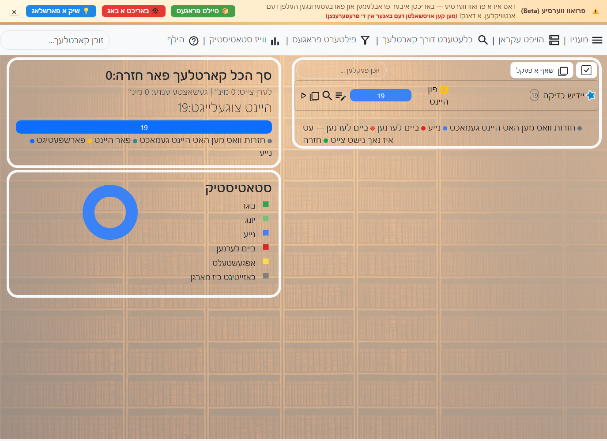
10 שאלות מיט אן אויסוואל פון תשובות (איין קארטל)
די הויפט פעלדער זענען שאלה, title, qtype, q1 ביז q5, answers, sources און extra. מען שרייבט די שאלה, לייגט צו ביז פינף תשובה אויסוואלן און באשטימט דעם סארט שאלה אין qtype: 0 צו אנצייכענען ביי יעדער תשובה צי זי איז ריכטיג אדער נישט, 1 צו אנצייכענען אלע ריכטיגע תשובות, און 2 צו אויסקלייבן איין ריכטיגע תשובה. אין answers שרייבט מען די נומערן פון די ריכטיגע תשובות, למשל 1 אדער 1 2.
דער סארט פאסט פאר בחינות מיט אויסוואלן, פארגלייכן קליינע חילוקים צווישן ענליכע תשובות, אדער חזרה אויף חומר וואו מען דארף דערקענען דעם גענויען אויסוואל פון עטליכע ענליכע נוסחאות.
אויסער די סארטן וואס זענען צוגעלייגט אין דער אויסגאבע, זענען דא נאך סארטן וואס קומען מיט דער יסודות’דיגער אנקי פראגראם. ביי עקזיסטירנדע רשומות קענען די אלטע נעמען פון די סארטן און פעלדער בלייבן אין דער פריערדיגער שפראך:
- פשוט האט “פארנט” און “הינטן” פעלדער און שאפט איין קארטל. דער טעקסט אין “פארנט” קומט אויף דער פארנט זייט, און דער טעקסט אין “הינטן” אויף דער הינטערשטער זייט.
- פשוט (מיט א פארקערטן קארטל) ווי “פשוט”, אבער שאפט צוויי קארטלעך פונעם אריינגעשריבענעם טעקסט: פארנט←הינטן און הינטן←פארנט.
- פשוט (פארקערטער קארטל לויטן וואונטש) ווי “פשוט”, אבער מיט א דריטן פעלד מיטן נאמען “צולייגן פארקערט”. אויב איר שרייבט עפעס אין דעם פעלד, ווערט אויך געשאפן א פארקערטער קארטל (הינטן←פארנט).
- פשוט (אריינטייפן דעם ענטפער) למעשה “פשוט” מיט נאך א טעקסט פעלד אויף דער פארנט זייט, וואו מען קען שרייבן דעם ענטפער. ווען מען אנטפלעקט די הינטערשטע זייט, ווייזט Anki די חילוקים צווישן אייער טעקסט און דעם ריכטיגן ענטפער. פאר מער, זעט פעלדער ערזעצונגען.
- אויסגעלאזטע ווערטער א סארט רשומה וואס לאזט אויסקלייבן טעקסט און מאכן אן אויסלאז, ענליך צו 08 אויבן (למשל, “שנים אוחזין ב-[…]” ← “שנים אוחזין בטלית”). פאר מער, זעט פילט אויס דאס אויסגעלאזטע.
- פארדעקן א בילד (Image Occlusion)
ווי דער אויסלאז סארט רשומה, אבער מיט בילדער אנשטאט טעקסט. דאס העלפט בפרט ביי חומר וואס פארלאזט זיך שטארק אויף בילדער. עס ארבעט ענליך צו 09, אבער איז ווייניגער רעקאמענדירט צוליב פארשידענע פראבלעמען. פאר אנווייזונגען, זעט פארדעקן א בילד אינעם מדריך.
רשומות און סארטן רשומות זענען פאר דער גאנצער זאמלונג און נישט באגרעניצט צו איין פעקל. מען קען דעריבער נוצן פארשידענע סארטן רשומות אין איין פעקל, אדער לייגן קארטלעך פון דער זעלבער רשומה אין פארשידענע פעקלעך. ביים צולייגן רשומות קען מען אויסקלייבן סיי דעם סארט רשומה און סיי דעם פעקל, און די בחירות זענען אינגאנצן אומאפהענגיג. מען קען אויך טוישן דעם סארט רשומה פון רשומות נאכן זיי שוין שאפן.
זאמלונג
אייער זאמלונג איז אלע חומר געהיטן אין Anki: קארטלעך, רשומות, פעקלעך, סארטן רשומות, פעקל אויסוואלן אא“וו.
געטיילטע פעקלעך
דער גרינגסטער וועג אנצוהייבן מיט Anki איז צו נוצן א קארטלעך פעקל וואס אן אנדערער האט געשריבן:
- דרוקט “מעניו” אויבן רעכטס און דערנאך די שאלות זאמלונג.
- ווען איר געפינט א פעקל וואס אינטערעסירט אייך, דרוקט “באשטעטיגן” צו אימפארטירן דאס פעקל. זעט די אויסוואלן אינעם מאגר פענצטער.
- דרוקט צוויי מאל אויף א פעקל צו אימפארטירן אים אין Anki. אויב איר האט באקומען א פעקל פון אן אנדערן, עפנט דעם הויפט מעניו און קלייבט אימפארטירן.
שאפן אן אייגענעם פעקל איז דער ווירקזאמסטער וועג צו לערנען א קאמפליצירטן נושא. רוב תורה און הלכה נושאים קען מען נישט לערנען ווירקזאם אן פארשטיין זייער הסבר און הקשר. אויך צווינגט דאס אליין אריינלייגן אינפארמאציע אייך אויסצוקלייבן די הויפט נקודות, און דאס ברענגט צו א בעסערער הבנה.
לערנט נישט אויב איר פארשטייט נישט.
--SuperMemo
רוב געטיילטע פעקלעך ווערן געשאפן דורך מענטשן וואס לערנען דעם חומר אויסער Anki, למשל פון ספרים און שיעורים. זיי קלייבן די אינטערעסאנטע נקודות און לייגן זיי אריין אין Anki. זיי קענען נישט מאכן אן עקסטרע מי צוצולייגן הינטערגרונט אדער הסברים, ווייל זיי פארשטייען שוין דעם חומר. ווען אן אנדערער נוצט זייער פעקל, קען עס דעריבער זיין זייער שווער צוליב די פעלנדיגע הינטערגרונט און הסברים.
דאס מיינט נישט אז געטיילטע פעקלעך האבן נישט קיין תועלת. אויב איר האט ווייניג צייט, לערנט א געוויסן ספר און איינער האט געטיילט א שאלות פעקל פון יענעם ספר, קען עס שפארן צייט. פאר פשוטע נושאים וואס זענען בלויז א ליסטע פאקטן דארף מען מסתמא נישט קיין אויסערליכן חומר. אבער ביי קאמפליצירטע נושאים זאל מען נוצן געטיילטע פעקלעך אלס א צוגאב צום אויסערליכן חומר און נישט אלס א ערזעצונג דערפאר.
באקומען הילף
וויאזוי צו פרעגן גוטע פראגעס
איר קענט באקומען טעכנישע שטיצע און ענטפערס אויף פראגעס ביים אימעיל anki4tora@gmail.com.
איר דארפט זיך נישט שעמען, זיך זארגן פארן שטיצער, אדער זיך אפהאלטן פון פרעגן פראגעס און בעטן א לייזונג פאר פראבלעמען. דער שטיצער העלפט מיט שמחה, פון זיין אייגענעם ווילן און לויט זיין מעגליכקייט.
כדי צו שפארן צייט פאר אייך און פארן שטיצער, ראט מען ערשט צו פרובירן אליין צו לייזן דעם פראבלעם:
- ליינט דעם קאפיטל אנהייבן צו ארבעטן אינעם מדריך.
- אויב איר האט געטראפן א באג, גייט נאך די פאלגנדע שריט.
- נוצט דעם זוך-קנעפל אויף דעם בלאט צו זוכן אפטע פראגעס.
- נוצט דעם זוך-קנעפל אינעם מדריך.
אויב איר האט פרובירט די אלע עצות און זענט נאך אלץ שטעקן געבליבן, איז צייט צו בעטן הילף. ווען איר שרייבט דעם באריכט, באשרייבט דעם פראבלעם קלאר און מיט פרטים.
פארמיידט אומקלארע פראגעס ווי:
מיין Anki ארבעט נישט. וואס זאל איך טון?
גיט אנשטאט דעם ווי מער פרטים. צום ביישפיל:
ווען איך דרוק צוויי מאל אויפן Anki-אייקאן, עפנט זיך א פעלער-הודעה. איך האב פרובירט זוכן דעם פעלער אינעם מדריך, אבער נישט געטראפן קיין נוצליכע תשובה. איך האב צוגעשטעלט א בילד פון דער הודעה, אדער געקאפירט איר טעקסט אונטן אין מיין באריכט. איך בין נאכגעגאנגען די שריט אויפן בלאט “לייזן פראבלעמען”, אבער די הודעה קומט נאך אלץ. וואס זאל איך טון?
דאס איז א פיל בעסערע פראגע. זי דערציילט אונז:
- וואס איר האט שוין פרובירט.
- וועלכע שריט איר טוט ווען דער פראבלעם קומט פאר.
- וועלכע פראבלעמען אדער פעלער-הודעות איר זעט.
די פרטים מאכן אסאך גרינגער צו ענטפערן אייער פראגע.
דער פעקלעך פענצטער
אינהאלט
דער פעקלעך פענצטער איז דער הויפט פענצטער פון דער פראגראם. פון דארט קלייבט מען וואס צו לערנען, זעט וויפיל קארטלעך ווארטן, לייגט צו פראגעס, עפנט דורכבלעטערן און קומט צו די געווענליכע פעקל פעולות.

די פעקלעך ליסטע
יעדער פעקל האט אן אייגענע שורה. דרוקן אויפן נאמען קלייבט אויס דעם פעקל און עפנט זיין סיכום פענצטער. אויב דער פעקל האט אונטערפעקלעך, עפנט און פארמאכט דער פייל נעבן אים די אינערליכע ליסטע. ווען עס זענען דא אסאך פעקלעך, קען מען נוצן דאס זוכן פעלד אינעם הויפט פענצטער צו פארקלענערן די ליסטע לויטן פעקל נאמען אדער וועג.
די שורה מיט א גראען הינטערגרונט איז דער יעצטיגער פעקל. רוב קורצוועג פעולות אינעם פעקלעך פענצטער, ווי אנהייבן לערנען אדער עפענען אויסוואלן, גייען אן אויפן אנגעצייכנטן פעקל. נאכן אריינגיין אין א פעקל, קומט זיין נאמען אויך אין דעם קעפל פונעם סיכום און לערנען פענצטער, כדי קלאר צו זען וואו מען האלט.
די קנעפלעך אין דער פעקל שורה
ביי דער זייט פון יעדער פעקל שורה זענען דא קליינע קנעפלעך פאר שנעלע פעולות:
- שרייבט א פראגע: עפנט דעם צולייגן פענצטער מיט דעם פעקל שוין אויסגעקליבן אלס ציל.
- דורכבלעטערן: עפנט דעם דורכבלעטערן פענצטער מיטן זוכן באגרעניצט צו דעם פעקל.
- שאפן אן אונטערפעקל: לייגט צו א נייעם פעקל אינעם יעצטיגן פעקל.
- לערנען: עפנט דעם חזרה פענצטער.
דרוקן מיטן רעכטן מייז קנעפל אויף א פעקל שורה עפנט נאך פעולות, ווי טוישן נאמען, אויסמעקן, עקספארטירן, פעקל אויסוואלן, אייגענע לערנען, פילטערן פראגעס און צוריקברענגען פון באזייטיגן ביז מארגן. ביי געפילטערטע פעקלעך איז אויך דא איבערבויען אדער אויסליידיגן.
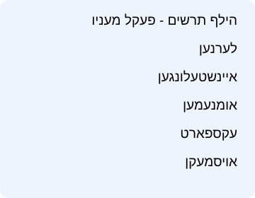
די פארשריט לייסטן
אין מיטן פון דער פעקל שורה איז דא א קאלירטע לייסט וואס גיט א סיכום פונעם פעקל פאר היינט. האלטן דעם מייז איבער אירע טיילן ווייזט מער גענויע פרטים.
- נייע קארטלעך: חומר וואס איז נאכנישט געלערנט געווארן.
- ביים לערנען: קארטלעך אין קורצע לערנען טריט וואס דארפן בקרוב צוריקקומען.
- קארטלעך פאר חזרה: קארטלעך וועמענס חזרה צייט איז אנגעקומען.
- חזרות געטון היינט: א גראער טייל וואס ווייזט וויפיל איר זענט שוין דורכגעגאנגען היינט.
- פאר מארגן: ווען עס איז נישט דא נאך חומר פאר היינט אבער עס זענען דא קארטלעך פאר מארגן, קען די לייסט ווייזן מארגן’ס עול.
נומערן אין קלאמערן אין דער לייסט ווייזן קארטלעך איבער דער יעצטיגער טעגליכער גרענעץ. למשל, חזרות וואס זענען באהאלטן צוליב דער טעגליכער חזרה גרענעץ וועלן שטיין אין קלאמערן און נישט דווקא אריינגיין אינעם לערנען רונדע, ביז איר טוישט די גרענעץ אדער נוצט א פאסיגן כלי.
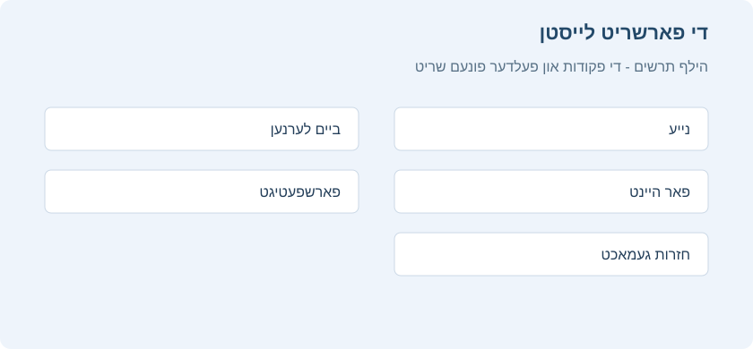
צושטאנד סימבאלן
נעבן יעדן פעקל איז דא א צושטאנד סימבאל. א ליידיגער פעקל ווערט אנגעצייכנט אנדערש פון א פעקל מיט חומר. ווען אלע חומר פאר היינט איז פארטיג, קומט א פארטיג סימן. אויב עס זענען דא קארטלעך וואס זענען באזייטיגט ביז מארגן, קען דער סימבאל ווייזן אז דער פעקל איז פארטיג, אבער עס איז נאך דא חומר וואס איז באהאלטן ביז מארגן אדער ביז מען ברענגט עס צוריק. א געפילטערטער פעקל האט אן אייגענעם סימן, כדי קלאר צו ווייזן אז זיינע קארטלעך זענען געקומען פון אנדערע היים פעקלעך.
חזרות היץ מאפע
אינעם הויפט פענצטער און אינעם פעקל סיכום איז דא א חזרות היץ מאפע, ווי א קאלירטער קאלענדאר. יעדער טאג וואס איר האט געלערנט באקומט א קאליר לויטן צאל חזרות. אזוי זעט מען שנעל א רצף פון לערנען, פארנומענע טעג און שטילערע טעג.
סטאטיסטיק און א קיילעכדיגער דיאגראם
ביי דער זייט פונעם פעקלעך פענצטער איז דא א סטאטיסטיק געגנט מיט א סיכום פון דער זאמלונג פאר היינט. אויבן זעט מען סך הכל קארטלעך פאר חזרה, וויפיל קארטלעך זענען צוגעקומען היינט און די געשאצטע לערנען צייט. די פארשריט לייסט אונטן טיילט די ארבעט אין קאטעגאריעס, ווי חזרות שוין געטון היינט, קארטלעך פאר היינט, פארשפעטיגטע קארטלעך און נייע קארטלעך. דרוקן אויף א טייל סטאטיסטיק נומערן עפנט א בחינה אויף די קארטלעך פון יענעם נומער, למשל חזרה אויף קארטלעך פאר היינט. דרוקן אויף אנדערע נומערן עפנט דורכבלעטערן מיט א פאסיגן זוכן, כדי מען זאל קענען זען פון וועלכע קארטלעך דער נומער באשטייט איידער מען באשליסט וואס צו טון.
אונטער דער היץ מאפע איז דא א קיילעכדיגער דיאגראם מיטן נאמען סטאטיסטיק. דער שליסל טיילט די זאמלונג אין בוגר, יונג, נייע, ביים לערנען, אפגעשטעלט און באזייטיגט ביז מארגן. האלטן דעם מייז איבער א טייל אדער זיין באשרייבונג ווייזט אן הסבר און נומערן. דרוקן דערויף עפנט דורכבלעטערן געפילטערט צו יענער גרופע.
אויף סך הכל קארטלעך פאר חזרה קען מען עפענען א מעניו מיטן רעכטן מייז קנעפל. דארט קען מען באשטימען צי אויך אריינצונעמען נייע קארטלעך אין דער חזרה, אויסקלייבן דעם סדר פון די קארטלעך וואס מען הייבט אן פונעם הויפט פענצטער, אדער מקדים זיין חזרה אויף מארגן’ס קארטלעך וואס זענען נישט יונג. אינעם צוזאמענגעדריקטן מצב ווערט דער קאלענדאר באהאלטן און די סטאטיסטיק קלענער, צו לאזן מער פלאץ פאר דער פעקלעך ליסטע. זעט צוזאמענגעדריקטער מצב און גראע שאטירונגען.
ווארענונג וועגן א גרויסן עול
אונטער דער צאל חזרות פאר היינט קען דער פענצטער ווייזן א ווארענונג איבער קומענדיגע טעג מיט א גרויסן ערווארטעטן צאל חזרות. די ווארענונג איז נישט פארבונדן מיט פראגעס וואס זענען שוין פארשפעטיגט; זי העלפט אייך זען אן אנקומענדיגן עול פאראויס. דרוקן אויף א טאג אין דער ווארענונג הייבט אן א חזרה אויף עלטערע פראגעס וואס זענען באשטימט פאר יענעם טאג, און וואס מען קען א ביסל מקדים זיין אן א גרויסן פארלוסט.

צוזאמענגעדריקטער מצב און גראע שאטירונגען
ווער עס ארבעט מיט אסאך פעקלעך קען אנצינדן צוזאמענגעדריקטער מצב. דאס באהאלט דעם קאלענדאר אינעם הויפט פענצטער און מאכט די סטאטיסטיק קלענער, צו באפרייען פלאץ פאר דער פעקלעך ליסטע. מען קען אויך פארקלענערן די גרייס פונעם צוזאמענגעדריקטן אויסשטעל לויט פראצענט.

צו אנצינדן דעם מצב, עפנט הויפט מעניו > איינשטעלונגען > אויסזען, און ביי אויסזען פונעם הויפט בלאט צייכנט אן צוזאמענגעדריקטער מצב. אויפן זעלבן פלאץ קען מען אויך טוישן אויסשטעל גרייס אינעם צוזאמענגעדריקטן מצב.
דארט קען מען אויך אנצינדן הויפט עקראן אין גראע שאטירונגען (אן קאלירן). דאס פארבייט די קאלירטע פעקלעך תצוגה מיט א שטילערן אויסשטעל, פאר ווער עס וויל ווייניגער קאלירן ביים לערנען.
אויסקלייבן עטליכע פעקלעך
אויבן אין דער פעקלעך ליסטע איז דא א בחירה קנעפל. אין דעם מצב קען מען אנצייכענען עטליכע פעקלעך און טון אויף זיי פעולות ווי קאפירן, אויסשניידן, אריינקלעבן אדער אויסמעקן, לויט די אויסוואלן אויפן לייסט. נוצט דאס פארזיכטיג ווען איר שטעלט איבער א גרויסן בוים פון פעקלעך.
קורצוועגן פונעם פעקלעך פענצטער
מען קען איינשטעלן קורצוועגן פאר געווענליכע פעקל פעולות אינעם איינשטעלן קורצוועג קנעפלעך פענצטער פונעם הויפט מעניו. עפנט דארט דעם הויפט עקראן קוויטל און זוכט די גרופע קורצוועג קנעפלעך פאר פעקל אויסוואלן. דארט זענען פעולות ווי טוישן נאמען, אויסוואלן, עקספארטירן, אויסמעקן, שאפן אן אונטערפעקל, סיכום, פילטערן פראגעס און אייגענע לערנען.
לערנען
אינהאלט
ווען איר האט געפונען א פעקל אויף א נושא וואס איר לערנט, אדער אריינגעלייגט עטליכע רשומות, איז צייט אנצוהייבן לערנען.
פעקלעך
לערנען אין אנקי איז באגרעניצט צום יעצטיגן אויסגעקליבענעם פעקל און אלע זיינע אונטערפעקלעך. אינעם פעקלעך פענצטער קלייבט מען דעם פעקל, זעט וויפיל קארטלעך ווארטן פאר היינט און עפנט פעולות ווי צולייגן, דורכבלעטערן, פילטערן און פעקל אויסוואלן.
פאר פרטים איבער די קנעפלעך אין דער פעקל שורה, פארשריט לייסטן, היץ מאפע, צוזאמענגעדריקטער מצב און גראע שאטירונגען, זעט דער פעקלעך פענצטער.
פראגעס
ווען א קארטל קומט, ווערט ערשט נאר די פראגע געוויזן. נאכן טראכטן פונעם ענטפער, דרוקט ווייזן ענטפער אדער רווח. דער ענטפער קומט דערנאך. עס איז אין ארדענונג אויב עס נעמט א ביסל צייט זיך דערמאנען. אבער אלס אלגעמיינער כלל, אויב איר קענט נישט ענטפערן אין בערך 10 סעקונדעס, איז מסתמא בעסער צו ווייזן דעם ענטפער אנשטאט ווייטער זיך אנשטרענגען צו געדענקען.
ענטפער קנעפלעך
נאכן ווייזן דעם ענטפער, פארגלייכט אייער געדאכטן ענטפער מיט דעם געוויזענעם און קלייבט איינס פון די פאלגנדע קנעפלעך.
-
נאכאמאל: קלייבט ווען אייער ענטפער איז נישט ריכטיג אדער איר האט זיך נישט געקענט דערמאנען. ביי א טיילווייז ריכטיגן ענטפער זאל מען זיין שטרענג מיט זיך: אויב דאס וואלט געהייסן א דורכפאל אין אמת’ן לעבן אויסער אנקי, הייסט עס אויך א דורכפאל אין אנקי. געווענליך נוצט מען דעם קנעפל בערך 5–20% פון די מאל.
קורצוועג קנעפל: 1
-
שווער: קלייבט ווען אייער ענטפער איז ריכטיג, אבער איר האט געהאט ספיקות אדער עס האט גענומען לאנג זיך דערמאנען.
קורצוועג קנעפל: 2
-
גוט: קלייבט ווען אייער ענטפער איז ריכטיג, אבער עס האט געפאדערט א ביסל מחשבה זיך דערמאנען. ביים ריכטיגן נוצן אנקי איז דאס דער מערסט גענוצטער קנעפל. געווענליך נוצט מען אים בערך 80–95% פון די מאל.
קורצוועג קנעפל: 3, רווח, Enter
-
גרינג: קלייבט ווען אייער ענטפער איז ריכטיג און איר האט זיך דערמאנט אן קיין אנשטרענגונג.
קורצוועג קנעפל: 4
אויב פיר ענטפער קנעפלעך זענען אייך שווער צו נוצן, קען מען נוצן נאר נאכאמאל און גוט: נאכאמאל פאר נישט ריכטיגע ענטפערס, און גוט פאר ריכטיגע.
איבער יעדן ענטפער קנעפל שטייט ווען דאס קארטל וועט נאכאמאל קומען אויב איר קלייבט יענעם קנעפל. פאר די איינשטעלונגען וואס באשטימען די קומענדיגע חזרה אפשטאנדן, זעט לערנען טריט, פארגעסונגען, FSRS און פארגעשריטן אינעם פעקל אויסוואלן פרק.
ענטפער קנעפלעך און פארשריט תצוגה
אויב איר ווילט א פשוטערע בחירה, כדי נישט געפרואווט צו ווערן צו דרוקן שווער אנשטאט נאכאמאל ווען איר קענט נישט דעם ענטפער, עפנט הויפט מעניו > איינשטעלונגען > חזרה און צייכנט אן ווייזן נאר צוויי ענטפער קנעפלעך. דער חזרה פענצטער וועט דערנאך ווייזן איך ווייס / איך ווייס נישט. נוצט איך ווייס נישט ווען איר האט נישט געקענט ענטפערן, און איך ווייס ווען איר האט געוואוסט. אויך די קורצוועגן בלייבן באקוועם: 1 איז א נעגאטיווער ענטפער, און די אנדערע הויפט ענטפער קנעפלעך פירן צו א פאזיטיוון ענטפער.
אונטן אינעם לערנען פענצטער איז דא א פארשריט לייסט וואס ווייזט וויפיל קארטלעך איר זענט שוין דורכגעגאנגען און וויפיל בלייבן אינעם יעצטיגן רונדע. צו ווייזן אדער באהאלטן די לייסט, עפנט הויפט מעניו > איינשטעלונגען > אויסזען און טוישט ווייזן פארשריט לייסט.
בשעת א בחינה קומט אויך א קליינע סימבאלן לייסט איבער די ענטפער קנעפלעך. די סימבאלן זענען פאר שנעלע פעולות אויפן יעצטיגן קארטל: דער פירעק מיטן בלייפעדער ווייזט אדער באהאלט א פעלד צו פריי שרייבן דעם ענטפער, כדי איר זאלט קענען פאר זיך שרייבן דעם ענטפער פארן דרוקן ווייזן ענטפער. מען קען עס נוצן אויך ביי געווענליכע קארטלעך וואס האבן נישט דעם באזונדערן שרייבן תשובה סארט רשומה. דער שפיל סימבאל שפילט נאכאמאל דעם קול אדער ווידיא פונעם קארטל; דער געבויגענער פייל נעמט צוריק די לעצטע פעולה אדער גייט צוריק צו דער פריערדיגער פראגע; דער באזייטיגן סימבאל שטופט דאס קארטל אדער די רשומה ביז מארגן; דער קיילעכדיגער פייל עפנט ניי באשטימען א צייט פלאן מיט דער האנט; און דער שטערן צייכנט אן אדער נעמט אראפ דעם סימון פון דער יעצטיגער רשומה, כדי איר זאלט זי שפעטער קענען געפינען אין דורכבלעטערן.

צופעליגקייט פאקטאר
ווען איר קלייבט אן ענטפער קנעפל אויף א חזרה קארטל, לייגט Anki אויך צו א קליינע מאס “צופעליגקייט”. דאס פארמיידט אז קארטלעך וואס זענען געוויזן געווארן אינעם זעלבן צייט און באקומען די זעלבע אפשאצונגען זאלן בלייבן צוזאמען און שטענדיג קומען אין דעם זעלבן חזרה טאג.
דעריבער, אפילו איר דרוקט גוט אויף עטליכע פראגעס וואס זענען צוגעקומען אינעם זעלבן צייט, קען יעדע קומען אין אן אנדער צייט.
לערנען קארטלעך באקומען אויך ביז 5 מינוט צוגעלייגטע ווארט צייט, כדי זיי זאלן נישט שטענדיג קומען אינעם זעלבן סדר. די ענטפער קנעפלעך ווייזן אבער נישט דעם צוגעלייגטן צייט. מען קען דאס נישט אויסלעשן.
רעדאקטירן און נאך
מען קען דרוקן רעדאקטירן אונטן רעכטס צו רעדאקטירן די יעצטיגע רשומה. נאכן פארענדיגן גייט מען צוריק צום לערנען. דער רעדאקטירן פענצטער ארבעט זייער ענליך צו צולייגן רשומות.
נעבן אים איז שיקט צום באארבעטן. דאס ברענגט די רשומה אין א באזונדערן פעקל וואו די רשומות ווערן געהיטן באזונדער. עס איז געמאכט פאר ווען איר טרעפט אינעם בחינה א רשומה וואס דארף א באזונדערע רעדאקציע, און איר ווילט נישט אפשטעלן דעם בחינה עס יעצט צו באארבעטן. די רשומה גייט צוריק אין דעם יעצטיגן פעקל נאכן איר חזרן איין מאל אינעם באזונדערן פעקל.
נעבן אים איז אינפארמאציע, וואס עפנט א פענצטער ביי דער רעכטער זייט מיט פרטים איבערן יעצטיגן קארטל.
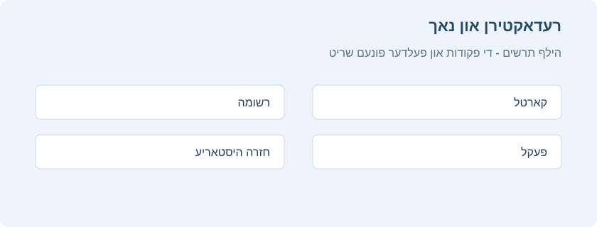
לינקס פון די ענטפער קנעפלעך איז איבערשפרינגען, וואס ברענגט אייך צו דער קומענדיגער פראגע.
נעבן אים איז צוריקנעמען די לעצטע פעולה / צוריק צו דער פריערדיגער פראגע. דאס נעמט צוריק די לעצטע פעולה. אויב די לעצטע פעולה איז געווען דרוקן אן ענטפער קנעפל, וועט עס צוריקברענגען די פריערדיגע פראגע און צוריקנעמען אייער אפשאצונג. אויב די לעצטע פעולה איז געווען רעדאקטירן, גייט דאס קארטל צוריק צו זיין אריגינעלן צושטאנד, און אזוי ווייטער.
מען קען רעדאקטירן געוויסע פעלדער גלייך אינעם חזרה פענצטער, אן אפשטעלן דאס לערנען און עפענען א פולן רעדאקטירן פענצטער. פאר א קליינעם תיקון ווי ניקוד, א שרייב טעות אדער נוסח, דרוקט אינעם פעלד וואס מען קען רעדאקטירן, טוישט וואס מען דארף און זיכערט אפ. דערנאך קומט מען צוריק צום זעלבן קארטל און קען ווייטער לערנען.
אויב איר רעדאקטירט מנוקד’דיגע עברית בשעת חזרה, דרוקט מיטן רעכטן מייז קנעפל אינעם רעדאקטירבארן פעלד. אינעם מעניו וועלן קומען ניקוד און טעמי המקרא סימנים, ווי אינעם רעדאקטאר מעניו. קלייבט דעם סימן, און ער גייט אריין ביים סמן. אזוי קען מען פארריכטן א קליינע ניקוד טעות אן צו עפענען דעם פולן רעדאקטירן פענצטער.
אונטן לינקס אינעם לערנען פענצטער איז נאך אויסוואלן. עס גיט נאך פעולות אויפן יעצטיגן קארטל אדער רשומה:
-
אנצייכענען א קארטל מיט א פאן: לייגט צו אדער נעמט אראפ א קאלירטן סימן אויפן קארטל. פאנען ווערן געוויזן ביים לערנען, און מען קען זוכן אנגעצייכנטע קארטלעך אין דורכבלעטערן. דאס העלפט ווען איר ווילט שפעטער טון עפעס אויפן קארטל, ווי זוכן א ווארט. מען קען אויך טוישן די פאנען נעמען אין דורכבלעטערן.
-
באזייטיגן א קארטל / רשומה ביז מארגן: באהאלט א קארטל אדער אלע קארטלעך פון דער יעצטיגער רשומה ביז צומארגנס. צו צוריקנעמען דאס פריער, דרוקט “צוריקברענגען פון באזייטיגן” אינעם סיכום פענצטער. דאס העלפט ווען איר קענט יעצט נישט ענטפערן אדער ווילט צוריקקומען אן אנדער מאל. פארבונדענע קארטלעך פון דער זעלבער רשומה קענען אויך ווערן אויטאמאטיש באזייטיגט.
-
צוריקשטעלן צייט פלאן (פארגעסן קארטל): ברענגט דאס יעצטיגע קארטל צום סוף פונעם נייע קארטלעך ריי.
“צוריקשטעלן אריגינעלן פלאץ” לאזט צוריקשטעלן דאס קארטל צו זיין אריגינעלן פלאץ ביים צוריקשטעלן.
“צוריקשטעלן צאל חזרות און פארגעסונגען” שטעלט ביידע ציילערס צו נול, אויב דער אויסוואל איז אנגעצונדן. עס נעמט נישט אראפ די חזרות היסטאריע אונטן אינעם קארטל אינפארמאציע פענצטער.
-
שטעלן א חזרה דאטום: לאזט באשטימען אן אייגענעם דאטום פארן יעצטיגן קארטל ווען די צייטן איבער די ענטפער קנעפלעך פאסן נישט פאר דעם באזונדערן פאל. מען קען שרייבן א צאל טעג, א דאטום אדער א טעג פארנעם ווי
7-14. די פעולה שרייבט נישט איין קיין ענטפער און ערזעצט נישט נאכאמאל, גוט און גרינג. זי טוישט נאר ווען דאס קארטל וועט צוריקקומען. דערפאר איז כדאי עס בעיקר צו נוצן פאר א בחינה, א באוואוסטזיניגע אפשטופונג פון א קארטל אדער א באזונדערן צייט פלאן תיקון. -
אפשטעלן א קארטל / רשומה: באהאלט דאס קארטל אדער אלע קארטלעך פון דער יעצטיגער רשומה ביז מען ברענגט זיי צוריק מיט דער האנט, דורך דרוקן דעם אפשטעלן קנעפל אין דורכבלעטערן. דאס העלפט צו נישט חזרן די רשומה א תקופה אן איר אויסצומעקן.
-
אפציעס: רעדאקטירט די אויסוואלן פונעם יעצטיגן פעקל.
-
קארטל אינפארמאציע: ווייזט סטאטיסטיק איבערן קארטל.
-
פריערדיגער קארטל אינפארמאציע: ווייזט סטאטיסטיק איבערן פריערדיגן קארטל.
-
אנצייכענען א רשומה: לייגט צו דעם “אנגעצייכנט” צעטל צו דער יעצטיגער רשומה, כדי גרינג צו געפינען זי אין דורכבלעטערן. דאס איז ענליך צו אנצייכענען איינציגע קארטלעך מיט א פאן, אבער נוצט א צעטל. אויב די רשומה האט עטליכע קארטלעך, וועלן אלע קומען ביים זוכן דעם “marked” צעטל. רוב באניצער וועלן בעסער נוצן פאנען.
-
שאפן א קאפיע: עפנט א קאפיע פון דער יעצטיגער רשומה אינעם רעדאקטאר. מען קען איר א ביסל טוישן צו גרינג באקומען פארשידענע ווערסיעס פון די קארטלעך. לויט דער ברירת מחדל קומט די קאפיע אינעם זעלבן פעקל ווי דער אריגינעל.
-
אויסמעקן רשומה: מעקט אויס די רשומה מיט אלע אירע קארטלעך.
-
נאכאמאל אפשפילן קול: אויב דאס קארטל האט קול פארנט אדער הינטן, שפילט אים נאכאמאל.
-
אפשטעלן קול צייטווייליג: שטעלט צייטווייליג אפ דעם קול ווען עס שפילט.
-
קול -5 סעקונדעס / +5 סעקונדעס: שפרינגט צוריק אדער פאראויס 5 סעקונדעס אינעם קול וואס שפילט יעצט.
-
רעקארדירן אייער קול: רעקארדירט פונעם מיקראפאן כדי צו איבערקוקן אייער אויסשפראך. די רעקארדירונג איז צייטווייליג און פארשווינדט ביים קומענדיגן קארטל. צו שטענדיג צולייגן קול צום קארטל, טוט עס אינעם רעדאקטירן פענצטער.
-
נאכאמאל אפשפילן אייגענעם קול: שפילט נאכאמאל די צייטווייליגע רעקארדירונג פון רעקארדירן אייער קול, כדי צו פארגלייכן מיט דער תשובה אדער דער געוואונטשענער אויסשפראך. אויב איר האט נישט רעקארדירט אויפן יעצטיגן קארטל, איז נישט דא וואס אפצושפילן.
-
אויטאמאטיש ווייטערגיין: מאכט אז אנקי זאל אויטאמאטיש ווייזן די קומענדיגע פראגע אדער ענטפער נאך א צייט וואס מען קען באשטימען אין די פעקל אויסוואלן.
-
באשטימען א דאטום מיט דער האנט: עפנט א באקוועמען פענצטער צום ניי באשטימען דעם יעצטיגן קארטל’ס צייט פלאן. אנשטאט געדענקען דעם סינטאקס, קען מען מסודר אויסקלייבן אדער שרייבן א דאטום און פארנעם. דאס איז נאך א פעולה בשעת דער בחינה און נישט קיין פעקל איינשטעלונג. נוצט עס ווען איר ווילט באשטימען ווען דאס קארטל זאל צוריקקומען, אנשטאט טוישן דעם פעקל’ס קבוע’ן לערנען וועג.
-
באהאלט די תשובה: לאזט באהאלטן דעם ענטפער נאכן דרוקן “ווייזן ענטפער”.
-
פראגעס געענטפערט אין דער בחינה: האלטן דעם מייז איבער דעם אויסוואל עפנט א מעניו מיט די פראגעס וואס זענען שוין געענטפערט געווארן אינעם יעצטיגן בחינה. דרוקן אויף א פראגע עפנט דורכבלעטערן מיט יענער פראגע. דאס העלפט אויב איר דערמאנט זיך צו רעדאקטירן עפעס וואס איר זענט שוין דורכגעגאנגען, אדער טרעפט א טאפלטע רשומה אא“וו.
דער תצוגה סדר
אנקי ווייזט קארטלעך פונעם אויסגעקליבענעם פעקל און אלע זיינע אונטערפעקלעך. דעריבער, אויב איר קלייבט “אורח חיים”, קומען אויך די אונטערפעקלעך “אורח חיים::דיני השכמת הבוקר” און “אורח חיים::דיני ציצית::סימן ח”.
לויט דער ברירת מחדל נעמט אנקי נייע קארטלעך פון די פעקלעך לויטן אלף בית. אינעם אויבנדערמאנטן ביישפיל באקומט מען ערשט “אורח חיים”, דערנאך “דיני ציצית” און צום סוף “סימן ח”. מען קען דערמיט באשטימען דעם סדר דורך לייגן וויכטיגערע קארטלעך אין פעקלעך וואס קומען העכער אין דער ליסטע. ביים אלף בית סארטירן קומט “-” פאר די אותיות און “~” נאך זיי. דעריבער קען מען רופן א פעקל “-דיני ציצית” כדי ער זאל קומען ערשט, און אן אנדערן “~דיני השכמת הבוקר” כדי ער זאל קומען נאכן גאנצן רעשט.
נייע קארטלעך און חזרות ווערן גענומען באזונדער. אנקי ווארט נישט אז ביידע רייען זאלן זיין ליידיג פארן גיין צום קומענדיגן פעקל. מען קען דעריבער זען נייע קארטלעך פון איין פעקל צוזאמען מיט חזרות פון אן אנדערן. אויב איר ווילט דאס נישט, דרוקט גלייך אויפן פעקל וואס איר ווילט לערנען אנשטאט אויף זיין הויפט פעקל.
לערנען קארטלעך זענען זייער צייט עמפינדליך. מען נעמט זיי דערפאר פון אלע פעקלעך צוזאמען און ווייזט זיי לויט דעם סדר ווען זיי ווערן גרייט.
צו באשטימען דעם סדר, זעט חזרה סדר אין די פעקל אויסוואלן. פאר א גענויערן סדר פון נייע קארטלעך, קען מען עס טוישן אין דורכבלעטערן.
פארבונדענע קארטלעך און באזייטיגן ביז מארגן
ווי דערמאנט אין די יסודות, קען אנקי שאפן מער פון איין קארטל פאר יעדן אריינגעלייגטן פרט, ווי פארנט←הינטן און הינטן←פארנט, אדער צוויי פארשידענע אויסלאזן פונעם זעלבן טעקסט. די פארבונדענע קארטלעך הייסן “ברידער”.
ווען איר ענטפערט אויף א קארטל מיט ברידער, קען אנקי זיי פארמיידן פון קומען אינעם זעלבן לערנען רונדע דורך אויטאמאטיש באזייטיגן זיי ביז מארגן. די קארטלעך בלייבן באהאלטן ביז דער זייגער הייבט אן א נייעם טאג, אדער ביז איר ברענגט זיי צוריק מיט דער האנט דורך צוריקברענגען פון באזייטיגן אונטן אינעם פעקל סיכום. אנקי באזייטיגט ברידער אפילו פון אן אנדער פעקל, למשל ווען איר נוצט פעקל איבערשרייבן.
מען קען אנצינדן באזייטיגן אין די פעקל אויסוואלן. עס זענען דא באזונדערע איינשטעלונגען פאר נייע קארטלעך און חזרות.
אנקי באזייטיגט נאר ברידער וואס זענען נייע אדער חזרה קארטלעך. עס באהאלט נישט לערנען קארטלעך, ווייל זייער צייט איז קריטיש. אבער ווען איר לערנט א לערנען קארטל, ווערן זיינע נייע און חזרה ברידער יא באזייטיגט.
מען קען נישט סיי באזייטיגן און סיי אפשטעלן א קארטל אויף איינמאל. אפשטעלן א באזייטיגט קארטל נעמט אים ארויס פון באזייטיגן. מען קען נישט באזייטיגן אפגעשטעלטע קארטלעך.
קורצוועג קנעפלעך
רוב געווענליכע אנקי פעולות האבן קורצוועג קנעפלעך. מען קען רוב פון זיי געפינען אינעם ממשק: מעניו זאכן ווייזן זייער קורצוועג נעבן זיי, און האלטן דעם מייז איבער א קנעפל ווייזט געווענליך דעם קורצוועג אין א קליינעם שוועבנדיגן פענצטער.
מען קען טוישן די קורצוועגן דורך איינשטעלן קורצוועג קנעפלעך אינעם הויפט מעניו. פאר אן הסבר, זעט קורצוועג קנעפלעך.
ביים לערנען ווייזן רווח אדער Enter דעם ענטפער. ווען דער ענטפער איז שוין זעבאר, קען מען מיט רווח אדער Enter אויסקלייבן ‘גוט’. 1 ביז 4 קלייבן א באזונדערן אפשאצונג קנעפל. פאר אסאך מענטשן איז באקוועם צו ענטפערן רוב קארטלעך מיט רווח און האלטן איין פינגער אויף 1 פאר ווען מען פארגעסט.
א הויפן פארשפעטיגטע חזרות
ווען חזרות הויפענען זיך אן, גיט אנקי לויט דער ברירת מחדל א קדימה פאר די קארטלעך וואס האבן דאס לענגסטע געווארט. דער סדר מאכט אז קיין קארטל זאל נישט בלייבן ווארטן אן א גרענעץ. אבער אויב איר לייגט צו נייע קארטלעך, וועלן זייערע חזרות ערשט קומען נאכן פארענדיגן דעם הויפן.
ווען איר ענטפערט אויף קארטלעך וואס האבן שוין א צייט געווארט, נעמט אנקי דעם פארשפעטיגונג אין חשבון ביים באשטימען דער קומענדיגער צייט. דעריבער, ווען איר קומט צוריק נאך א לאנגע הפסקה, דארף מען נישט אנהייבן פון דאסניי; מען קען פשוט ווייטערגיין פון וואו מען האט געהאלטן.
דער פעקל סיכום
נאך דער חזרה זעט איר א פענצטער וואס ווייזט וויפיל קארטלעך עס זענען דא צום לערנען היינט. דאס הייסט “דער פעקל סיכום”:
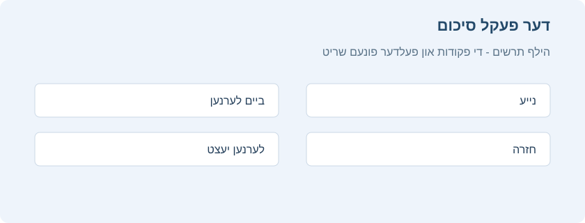
די קארטלעך זענען צעטיילט אין דריי סארטן: נייע, ביים לערנען און פאר חזרה. אויב איר האט אנגעצונדן באזייטיגן ברידער אין די פעקל אויסוואלן, קענט איר זען אין גרא וויפיל קארטלעך וועלן ווערן באזייטיגט:
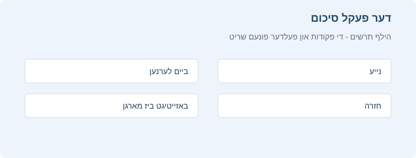
צו אנהייבן א לערנען רונדע, דרוקט לערנען יעצט. אנקי וועט ווייטער ווייזן קארטלעך ביז אלע קארטלעך באשטימט פאר היינט זענען פארטיג.
בשעת איר לערנט קען מען צוריקגיין צום סיכום מיט S.
צולייגן/רעדאקטירן
אינהאלט
- צולייגן קארטלעך און רשומות
- בדיקה פאר דאפלטע
- ווירקזאם לערנען
- צופאסן פעלדער
- טוישן פעקל / סארט רשומה
- ארגאניזירן אינהאלט
- ריכטיג נוצן פעקלעך
- נוצן צעטלעך
- נוצן פענער
- דער "אנגעצייכנט" צעטל
- צוגעפאסט לערנען און געפילטערטע פעקלעך
- רעדאקטירער פונקציעס
- דער רעדאקטירער סרגל
- נאך רעדאקטירער כלים
- פיל אויס דאס פעלנדיגע
- באהאלטן א בילד
- צולייגן א בילד
- צולייגן בילד באהאלטונג קארטלעך
- רעדאקטירן בילד באהאלטונג רשומות
צולייגן קארטלעך און רשומות
ווי ערקלערט אין די יסודות, לייגט מען אין אנקי צו רשומות, און אנקי שאפט פון זיי די קארטלעך. דריקט לייג צו  אין דער פעקל שורה אויפן פעקל עקראן, און דער רשומה צולייג פענסטער וועט זיך עפענען.
אין דער פעקל שורה אויפן פעקל עקראן, און דער רשומה צולייג פענסטער וועט זיך עפענען.
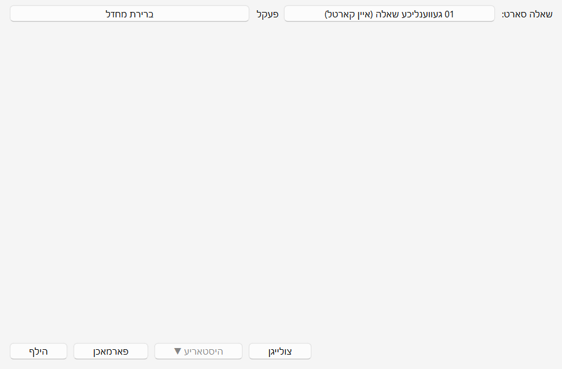
דער אויבערשטער רעכטער חלק ווייזט דעם יעצטיגן סארט רשומה, לויט וועלכן די קארטלעך ווערן געשאפן.
דער אויבערשטער לינקער חלק ווייזט דעם פעקל וואו די קארטלעך וועלן אריינגיין. אלס ברירת מחדל איז דאס דער פעקל וואס איר האט געדריקט זיין צולייג קנעפל. צו צולייגן קארטלעך אין אן אנדערן פעקל, דריקט דעם פעקל נאמען און דערנאך לייג צו.
אונטערן סארט רשומה זענען עטליכע קנעפלעך און א שטח מיט די קעפלעך “שאלה”, “תשובה”, “מקור” און “רמז”. דאס זענען די פעלדער. מיט א דרוק אויף “פעלדער…” אויבן קען מען טוישן געוויסע פרטים פון זיי.
אונטער די פעלדער איז נאך א שטח, צעטלעך. צעטלעך זענען עטיקעטעס וואס מען לייגט צו רשומות, כדי זיי גרינגער צו ארגאניזירן און געפינען. מען קען לאזן דעם שטח ליידיג, אדער צולייגן איין אדער מער צעטלעך. מען טיילט אפ צעטלעך מיט א רווח. אויב דארט שטייט
קרבן_פסח קרבן_תודה
וועט די נייע רשומה האבן צוויי צעטלעך. צו אפטיילן ווערטער אינעם זעלבן צעטל, נוצט אן אונטערשטריך ווי אינעם ביישפיל. מען שרייבט אן אונטערשטריך מיט Shift+-.
נאכן שרייבן טעקסט אינעם פארנט און הינטערשטן פעלד, דריקט “לייג צו” אדער Ctrl+Enter צו צולייגן די רשומה צו דער זאמלונג. אנקי שאפט דערביי אויך א קארטל און לייגט אים אינעם אויסגעקליבענעם פעקל. צו רעדאקטירן א פריש צוגעלייגטן קארטל, דריקט דעם געשיכטע קנעפל צו געפינען אים אינעם דורכבלעטערער.
פאר מער וועגן די קנעפלעך צווישן דעם סארט רשומה און די פעלדער, זעט דער רעדאקטירער.
בדיקה פאר דאפלטע
אנקי קוקט צי דער ערשטער פעלד איז איינציג, און וועט אייך ווארענען אויב צוויי קארטלעך האבן דעם זעלבן אינהאלט אינעם פארנט פעלד. די בדיקה גייט נאר אן אינעם יעצטיגן סארט רשומה. אויב איר לערנט פארשידענע נושאים, ווערן צוויי קארטלעך מיטן זעלבן פארנט פעלד נישט גערעכנט אלס דאפלטע, כל זמן יעדער נושא האט אן אנדערן סארט רשומה.
כדי צו ארבעטן עפעקטיוו, קוקט אנקי נישט אויטאמאטיש דאפלטע אין אנדערע פעלדער. אינעם דורכבלעטערער איז אבער דא “געפין דאפלטע”, וואס מען קען פון צייט צו צייט אויספירן.
ווירקזאם לערנען
פארשידענע מענטשן חזרן אנדערש, אבער א פאר אלגעמיינע יסודות זענען ראטזאם צו געדענקען. די SuperMemo ארטיקלען זענען א גוטער אריינפיר. באזונדער:
- האלט פשוט: וואס קירצער די קארטלעך, אלץ גרינגער צו חזרן. מען קען ווערן געצויגן אריינצולייגן אסאך אינפארמאציע “אויב מען וועט דארפן”, אבער די חזרות ווערן דערביי שנעל שווער.
- לערנט נישט אויסנווייניג אן פארשטיין: ביים לערנען א ליסטע פון באגריפן, צום ביישפיל, פרובירט אויסצומיידן לאנגע ווארט ליסטעס. עס איז בעסער צו לערנען אין א צוזאמענהאנג, ווען מען זעט ווי די ווערטער ווערן גענוצט אין א זאץ.
צופאסן פעלדער
צו צופאסן פעלדער, דריקט “פעלדער…” ביים צולייגן אדער רעדאקטירן א רשומה, אדער ווען דער סארט רשומה איז אויסגעקליבן אינעם ‘פיר סארטן רשומה’ פענסטער.
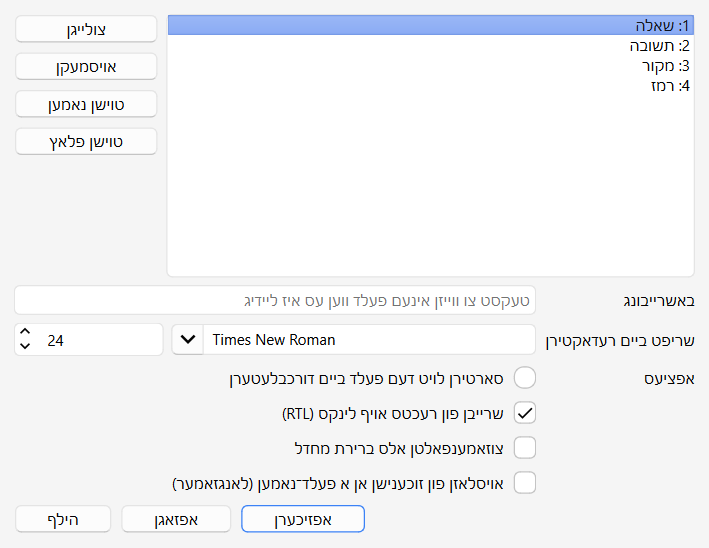
צו טוישן דעם סדר פון פעלדער אין דעם פענסטער און אינעם צולייג פענסטער, נוצט דעם פלאץ קנעפל. ער פרעגט וועלכן נומער דער פעלד זאל באקומען. צו מאכן א פעלד צום ערשטן, צום ביישפיל, שרייבט “1”.
מען קען אויך שלעפן די פעלד נעמען צו טוישן זייער סדר. נוצט דעם מויז אדער פינגער צו שלעפן דעם פעלד צום געוואונטשענעם פלאץ. אן אנצייגער וועט ווייזן וואו ער וועט גיין.
די אפציעס אונטן טוישן פעלד אייגנשאפטן ביים צולייגן און רעדאקטירן קארטלעך. זיי גייען אן אויפן רעדאקטירער פענסטער. דעם אויסזען פון קארטלעך ביים חזרן פאסט מען צו אין אן אנדערן ארט.
- רעדאקטירער שריפט באשטימט די שריפט און גרייס ביים רעדאקטירן רשומות. מען קען פארקלענערן ווייניגער וויכטיגע אינפארמאציע אדער פארגרעסערן דעם טעקסט פאר באקוועמליכקייט. די טוישן האבן נישט אן השפעה אויפן קארטל אויסזען ביים חזרן. אויב “טייפט די ענטפער” איז איינגעשאלטן, ניצט דער אריינגעטייפטער טעקסט אבער די דא באשטימטע שריפט גרייס.
- סארטיר לויט דעם פעלד… זאגט אנקי צו ווייזן דעם פעלד אינעם דורכבלעטערער סארטיר שפאלט. מען קען אזוי סארטירן קארטלעך לויט אים. נאר איין פעלד קען זיין דער סארטיר פעלד אויף א מאל.
- קער איבער די טעקסט ריכטונג איז נוצליך פאר שפראכן וואס שרייבן פון לינקס צו רעכטס (LTR), ווי ענגליש. אויך די איינשטעלונג גייט יעצט נאר אן ביים רעדאקטירן.
- מאך צו אלס ברירת מחדל. מען קען צומאכן און אויסברייטערן פעלדער. די אנימאציע קען מען אויסשאלטן אין די איינשטעלונגען.
- ווייז נישט זוך רעזולטאטן פון דעם פעלד, סיידן דער זוכן איז באזונדער אויף דעם פעלד (פאמעליכער). נוצט דאס ווען איר ווילט נישט אז א געוויסער פעלד אינהאלט זאל זיך ווייזן אין זוכענישן וואס זענען נישט באגרעניצט צו א באזונדערן פעלד.
טוישן פעקל / סארט רשומה
ביים צולייגן קען מען דריקן דעם אויבערשטן רעכטן קנעפל צו טוישן דעם סארט רשומה, און דעם אויבערשטן לינקן צו טוישן דעם פעקל. אינעם פענסטער וואס עפנט זיך קען מען אויסקלייבן א פעקל אדער סארט רשומה, און אויך צולייגן נייע פעקלעך אדער פירן די סארטן רשומה.
פאר א פראקטישע ערקלערונג פון די תורה סארטן רשומה, וויפיל קארטלעך יעדער שאפט און וועלכע פעלדער מען פילט אן, זעט סארטן רשומה.
אויב די עקזיסטירנדע סארטן פאסן נישט פונקט צו אייער באדערפעניש, קען מען שאפן א נייעם סארט אינעם אויסוואל פענסטער. + נייעם סארט עפנט א פענסטער אויסצוקלייבן דעם סטרוקטור: א געווענליכע פראגע און ענטפער, אריינטייפן די ענטפער, אויספילן דאס פעלנדיגע אדער באהאלטן א בילד. מען קען דארט באשטימען א נאמען, פעלדער, צי צו שאפן אן איבערגעקערטן קארטל, און א יסודותדיגן אויסשטעל מיט שריפט, גרייס, אויסריכטונג און הינטערגרונט קאליר. אזוי גרייט מען צו א נייעם סארט פראגע אן בויען אלעס יעדעס מאל פון פריש.
נאכן דערהיינטיגן פון אן אלטער ווערסיע מיט תורה רשומות, קען זיין אז טייל אלטע סארטן זענען נישט דערהיינטיגט געווארן. מען קען אויך שפעטער אויספירן הויפט מעניו > זאמלונג כלים > דערהיינטיג פאר נייע רשומות. דער כלי פירט אלטע רשומות צו די פאסיגע נייע סטרוקטורן, כדי די פראגעס, ענטפערס, מקורות און רמזים זאלן ווייטער זיך ווייזן אן אליין קאפירן דעם אינהאלט. עס איז ראטזאם אים אויסצופירן ווען אלטע און נייע סארטן געפינען זיך צוזאמען אין דער זאמלונג, אדער ווען דער צולייג פענסטער ווייזט א סטרוקטור וואס פאסט נישט צו די נייע.
ארגאניזירן אינהאלט
ריכטיג נוצן פעקלעך
- פעקלעך טיילן אייער אינהאלט אין ברייטע קאטאגאריעס וואס איר ווילט לערנען באזונדער, ווי גמרא, הלכה און אזוי ווייטער. עס קען זיך וועלן שאפן אסאך קליינע פעקלעך פאר סדר, ווי “דף ג” אדער א סעיף אין שו“ע, אבער דאס איז נישט ראטזאם צוליב די פאלגנדע סיבות:
- אסאך קליינע פעקלעך קענען ברענגען אז קארטלעך קומען אין א פעסטן סדר. אין אלטע צייטפלאן ווערסיעס האט מען געקענט אריינלייגן נייע קארטלעך נאר לויטן פעקל סדר. אויב מען האט געדריקט יעדן פעקל באזונדער, וואס נעמט צייט, האט מען געחזרט א גאנצן נושא צוזאמען. אזוי קען מען צו גרינג טרעפן די ענטפערס פונעם צוזאמענהאנג, און דער זכרון ווערט שוואכער. ווען מען דארף זיך דערמאנען א ווארט אדער אויסדרוק אויסער אנקי, וועט מען נישט אלעמאל זען פארבונדן אינהאלט קודם!
- הגם דער פראבלעם איז היינט קלענער ווי אין פריערדיגע אנקי ווערסיעס, קענען הונדערטער פעקלעך פארלאנגזאמען דעם פראגראם.
נוצן צעטלעך
אנשטאט אסאך קליינע פעקלעך, איז בעסער צו נוצן צעטלעך און/אדער פעלדער צו קלאסיפיצירן דעם אינהאלט. צעטלעך העלפן פארבעסערן זוך רעזולטאטן, געפינען א באזונדערן אינהאלט און היטן סדר אין דער זאמלונג. עס זענען דא אסאך וועגן צו נוצן צעטלעך און פענער ווירקזאם. טראכט פאראויס ווי איר ווילט זיי נוצן, כדי צו אויסקלייבן וואס פאסט אייך בעסטן.
טייל מענטשן האלטן סדר מיט פעקלעך און אונטערפעקלעך, אבער צעטלעך האבן א גרויסן מעלה: מען קען צולייגן מערערע צעטלעך צו איין רשומה, בשעת א קארטל קען געהערן נאר צו איין פעקל. צעטלעך זענען דערפאר אין רוב פעלער א שטארקער און מער בייגזאמער קלאסיפיקאציע סיסטעם. מען קען אויך אויסשטעלן צעטלעך אין ביימער, ווי ביי פעקלעך.
צום ביישפיל, אנשטאט שאפן א פעקל פאר א באזונדערער סוגיא, לייגט די קארטלעך אינעם הויפט פעקל פון דער מסכתא אדער פרק, מיט א צעטל פאר דער סוגיא. וויבאלד א קארטל קען האבן מערערע צעטלעך, קען מען זוכן אלע נושאים אין א געוויסן דף, אלע פראגעס וועגן דער זעלבער סוגיא, און אזוי ווייטער.
מען קען צולייגן צעטלעך פונעם רעדאקטירער פענסטער און אינעם דורכבלעטערער, און דארט אויך צולייגן, אויסמעקן, טוישן נעמען אדער אויסשטעלן דעם סדר פון צעטלעך. צעטלעך גייען אן אויף דער רשומה: ווען מען לייגט א צעטל אויף א קארטל מיט ברודער קארטלעך, באקומען אלע ברידער אויך דעם צעטל. צו אנצייכענען נאר איין קארטל אן זיינע ברידער, קלערט צו נוצן א פאן.
נוצן פענער
פענער זענען ענליך צו צעטלעך, אבער ווייזן זיך ביים לערנען אינעם חזרה פענסטער, מיט א קאלירטן פאן אויבן לינקס. מען קען אויך זוכן קארטלעך מיט א פאן אינעם דורכבלעטערער, טוישן פאן נעמען דארט און שאפן געפילטערטע פעקלעך פון קארטלעך מיט א פאן. אנדערש ווי צעטלעך, קען א קארטל האבן נאר איין פאן אויף א מאל. נאך א וויכטיגער חילוק: פענער גייען אן אויפן קארטל. א פאן אויף א קארטל מיט ברידער האט נישט קיין השפעה אויף די ברידער.
מען קען צולייגן אדער אוועקנעמען פענער גלייך ביים חזרן מיט CTRL + 1-7, און אינעם דורכבלעטערער.
דער “אנגעצייכנט” צעטל
אנקי באהאנדלט דעם “marked” צעטל באזונדער. אויפן חזרה און דורכבלעטערער עקראן זענען דא אפציעס אים צוצולייגן אדער אוועקנעמען. דער לערן עקראן ווייזט א שטערן ווען די יעצטיגע רשומה האט דעם צעטל. אינעם דורכבלעטערער ווייזן זיך קארטלעך מיט א באזונדערן קאליר ווען זייער רשומה איז אנגעצייכנט.
הערה: דעם צעטל האט מען בעיקר געהיט פאר תאימות מיט עלטערע אנקי ווערסיעס. פאר רוב באניצער איז ראטזאם צו נוצן פענער.
צוגעפאסט לערנען און געפילטערטע פעקלעך
מיט צוגעפאסט לערנען און געפילטערטע פעקלעך שאפט מען צייטווייליגע פעקלעך פון זוך אויסדרוקן. אזוי קען מען רוב צייט חזרן דעם חומר געמישט אין איין פעקל פאר א שטארקן זכרון, און שאפן צייטווייליגע פעקלעך ווען מען דארף זיך קאנצענטרירן אויף א געוויסן חומר, ווי פאר א מבחן. דער כלל: אויב איר ווילט אלעמאל קענען לערנען א געוויסן אינהאלט באזונדער, זאל ער זיין אין א געווענליכן פעקל. אויב איר דארף אים נאר אמאל באזונדער, ווי פאר א מבחן אדער ווען חזרות האבן זיך אנגעזאמלט, זענען געפילטערטע פעקלעך פון צעטלעך, פענער, סימונים אדער פעלדער בעסער.
רעדאקטירער פונקציעס
דער רעדאקטירער ווייזט זיך ביים צולייגן רשומות, רעדאקטירן א רשומה ביים חזרן, אדער אינעם דורכבלעטערער.

דער רעדאקטירער סרגל
דער סרגל איבערן אקטיוון פעלד איז דער הויפט רעדאקטירער סרגל. ער טוישט זיך אביסל לויטן סארט רשומה און פעלד, אבער געווענליך זענען דאס די פעולות פון רעכטס צו לינקס:
| פעולה אינעם סרגל | וואס זי טוט |
|---|---|
| פעלדער… | עפנט דעם פעלד פירן פענסטער פונעם יעצטיגן סארט רשומה. דארט טוישט מען נעמען, סדר און רעדאקטירער איינשטעלונגען פאר יעדן פעלד. |
| B / I / U | מאכט דעם אויסגעקליבענעם טעקסט דיק, שיף אדער אונטערגעשטרייכן. |
| אויבערשריפט / אונטערשריפט | מאכט דעם אויסגעקליבענעם טעקסט קליין איבער אדער אונטער דער שורה. נוצליך פאר קורצע צייכנס און הערות. |
| טעקסט קאליר און הינטערגרונט קאליר | טוישט דעם אותיות קאליר אדער לייגט א קאלירטן הינטערגרונט צום אויסגעקליבענעם טעקסט. דער קליינער פייל עפנט די קאליר אויסוואל. |
| נעם אוועק דעם אויסשטעל | נעמט אוועק דעם אויסשטעל פון דעם אויסגעקליבענעם טעקסט און ברענגט אים צוריק צו געווענליכן טעקסט. |
| ליסטעס און אויסריכטונג | שאפט א ליסטע מיט פינטלעך אדער נומערן, אדער טוישט די פאראגראף אויסריכטונג. |
| פאפיר קליפ | שטעלט צו א בילד אדער אוידיא טעקע צום פעלד. |
| מיקראפאן | רעקארדירט קלאנג פונעם מיקראפאן און לייגט אים אריין אין דער רשומה. |
| פארגעשריטענער רעדאקטירער | עפנט דעם פעלד אין א גרעסערן, באקוועמען פענסטער פאר לאנגן טעקסט, א טאבעלע אדער א צוזאמענגעשטעלטן מקור. |
| פיל אויס דאס פעלנדיגע | אין אויסלאזונג קארטלעך באהאלט מען דעם אויסגעקליבענעם טעקסט, ווי {{c1::טקסט}}. |
| שריפט און שריפט גרייס | טוישט די שריפט אדער גרייס פונעם אויסגעקליבענעם טעקסט. |
אויבן רעכטס איז א קנעפל וואס עפנט דעם פעלד פענסטער.
לינקס זענען די אויסשטעל קנעפלעך. דיק, שיף און אונטערשטרייכן ארבעטן ווי אין ווארד. די קומענדיגע צוויי קנעפלעך לייגן צו אויבערשריפט אדער אונטערשריפט, וואס העלפט ביי קורצע הערות. דערנאך זענען צוויי קנעפלעך צו טוישן דעם טעקסט קאליר.
דער מעקער קנעפל נעמט אוועק יעדן אויסשטעל פונעם יעצט אויסגעקליבענעם טעקסט, ווי קאליר אדער דיקקייט. די קומענדיגע דריי קנעפלעך שאפן ליסטעס, ריכטן אויס און רוקן דעם טעקסט אריין.
מיטן פאפיר קליפ קנעפל קלייבט מען אויס אוידיא אדער בילד טעקעס פונעם קאמפיוטער און שטעלט זיי צו רשומות. מען קען אויך קאפירן די מעדיע אינעם קאפיר ברעט, צום ביישפיל מיט א רעכטן דרוק אויף א בילד אין ווארד און “קאפיר בילד”, און זי אריינלייגן אינעם געוואונטשענעם פעלד. פאר מער וועגן מעדיע, זעט מעדיע.
דער מיקראפאן אייקאן ערלויבט רעקארדירן פון אייער קאמפיוטער מיקראפאן און צושטעלן די רעקארדירונג צו דער רשומה.
די […………] קנעפלעך ווייזן זיך ווען מען קלייבט אויס א סארט רשומה פון פיל אויס דאס פעלנדיגע.
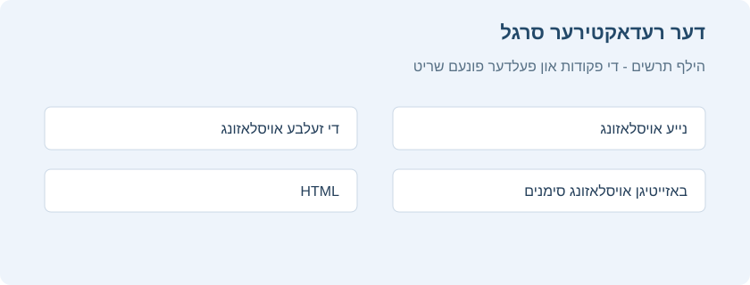
אנקי ערלויבט איינשטעלן פעלדער וואס בלייבן אנגעפילט, גלייך פונעם רעדאקטירער. דריקט דעם שטיפט אייקאן רעכטס פונעם פעלד, און דער אינהאלט וועט בלייבן אויך פאר דער קומענדיגער רשומה נאכן צולייגן די יעצטיגע. דאס העלפט ווען מען שרייבט דעם זעלבן אינהאלט אין עטליכע רשומות, ווי דער זעלבער מקור פאר א פאר פראגעס אויפן זעלבן דף אדער סימן.

נעבן דעם שטיפט איז אויך א קליינער נומער קנעפל מיט # און א נומער. א דרוק אויפן קנעפל צינדט אן נאכאנאנדע נומערן אינעם פעלד: דער יעצטיגער נומער גייט אריין צום אנהייב פונעם פעלד, און נאכן צולייגן די רשומה גייט דער ציילער ווייטער פאר דער קומענדיגער פראגע. א דרוק אויפן נומער אליין ערלויבט צו טוישן פון וועלכן נומער מען גייט ווייטער. דאס העלפט ביים שרייבן א סעריע פראגעס פונעם זעלבן מקור, ווען יעדע פראגע דארף האבן א נאכאנאנדן נומער.
רוב קנעפלעך האבן קיצורים. האלט דעם מויז איבער א קנעפל צו זען זיין קיצור.
נאך רעדאקטירער כלים
דער רעדאקטירער האט כלים צו מאכן דאס צוגרייטן פראגעס מסודרדיגער און שנעלער. רוב זענען אינעם סרגל איבערן אקטיוון פעלד. טייל זענען אויך צוטריטלעך דורכן רעכטן מויז מעניו אדער מיט קיצורים וואס מען זעט ביים האלטן דעם מויז איבערן קנעפל.
צו צולייגן א טאבעלע, דריקט אינעם געוואונטשענעם פעלד און דערנאך צולייגן א טאבעלע אינעם סרגל. קלייבט אינעם פענסטער די צאל שורות און שפאלטן, צי צו צולייגן א קעפל שורה, און די אויסריכטונג. נאכן באשטעטיגן גייט די טאבעלע אריין אינעם פעלד. האלט דערנאך דעם מויז איבער א צעל צו צולייגן שורות און שפאלטן, אויסמעקן חלקים אדער קאלירן געוויסע צעלן. דאס פאסט באזונדער פאר פארגלייכונגען, מקורות, ליסטעס און פראגעס מיט עטליכע דעות.
די ברייטערע אויסשטעל כלים געבן מער קאנטראל אויפן טעקסט אויסזען. אויסער די געווענליכע דיק קנעפלעך, קען מען אויסקלייבן א שריפט פון די לעצטע אדער נאך שריפטן, באשטימען א פאראויס געגעבענע גרייס אדער אליין טייפן א גרייס, נוצן ריין אויס צו אוועקנעמען דעם אויסשטעל, און אויסשטעל בערשטל צו קאפירן דעם אויסזען פון איין שטיקל צום אנדערן. לייג אריין ריין לייגט אריין טעקסט אן אומגעוואונטשענע אויסשטעלן. דער רמז קנעפל מאכט פונעם אויסגעקליבענעם שטיקל א רמז וואס מען קען עפענען ביים חזרן.
אויב איר נוצט כסדר די זעלבע סטילן, עפנט דעם צאהן ראד פון די אויסשטעל כלים און שטעלט איין די שנעלע אויסשטעל קנעפלעך. פאר יעדן פון די פינף קען מען באשטימען שריפט, גרייס, טעקסט קאליר, דיק, שיף, אונטערשטרייכן, אויבערשריפט אדער אונטערשריפט און הינטערגרונט קאליר. דערנאך לייגט איין דרוק ארויף דעם גאנצן סטיל אויף דעם אויסגעקליבענעם טעקסט.

די קיצורים פאר די שנעלע קנעפלעך שטעלט מען איין דורך איינשטעלן קיצור קנעפלעך אינעם הויפט מעניו, אינעם רעדאקטירער טאב, אונטער שנעלער סטיל 1 ביז שנעלער סטיל 5.
ווען א פעלד איז באזונדער לאנג, מיט אסאך מקורות, א ברייטער טאבעלע אדער עטליכע שטיקלעך וואס מען דארף רואיג אויסשטעלן, נוצט דעם פארגעשריטענעם רעדאקטירער. קלייבט דעם פעלד און דריקט דעם פארגעשריטענעם רעדאקטירער קנעפל אדער די פאסיגע סרגל פעולה. מען קען ארבעטן אין א גרעסערן, באקוועמען פענסטער, און דערנאך אפזיכערן און צוריקברענגען דעם אינהאלט צום אריגינעלן פעלד.
אויטאמאטיש אפזיכערן היט פון פארלירן רעדאקטירונגען. ווען א צולייג אדער רעדאקטירער פענסטער איז אפן, ווערן די טוישן אפגעזיכערט אין א גיבוי אין א פעסטן מרווח. צו טוישן דעם מרווח, עפנט דעם רעדאקטירער צאהן ראד און קלייבט די אויטאמאטישע אפזיכער איינשטעלונגען. אויב אנקי פארמאכט זיך פארן אפזיכערן, וועט ביים קומענדיגן עפענען קומען א מעלדונג וועגן נישט אפגעזיכערטע רעדאקטירער פענסטער. קלייבט צוריקברענגען צו צוריקשטעלן דעם טעקסט אין די פאסיגע פעלדער.
צו פארבינדן א PDF מיט א פראגע, דריקט אינעם פעלד און דערנאך PDF אינעם סרגל, אדער Ctrl+Shift+P. קלייבט א PDF טעקע און שרייבט דעם בלאט נומער. ביים חזרן קומט אויפן קארטל א קנעפל מיטן טעקע נאמען און בלאט; א דרוק עפנט דעם PDF פונקט אויפן פאסיגן פלאץ. דאס העלפט צו צושטעלן א לאנגן מקור, א גמרא בלאט, א סיכום אדער מבחן בלעטער, אן איבערפילן די פראגע אליין.
פאר פראגעס וואס דער לערנער דארף אריינטייפן די ענטפער, נוצט דעם פאסיגן סארט רשומה. ביים חזרן קומט א טייפ קעסטל, און נאכן ווייזן די ענטפער קען מען פארגלייכן דעם אריינגעטייפטן טעקסט מיט דער ריכטיגער ענטפער. דערצו קען מען אין יעדן געווענליכן סארט רשומה עפענען א פרייען שרייב קעסטל ביים חזרן, דורכן קנעפל אינעם סרגל איבער ווייז די ענטפער. דאס איז צו שרייבן אן ענטפער פאר זיך פארן עפענען די ריכטיגע ענטפער, און פארלאנגט נישט צו טוישן דעם סארט רשומה.
ביי העברעאישן טעקסט מיט ניקוד אדער טעמי המקרא, נוצט דעם ניקוד מעניו צו לייגן סימנים ביים סמן. דריקט אינעם פעלד, עפנט דעם ניקוד אדער רעכטן מויז מעניו, און קלייבט דעם סימן. נארמאליזירן איז פאר טעקסט וואס זעט אויס גלייך, אבער איז געשריבן מיט אנדערע צוזאמשטעלונגען פון צייכנס. צום ביישפיל, א העברעאישער אות מיט ניקוד און טעם, קאפירט פון איין מקור, קען זיין אפגעזיכערט אין אן אנדערן צייכן סדר ווי דער זעלבער ווארט אליין אריינגעטייפט. דאס קען האבן אן השפעה אויף זוכן, פארגלייכן ענטפערס אדער אויסרייניגן דעם אויסשטעל. נארמאליזירן שטעלט די צייכנס אין א גלייכמעסיגן פארמאט אן טוישן די זעבארע ווערטער. אין א געווענליכן מצב דארף מען דאס נישט נוצן כסדר ביים רעדאקטירן.
אין אויסלאזונג קארטלעך איז אויך דא א פעולה צו אוועקנעמען די באהאלטונג סימנים פון עקזיסטירנדעם טעקסט, אן אויסמעקן דעם אינהאלט אליין. קלייבט דעם טעקסט אדער שטעלט דעם סמן אין א פעלד מיט באהאלטונגען, און דריקט דעם באהאלטונג אוועקנעם קנעפל. די ווערטער בלייבן, נאר די באהאלטונג ווערט אוועקגענומען. דאס העלפט צו טוישן אן אויסלאזונג פראגע צו א געווענליכע פראגע, אדער אויסרייניגן טעקסט קאפירט פון אן אנדערן מקור.
פעלד ניוויגאציע קיצורים ערלויבן שנעל צו גיין צום קומענדיגן אדער א געוויסן פעלד אן דעם מויז. ביים רעדאקטירן, Ctrl מיטן פעלד נומער פירט דעם סמן צום פאסיגן פעלד: Ctrl+1 צום ערשטן, און Ctrl+2 צום צווייטן. נאך קיצורים זעט מען ביים האלטן דעם מויז איבער קנעפלעך. מען קען זיי טוישן דורך איינשטעלן קיצור קנעפלעך אינעם הויפט מעניו.
ביים אריינלייגן טעקסט היט אנקי רוב אויסשטעל אלס ברירת מחדל. אויב איר האלט Shift ביים אריינלייגן, נעמט אנקי אוועק רוב אויסשטעל. אין די איינשטעלונגען קען מען טוישן “אריינלייגן אן shift נעמט אוועק דעם אויסשטעל”, כדי צו טוישן די ברירת מחדל אויפפירונג.
פיל אויס דאס פעלנדיגע
פיל אויס דאס פעלנדיגע איז א חזרה שיטה וואס באהאלט איין אדער מער ווערטער אינעם זאץ. צום ביישפיל, איר האט דעם זאץ:
שנים אוחזין בטלית.
און איר באהאלט דעם ווארט “טלית”. דער זאץ ווערט:
שנים אוחזין ב[...].
אזעלכע אויסגעלאזטע שטיקלעך ווערן אמאל גערופן “באהאלטונגען”.
אויספירליך: פארוואס אויסלאזונגען העלפן אזוי שטארק
אויסלאזונגען זענען א שנעלער וועג צו מאכן פון א געווענליכן זאץ א געצילטע פראגע. אנשטאט שאפן א פראגע און ענטפער פון פריש, באהאלט מען א ווארט, אויסדרוק, נומער אדער חלק פון א בילד, און דער לערנער דארף אויספילן פונקט דעם פעלנדיגן פרט. די שיטה העלפט באזונדער פאר אנהייבער: זי מאכט גרינגער צו היטן דעם “מינימום אינפארמאציע” כלל, וואו יעדע חזרה ברענגט ארויס איין קליינעם פרט אין א קלארן צוזאמענהאנג.
די שיטה העלפט אויך פאר ערפארענע באניצער, ווייל זי טיילט א לאנגן חומר אין א סעריע קורצע פראגעס אן פארלירן דעם אריגינעלן צוזאמענהאנג. מען קען מאכן עטליכע באהאלטונגען פונעם זעלבן זאץ, צולייגן א קורצן רמז נאך צוויי דאטס, אדער מאכן איינס איבערן אנדערן באהאלטונגען אין ליסטעס און סעריעס, צו פארשטארקן קליינע חלקים אנשטאט אויסזאגן אלעס אויף איינמאל. אבער מען זאל נישט באהאלטן צו פיל אין איין קארטל. פאר עטליכע פארשידענע פרטים איז בעסער צו שאפן באזונדערע קארטלעך.
(לויט ד״ר פיוטר וואזניאק, כלל 5 אין “Effective learning: Twenty rules of formulating knowledge”)
אנקי האט א באזונדערן סארט רשומה פאר אויסלאזונגען, כדי צו פארגרינגערן דאס שאפן באהאלטונגען. קלייבט דעם סארט ‘08 פילט אויס דאס אויסגעלאזטע’ און שרייבט טעקסט אינעם פעלד “טקסט”. קלייבט מיטן מויז דעם טעקסט צו באהאלטן, און דריקט […………]. אנקי וועט טוישן דעם טעקסט צו:
שנים אוחזין ב{{c1::טלית}}.
“c1” מיינט אז איר האט געשאפן איין אויסלאזונג אינעם זאץ. מען קען שאפן מער ווי איינס. צום ביישפיל, קלייבט “שניים” און דריקט ווידער […………]. דער טעקסט וועט יעצט זיין:
{{c2::שניים}} אוחזין ב{{c1::טלית}}.
ווען איר לייגט צו די רשומה, שאפט אנקי צוויי קארטלעך. דער ערשטער ווייזט:
שנים אוחזין ב[...].
אינעם פראגע פעלד, מיטן גאנצן זאץ אין דער ענטפער. אינעם צווייטן קומט:
[...] אוחזין בטלית.
מען קען אויך באהאלטן עטליכע שטיקלעך אינעם זעלבן קארטל. אויב איר טוישט אינעם ביישפיל c2 צו c1, ווערט נאר איין קארטל געשאפן, מיט “שניים” און “טלית” ביידע באהאלטן. האלט Alt ביים שאפן א באהאלטונג, און אנקי ניצט אויטאמאטיש דעם זעלבן נומער אנשטאט אים צו העכערן.
באהאלטונגען מוזן נישט זיין גאנצע ווערטער. אויב איר קלייבט “נים” אנשטאט “שנים”, וועט די פראגע זיין “ש[…………] אוחזין בטלית”, וואס גיט א רמז.
מען קען זיך אויך געבן א רמז וואס איז אנדערש פונעם טעקסט. טוישט דעם אריגינעלן זאץ צו:
שנים::מספר אוחזין בטלית
און דריקט […………] נאכן אויסקלייבן “שניים::מספר”. אנקי נעמט דעם טעקסט נאך די צוויי דאטס אלס רמז און טוישט צו:
{{c1::שנים::מספר}} אוחזין בטלית
ביים חזרן זעט דער קארטל אויס אזוי:
[מספר] אוחזין בטלית.
מען קען אויך שאפן באהאלטונגען איינע אינעווייניג אין דער אנדערער. צום ביישפיל, דאס איז גילטיג:
{{c1::שנים {{c2::אוחזין}}}} בטלית
די אינערליכע באהאלטונג איז אינגאנצן אינעם אויסערליכן. טיילווייזע איבערדעקונג ווערט נישט געשטיצט, ווי:
[...] בטלית-> בנים אוחזין
שנים [...] טלית -> אוחזין ב
וואו “אוחזין” קומט פאר אין ביידע אויסלאזונגען.
דער יעצטיגער מאטאר שטיצט נאר א באגרעניצטע צאל באהאלטונגען איינע אינעווייניג אין דער אנדערער. די גרעניץ איז ארום 8, אבער אנקי קען ווערן פאמעליכער ווען מען קומט נאנט דערצו. מען קען נישט פארגרעסערן די גרעניץ. אויב איר נוצט די פונקציע, איז ראטזאם זיך צו האלטן צו נאר עטליכע שטאפלען.
דער אויסלאזונג סארט רשומה וואס קומט מיטן פראגראם האט א צווייטן פעלד פאר נאך אינהאלט, מיטן נאמען ‘הוספות’. ער ווייזט זיך אויף דער ענטפער זייט פון יעדן קארטל. מען קען דארט צולייגן באניץ הערות אדער נאך אינפארמאציע.
דער סארט רשומה האט אויך דעם נאך אינהאלט פעלד, הוספות, אויפן ענטפער זייט. נוצט אים פאר א הילף הערה, א קורצן מקור, א צוגאב רמז אדער נאך א נוסח וואס איר ווילט זען נאר נאכן עפענען דעם קארטל.
באהאלטן א בילד
אנקי שטיצט בילד באהאלטונג קארטלעך אינעם פראגראם אליין. דער סארט “09 פילט אויס דאס אויסגעלאזטע - בילד” איז א באזונדערער אויסלאזונג סארט מיט בילדער אנשטאט טעקסט. ער ערלויבט שאפן קארטלעך וואס באהאלטן חלקים פון א בילד און פרעגן אייך דעם באהאלטענעם אינהאלט.

צולייגן א בילד
צו צולייגן בילד באהאלטונג קארטלעך, עפנט דעם צולייג עקראן, דריקט “סארט” און קלייבט “09 פילט אויס דאס אויסגעלאזטע - בילד” פון די איינגעבויטע סארטן רשומה. דריקט דערנאך “קלייבט אויס א בילד” צו לאדענען א בילד טעקע פונעם קאמפיוטער, אדער “לייג אריין א בילד פונעם קאפיר ברעט” אויב איר האט א קאפירטן בילד אינעם קאפיר ברעט.
צולייגן בילד באהאלטונג קארטלעך
נאכן לאדענען א בילד עפנט זיך דער בילד באהאלטונג רעדאקטירער. דריקט די אייקאנען לינקס צו צולייגן וויפיל שטחים איר ווילט צום בילד. מען קען אויסקלייבן דריי יסודותדיגע פארמען:

- רעכטעק
- עליפסע
- פילעק
פאר יעדע רשומה קען מען אויך אויסקלייבן צווישן צוויי בילד באהאלטונג מצבים:
- באהאלט אלעס, ענטפער איינס: אלע שטחים זענען באהאלטן, און נאר איין שטח ווערט אויפגעדעקט אויף א מאל ביים לערנען.
- באהאלט איינס, ענטפער איינס: נאר איין שטח איז באהאלטן און ווערט אויפגעדעקט ביים לערנען. די אנדערע שטחים בלייבן זעבאר.
דער ברירת מחדל בילד באהאלטונג סארט האט אויך געווענליכע פעלדער: כותרת, א קעפל איבערן בילד אויפן פארנט און הינטערשטן זייט פון יעדן קארטל; תוספת אחורית, נאך אינהאלט אונטערן בילד אויפן הינטערשטן זייט; און הערות, וואס ווערן נישט געוויזן אויף די קארטלעך. צו צוקומען צו די פעלדער אינעם בילד רעדאקטירער, דריקט בייט דעם מאסקע רעדאקטירער . דארט קען מען אויך ווייזן און רעדאקטירן די רשומה צעטלעך.
נאכן פארענדיגן, דריקט “צולייגן” אונטן. אנקי לייגט צו א קארטל פאר יעדע פארעם אדער גרופע פארמען וואס איר האט צוגעלייגט, און מען קען זיי אנהייבן חזרן ווי געווענליך.
רעדאקטירן בילד באהאלטונג רשומות
מען קען רעדאקטירן אייערע בילד באהאלטונג רשומות מיט א דרוק אויף “רעדאקטירן” ביים חזרן, אדער גלייך פונעם דורכבלעטערער. עס זענען דא עטליכע כלים צו נוצן. באזונדער:
- אויסקלייבן: קלייבט אויס איין אדער מער פארמען צו רוקן, טוישן גרייס, אויסמעקן אדער גרופירן.
- פארגרעסערן: מען קען פריי רוקן דעם בילד און פארגרעסערן אדער פארקלענערן מיטן מויז רעדל.
- פארמען — רעכטעק, עליפסע אדער פילעק: לייגט צו נייע פארמען אדער קארטלעך.
- טעקסט: לייגט צו טעקסט שטחים צום בילד. מען קען זיי רוקן, טוישן גרייס אדער אויסמעקן, אבער דער כלי שאפט נישט קיין קארטל.
- מאך צוריק / טו נאכאמאל.
- פארגרעסער / פארקלענער — שטעל צוריק די פארגרעסערונג.
- ווייז דעם אינהאלט הינטער די באהאלטונגען: דער כלי ווייזט צייטווייליג די באהאלטענע שטחים.
- אויסמעקן: מעקט אויס די אויסגעקליבענע פארמען און טעקסט שטחים. דאס אויסמעקן א פארעם מעקט נישט אויטאמאטיש אויס איר קארטל. מען דארף דערנאך נוצן הויפט מעניו > זאמלונג כלים > ליידיגע קארטלעך, ווי ביי געווענליכע אויסלאזונג קארטלעך.
- קאפירן.
- גרופירן די אויסוואל: מאכט א גרופע פארמען, כדי מען זאל זיי קענען רוקן, טוישן גרייס אדער אויסמעקן צוזאמען. צוויי אדער מער באזונדערע פארמען שאפן נאר איין קארטל נאכן גרופירן.
- צעטיילן א גרופע: קלייבט אויס א גרופע און דריקט דעם קנעפל, כדי יעדע פארעם זאל ווידער זיין באזונדער.
- אויסריכטונג: ריכט אויס די פארמען אדער טעקסט שטחים ווי איר ווילט.
ביים חזרן בילד באהאלטונג קארטלעך קומט דער “בייט מאסקעס” קנעפל גלייך אונטערן בילד. אין “באהאלט אלעס, ענטפער איינס” מצב נעמט דער קנעפל צייטווייליג אוועק אלע פארמען פון דער רשומה.
מאטעמאטיק און סימבאלן
מען קען אריינלייגן מאטעמאטישע אויסדרוקן מיט MathJax אין די פעלדער פון א רשומה. דער MathJax קנעפל אינעם רעדאקטירער לייגט צו די פאסיגע סימנים.
א קורצער אויסדרוק אינעם טעקסט:
\(x^2 + y^2 = z^2\)
א באזונדערער אויסדרוק אויף אן אייגענער שורה:
\[x^2 + y^2 = z^2\]
דער LaTeX קנעפל און די [latex]...[/latex] סימנים נוצן אן אויסערליכן LaTeX בוי. דאס פאדערט פאסיגע LaTeX געצייג אויפן קאמפיוטער. פאר געווענליכע אויסדרוקן איז MathJax באקוועמער, ווייל מען דארף נישט אינסטאלירן די אויסערליכע געצייג.
קארטל מוסטערן
פעלד איבערבייטונגען
אויסשטעל און HTML
שאפן קארטלעך
בדיקות און טעותים
איינשטעלונגען
אינהאלט
צו עפענען די איינשטעלונגען, עפנט דעם הויפט מעניו און קלייבט איינשטעלונגען. זיי זענען צעטיילט אין קוויטלעך ווי אויסזען, חזרה, רעדאקטירן, סינכראניזירן און גיבויים. נאכן טוישן אן איינשטעלונג, דרוקט אפזיכערן אדער פארמאכט דעם פענצטער לויט דער אנווייזונג דארט. א טייל איינשטעלונגען ווירקן גלייך, און אנדערע וועלן ערשט אריינגיין ווען איר עפנט דאס קומענדיגע לערנען אדער רעדאקטירן פענצטער.
אויסזען

אלגעמיין
שפראך טוישט די תצוגה שפראך. דער אויסוואל ווירקט נאר אויף געוויסע טיילן פון דער פראגראם. עס קען אויך זיין א פראבלעם מיט שפראכן וואס מען שרייבט פון לינקס צו רעכטס.
ווידיא דרייווער Anki דארף א ווידיא דרייווער צו ווייזן אינהאלט אויפן עקרן. לויט די פארשידענע הארדווער און ווייכווארג צושטאנדן קען דער פאסיגסטער דרייווער זיין אנדערש ביי יעדן קאמפיוטער. א ווייכווארג דרייווער איז געווענליך לאנגזאמער, אבער ארבעט אויף א טייל סיסטעמען וואו די אנדערע אויסוואלן ארבעטן נישט.
באמערקונג: אויב איר נוצט Windows, זעט אויך דעם בלאט.
באנוצער ממשק
טעמע דער טונקעלער (נאכט) מצב מאכט Anki’ס ממשק טונקל און ווייזט קארטלעך מיט ווייסן טעקסט אויף א שווארצן הינטערגרונט. מען קען אויסקלייבן אן אויטאמאטישן איבערגאנג צווישן טאג און נאכט. דאס גייט לויט דער אלגעמיינער אויסזען איינשטעלונג פון דער מערכת הפעלה, דאס הייסט צי דער קאמפיוטער אליין איז אין טאג אדער נאכט מצב.
ממשק גרויסקייט אויב די ממשק טיילן זענען צו קליין, פארגרעסערט די איינשטעלונג ביי איינשטעלונגען > אויסזען. דאס פארגרעסערט אנקי פענצטער, געצייג לייסטן און קנעפלעך, און העלפט אויף קליינע אדער הויך רעזאלוציע עקרנים. אויב נאר דער קארטל אינהאלט איז קליין, איז בעסער צו טוישן דעם אויסשטעל פון די קארטלעך אליין.
צוריקשטעלן פענצטער גרויסקייטן די פעולה שטעלט צוריק אלע פענצטער גרויסקייטן און פלעצער צו דער ברירת מחדל.
ווייזן פארשריט לייסט די איינשטעלונג באשטימט צי דער פארשריט לייסט אונטן אינעם חזרה פענצטער זאל זיך ווייזן. צינדט עס אן אויב איר ווילט זען וויפיל קארטלעך איר זענט שוין דורכגעגאנגען און וויפיל עס זענען נאך איבער אינעם יעצטיגן רונדע. לעשט עס אויס אויב איר ווילט א ריינער לערנען פענצטער.
שטערונגען
די אויסוואלן לאזן אייך אראפנעמען אומנויטיגע טיילן פונעם עקרן ביים חזרן. מען קען:
- באהאלטן די אויבערשטע און אונטערשטע לייסטן בשעת חזרות.
- פארמינערן באוועגונג, צו אויסלעשן געוויסע איבערגאנגען און אנימאציעס.
- אנצינדן דעם “פשוטן מצב”, וואס מאכט דעם ממשק קלענער און פשוטער.
חזרה

חזרה פלאנירער
דער קומענדיגער טאג הייבט זיך אן ביי באשטימט ווען Anki זאל אנהייבן ווייזן די קארטלעך פונעם קומענדיגן טאג. די ברירת מחדל, 4:00 פארטאגס, מאכט אז ביים לערנען ארום חצות זאל מען נישט זען קארטלעך פון צוויי טעג אין איין לערנען רונדע. אויב איר בלייבט אויף זייער שפעט אדער שטייט אויף זייער פרי, קען מען דאס צופאסן צו א שעה וואס איר שלאפט געווענליך. יעדער קארטל וואס גייט איבער דער טאג גרעניץ ווערט געוויזן ביים אנהייב פונעם טאג פאר וועלכן עס איז באשטימט, פונקט ווי חזרה קארטלעך.
גרענעץ פאר לערנען פאר דער צייט באשטימט וואס Anki זאל טון ווען אינעם יעצטיגן פעקל בלייבן נאר קארטלעך ביים לערנען. די ברירת מחדל פון 20 מינוט הייסט Anki ווייזן קארטלעך פריער, אויב זייער ווארט צייט איז ווייניגער פון 20 מינוט און עס איז נישט דא אנדערע ארבעט. אויב מען שטעלט 0, ווארט Anki שטענדיג די גאנצע צייט און ווייזט דעם סיכום פענצטער ווי דער פעקל וואלט געווען פארטיג, ביז די איבעריגע קארטלעך ווערן גרייט.
צייט גרענעץ פאר א לערן רונדע צייט רונדעס העלפן זיך קאנצענטרירן דורך צעטיילן א לאנגע פעולה (ווי א 30 מינוט לערנען רונדע) אין קורצערע טיילן. אויב מען שטעלט די צייט גרענעץ צו א צאל מינוט העכער פון נול, וועט Anki פון צייט צו צייט ווייזן וויפיל קארטלעך איר האט מצליח געווען צו לערנען אין דער באשטימטער צייט.
חזרה
ווייזן אפשפיל קנעפלעך אויף קארטלעך מיט קול באשטימט צי מען זאל ווייזן א קנעפל צום אפשפילן (נאכאמאל) אויפן לערנען פענצטער ביי קארטלעך מיט קול.
אפשטעלן דעם איצטיגן קול ביים ענטפערן באשטימט צי מען זאל אפשטעלן א קול טעקע וואס שפילט יעצט, ווען מען ענטפערט אויף א קארטל.
ווייזן וויפיל קארטלעך זענען נאך איבער לעשט אויס דעם אויסוואל צו באהאלטן די צאל קארטלעך אונטן אויפן עקרן.
ווייזן דעם קומענדיגן חזרה צייט איבער די ענטפער קנעפלעך ווייזט איבער די ענטפער קנעפלעך דעם דאטום ווען דאס קארטל וועט נאכאמאל קומען. דאס העלפט אפצושאצן ווי ווייט אין דער צוקונפט די קארטלעך ווערן אפגעשטופט.
רווח (אדער Enter) ענטפערט אויך דעם קארטל באשטימט צי דרוקן רווח אדער Enter זאל ענטפערן אויף קארטלעך.
ווייזן נאר צוויי ענטפער קנעפלעך באשטימט צי מען זאל ביים אפשאצן אן ענטפער אין א בחינה ווייזן נאר די צוויי קנעפלעך איך ווייס / איך ווייס נישט, אדער אלע פיר געווענליכע קנעפלעך.
דאס קען העלפן ביים חזרן, כדי נישט געפרואווט צו ווערן צו דרוקן “שווער” ווען מען קען נישט דעם ענטפער.
ווייזן א ווארענונג אויב מען הייבט אן די חזרה פאר היינט און מער פון 50 פראגעס זענען פארשפעטיגט באשטימט צי עס זאל קומען א דערמאנונג איבער פארשפעטיגטע פראגעס ווען איר הייבט אן חזרן די פראגעס פאר היינט דורך דרוקן אויפן צאל חזרות פאר היינט אינעם הויפט פענצטער. צינדט דאס אן אויב איר ווילט א ווארענונג ביים אנהייבן די טעגליכע חזרה בשעת אסאך פראגעס זענען פארשפעטיגט. לעשט עס אויס אויב די מעלדונג שטערט אייער לערנען סדר.
רעדאקטירן
רעדאקטירן
אריינקלעבן קלעמברעט בילדער אלס PNG לויט דער ברירת מחדל קלעבט Anki אריין בילדער פונעם קאפיר ברעט אלס JPG טעקעס, כדי צו שפארן פלאץ אויפן דרייוו. מיט דעם אויסוואל קען מען זיי אנשטאט דעם אריינקלעבן אלס PNG בילדער. PNG בילדער שטיצן דורכזיכטיגע הינטערגרונטן און האלטן מער גענויקייט, אבער זייערע טעקעס זענען געווענליך פיל גרעסער.
אריינקלעבן אן Shift נעמט אראפ דעם אויסשטעל לויט דער ברירת מחדל בלייבן אויסשטעלן ווי פעטער דרוק און קאלירן ביים אריינקלעבן, חוץ ווען מען האלט Shift. דער אויסוואל דרייט דאס איבער: געווענליך אריינקלעבן לייגט אריין ריינעם טעקסט, און אריינקלעבן מיט Shift האלט דעם אויסשטעל. צינדט דאס אן אויב איר קאפירט אסאך טעקסט פון וועבזייטלעך אדער דאקומענטן און ווילט פארמיידן אומנויטיגע קאלירן, שריפטן און רווחים.
ברירת מחדל פעקל באשטימט דעם צוזאמענהאנג צווישן סארטן רשומות און פעקלעך. די ברירת מחדל, “ביים צולייגן, נוצן דעם איצטיגן פעקל אלס ברירת מחדל”, מיינט אז Anki געדענקט דעם לעצטן גענוצטן סארט רשומה פאר יעדן פעקל און קלייבט אים נאכאמאל ווען מען קלייבט יענעם פעקל. אויך, ווען מען קלייבט “צולייגן” פון א פלאץ וואס איז נישט פארבונדן מיט א באזונדערן פעקל, ווערט דער איצטיגער פעקל אויסגעקליבן. דער צווייטער אויסוואל, “טוישן פעקל לויטן סארט רשומה”, געדענקט דעם לעצטן גענוצטן פעקל פאר יעדן סארט רשומה, און עפנט דעם צולייגן פענצטער מיטן לעצטן גענוצטן סארט רשומה ווען מען קלייבט “צולייגן”. דאס קען זיין באקוועמער אויב איר נוצט שטענדיג איין סארט רשומה פאר יעדן פעקל.
דער לעצטער גענוצטער פעקל און סארט רשומה ווערן דערהיינטיגט ווען מען לייגט צו א קארטל. אויב איר טוישט דעם פעקל און פארמאכט דעם צולייגן פענצטער אן צוצולייגן א קארטל, ווערט די ענדערונג נישט אפגעזיכערט.
אויב נייע פראגעס גייען כסדר אין דעם נישט ריכטיגן פעקל, עפנט איינשטעלונגען > רעדאקטירן און טוישט ברירת מחדל פעקל. ווער עס לייגט צו לויט פעקלעך זאל געווענליך לאזן דעם איצטיגן פעקל אלס ברירת מחדל. ווער עס לייגט צו לויט קבוע’ע סארטן פראגעס, למשל איין סארט רשומה פאר ש“ס און אן אנדערן פאר הלכה, קען מער באקוועם נוצן טוישן פעקל לויטן סארט רשומה.
דורכבלעטערן
ברירת מחדל זוך טעקסט לאזט אייך צופאסן דעם אנהייב זוכן טעקסט אין דורכבלעטערן (למשל, אנהייבן מיט “deck:current”).
איגנארירן ניקוד ביים זוכן (לאנגזאמער) ווען דער אויסוואל איז אנגעצונדן, וועלן פשוטע טעקסט זוכונגען אויטאמאטיש אויסלאזן ניקוד. דאס קען העלפן געפינען ווערטער מיט ניקוד אדער טעמי המקרא, אן אריינצושרייבן די ניקוד אינעם זוכן פעלד, אבער עס איז לאנגזאמער.
צינדט דאס אן אויב איר זוכט אסאך מנוקד’דיגן עברית טעקסט און ווילט געפינען דעם ווארט אן צו שרייבן די ניקוד. אויב די זאמלונג איז גרויס און זוכן ווערט צו לאנגזאם, לעשט עס אויס און נוצט מער געצילטע זוכונגען לויט פעקל, צעטל אדער סארט רשומה.
סינכראניזירן
דער קוויטל אנטהאלט אויסוואלן פארן סינכראניזירן מיט AnkiWeb.
סינכראניזאציע
סינכראניזירן אויך קול און בילדער ווען דער אויסוואל איז אנגעצונדן, ווערט די מידיא אויך סינכראניזירט מיט AnkiWeb.
אויטאמאטיש סינכראניזירן ביים עפענען/פארמאכן א פראפיל לעשט אויס דעם אויסוואל אויב איר ווילט נישט אויטאמאטיש סינכראניזירן מיט AnkiWeb ביים עפענען אדער פארמאכן א פראפיל.
סינכראניזירן מעדיע כסדר
ביים קומענדיגן סינכראניזירן, צווינגען ענדערונגען אין איין ריכטונג ווען דער אויסוואל איז אנגעצונדן, וועט מען ביים קומענדיגן סינכראניזירן פרעגן צי איר ווילט אויפלאדן אייער זאמלונג צו AnkiWeb אדער זי אראפלאדן פון דארט. דאס העלפט אויב איר האט געטוישט עפעס בטעות און ווילט עס איבערשרייבן מיט אן עלטערער ווערסיע פון AnkiWeb.
נעצווערק ווארטן גרענעץ
באשטימט וויפיל צייט אנקי זאל ווארטן אויף אן ענטפער פונעם סערווער. אויב אין דער צייט ווערט נישט געשאפן א פארבינדונג מיטן סערווער, קומט א טעות מעלדונג.
AnkiWeb קאנטע
ווען איר זענט אריינגעלאגט, וועט דרוקן “ארויסלאגן” אייך ארויסלאגן פון דער קאנטע.
אייגענער סינכראניזיר סערווער
דאס איז אן אויסוואל אויפצושטעלן אן אייגענעם סערווער פאר אנקי סינכראניזאציע וואס פארלאזט זיך נישט אויף AnkiWeb. עס איז געמאכט נאר פאר פארגעשריטענע באניצער. פאר אינפארמאציע איבער אן אייגענעם סינכראניזיר סערווער, זעט דעם ענגלישן מדריך אויפן אנקי וועבזייטל.
גיבויים
זעט דעם טייל פונעם מדריך.
פעקל אפציעס
אינהאלט
- פאראיינשטעלונג
- אונטערפעקלעך
- טעגליכע גרענעצן
- נייע קארטלעך א טאג
- מערסטע חזרות א טאג
- טעגליכע גרענעצן לויט פעקל
- נייע קארטלעך איגנארירן די חזרה גרענעץ
- גרענעצן הייבן זיך אן פון אויבן
- נייע קארטלעך
- לערן טריט
- טאג גרענעצן
- אפשטאנד ביים ענדיגן לערנען
- אפשטאנד פאר גרינג
- סדר פון אריינלייגן
- פארגעסונגען
- איבערלערן טריט
- קלענסטער אפשטאנד
- עלוקות
- סדר פון ווייזן
- סדר פון נעמען נייע קארטלעך
- סארטיר סדר פאר נייע קארטלעך
- סדר פון נייע קארטלעך/חזרות
- סדר פון לערנען פון פריערדיגע טעג/חזרות
- סארטיר סדר פאר חזרות
- באזייטיגן ביז מארגן
- קול
- זייגערס
- אינערליכער זייגער
- זייגער אויפן עקרן
- אויטאמאטיש ווייטערגיין
- גרינגע טעג
- FSRS
- א קורצער מדריך
- געוואונטשענע געדענק ראטע
- FSRS פאראמעטערס
- ניי באשטימען חזרה צייטן ביים טוישן
- דער סימולאטאר
- לערנען און איבערלערנען טריט
- פארגעשריטן
- גרעסטער אפשטאנד
- פריערדיגע געדענק ראטע
- איגנארירן חזרות פאר
- אנהייב גרינגקייט
- גרינג צוגאב
- אפשטאנד פאקטאר
- שווער אפשטאנד
- נייער אפשטאנד
- אייגענע חזרה פלאנירונג
פעקל אפציעס באשטימען בעיקר ווי אנקי פלאנירט די קארטלעך. עס איז כדאי צו נוצן די ברירות מחדל פאר עטליכע וואכן, כדי זיך באקענען מיט אנקי איידער מען הייבט אן צופאסן די אויסוואלן. מאכט זיכער אז איר פארשטייט די אויסוואלן פארן זיי טוישן, ווייל טעותן קענען פארמינערן אנקי’ס ווירקזאמקייט.
אויפן קאמפיוטער, טוט איינס פון די פאלגנדע צו עפענען די פעקל אפציעס:
- דרוקט מיטן רעכטן מייז קנעפל אויפן געוואונטשענעם פעקל אינעם הויפט פענצטער.
- דרוקט דערנאך אפציעס אונטן אינעם פענצטער.
- אדער דרוקט נאך > אפציעס בשעת א בחינה.
פאראיינשטעלונג
אנקי לאזט טיילן אויסוואלן צווישן פארשידענע פעקלעך, כדי גרינג צו דערהיינטיגן אסאך פעקלעך אויף איינמאל. דערפאר ווערן די אויסוואלן געגרופירט אין פאראיינשטעלונגען. אויב איר טוישט אן אויסוואל אין א פאראיינשטעלונג, גייט די ענדערונג אן אויף אלע פעקלעך וואס נוצן זי. אלע נייע פעקלעך נוצן “ברירת מחדל”.
צו טוישן די אויסוואלן אין איין פעקל אן צו טוישן אנדערע, דרוקט דעם פייל סימבאל אויבן רעכטס אינעם פעקל אפציעס פענצטער. מען קען טון די פאלגנדע:
- אפזיכערן: זיכערט אפ אלע ענדערונגען אין די פעקל אפציעס.
- צולייגן פאראיינשטעלונג: לייגט צו א נייע פאראיינשטעלונג פאר דעם פעקל מיט די ברירת מחדל אויסוואלן.
- קאפירן פאראיינשטעלונג: קאפירט די יעצטיגע פאראיינשטעלונג, נוצליך ווען מען וויל טוישן א טייל אויסוואלן און לאזן דעם רעשט ווי פריער.
- טוישן נאמען פון פאראיינשטעלונג: טוישט דעם נאמען פון דער יעצטיגער פאראיינשטעלונג.
- אראפנעמען פאראיינשטעלונג: מעקט אויס די יעצטיגע פאראיינשטעלונג.
- אפזיכערן פאר אלע אונטערפעקלעך: ווי אפזיכערן, און טיילט אויך צו די אויסגעקליבענע פאראיינשטעלונג צו אלע אונטערפעקלעך פונעם יעצטיגן פעקל.
פעקל אפציעס גייען נישט אן למפרע. למשל, אויב איר טוישט דעם אויסוואל וואס באשטימט דעם אפשטאנד נאך א פארגעסענעם קארטל, וועלן קארטלעך וואס איר האט פארגעסן פאר דער ענדערונג נאך האלטן דעם אלטן אפשטאנד.
אונטערפעקלעך
אויב אייער פעקל האט אונטערפעקלעך און איר ווילט אז איינער אדער מער זאלן האבן אנדערע איינשטעלונגען פונעם הויפט פעקל, קען מען זיי צוטיילן צו אנדערע פאראיינשטעלונגען. ביים ווייזן א קארטל קוקט אנקי צו וועלכן אונטערפעקל עס געהערט און נוצט יענעם פעקל’ס אויסוואלן. עס זענען דא צוויי אויסנאמען:
- די גרענעצן פון נייע קארטלעך א טאג און מערסטע חזרות א טאג ביי אן אונטערפעקל באשטימען וויפיל קארטלעך מען קען נעמען פון אים. אבער דער גאנצער צאל קארטלעך אינעם לערנען רונדע ווערט באשטימט דורך די גרענעצן פונעם פעקל וואס איר האט אויסגעקליבן צו לערנען.
- די סדר פון ווייזן אויסוואלן קומען פונעם פעקל וואס איר האט אויסגעקליבן צו לערנען, נישט פונעם פעקל פונעם יעצטיגן קארטל.
למשל, שטעלט זיך פאר אז איר האט די פאלגנדע זאמלונג:
- פעקל א' (פאראיינשטעלונג 1)
- פעקל א'::אונטערפעקל ב' (פאראיינשטעלונג 2)
פאראיינשטעלונג 1 און 2 זענען די זעלבע, מיט צוויי חילוקים:
- פאראיינשטעלונג 1:
- לערן טריט:
1m 10m - סדר פון נייע קארטלעך/חזרות:
אויסמישן מיט חזרות
- לערן טריט:
- פאראיינשטעלונג 2:
- לערן טריט:
20m 2h - סדר פון נייע קארטלעך/חזרות:
ווייזן נאך די חזרות
- לערן טריט:
אויב איר קלייבט צו לערנען אונטערפעקל ב’:
- די לערנען טריט פאר אלע נייע קארטלעך זענען
20m 2h(פאראיינשטעלונג 2 גייט אן). - אלע נייע קארטלעך קומען נאך די חזרות (פאראיינשטעלונג 2 גייט אן).
אויב איר קלייבט צו לערנען פעקל א’:
- די לערנען טריט פאר נייע קארטלעך אין פעקל א’ זענען
1m 10m(פאראיינשטעלונג 1 גייט אן). - די לערנען טריט פאר נייע קארטלעך אין אונטערפעקל ב’ זענען
20m 2h(פאראיינשטעלונג 2 גייט אן). - אלע נייע קארטלעך ווערן געמישט מיט חזרות (פאראיינשטעלונג 1 גייט אן).
באמערקונג: צוליב טעכנישע גרענעצן שרייבט מען די לערנען טריט מיט ענגלישע אותיות. זייער באדייט איז:
- s = סעקונדעס, למשל 1s פאר איין סעקונדע.
- m = מינוטן.
- h = שעה’ן.
- d = טעג.
טעגליכע גרענעצן
נייע קארטלעך א טאג
דער אויסוואל באשטימט וויפיל נייע קארטלעך מען קען ווייזן אין יעדן טאג וואס איר עפנט די פראגראם. אויב איר לערנט ווייניגער פונעם גרענעץ אדער פארפעלט א טאג, הייבט דער ציילער צומארגנס אן פון אנהייב. איר וועט נישט באקומען מער קארטלעך ווי אייער גרענעץ ערלויבט.
ביים לערנען א פעקל מיט אונטערפעקלעך, באשטימען די גרענעצן פון יעדן אונטערפעקל דעם מאקסימום וואס מען נעמט פון יענעם פעקל. די גרענעצן פונעם אויסגעקליבענעם פעקל באשטימען דעם גאנצן צאל קארטלעך וואס מען ווייזט.
לערנען נייע קארטלעך פארגרעסערט צייטווייליג די טעגליכע חזרות, ווייל לעצטנס געלערנטן חומר דארף מען חזרן עטליכע מאל פאר די אפשטאנדן קענען פיל וואקסן. אויב איר לערנט קבוע 20 נייע קארטלעך א טאג, קענט איר ערווארטן בערך 200 חזרה קארטלעך א טאג. מען קען פארמינערן די נויטיגע חזרות דורך ווייזן ווייניגער נייע קארטלעך טעגליך ביז דער חזרה עול ווערט קלענער. נישט ווייניג אנקי באניצער האבן מיט התלהבות געלערנט הונדערטער נייע קארטלעך אין די ערשטע טעג, און דערנאך זיך געפונען איבערגעלאדן מיט חזרות.
מערסטע חזרות א טאג
לאזט באשטימען א מאקסימום צאל חזרה קארטלעך פאר א טאג. ווען מען דערגרייכט די גרענעץ, ווייזט אנקי נישט נאך חזרה קארטלעך אין יענעם טאג, אפילו נאך ווארטן. ביים קבוע’ן לערנען קען דאס אויסגלייכן צייטווייליגע העכערונגען אינעם צאל גרייטע קארטלעך און פארמיידן א שרעק ביים צוריקקומען נאך א וואך הפסקה. ווען דער אויסוואל באהאלט חזרות, קומט א מעלדונג אינעם סיכום פענצטער וואס לייגט פאר צו פארגרעסערן די גרענעץ אויב איר האט צייט.
צו שנעל אראפנעמען כמעט די גאנצע טעגליכע גרענעץ, עפנט דעם הויפט מעניו און קלייבט מאגר געצייג > אראפנעמען די טעגליכע חזרה גרענעץ. דאס קלייבט נישט אויס קיין באזונדערן פעקל און טוישט נישט זיין נאמען. עס שטעלט פשוט די נייע קארטלעך און חזרה גרענעצן אין די פאראיינשטעלונגען צו א זייער הויכן ווערט, אזוי אז די גרענעץ וועט אייך כמעט נישט אפשטעלן.
ביים לערנען א פעקל מיט אונטערפעקלעך, ארבעט די חזרה גרענעץ ענליך צו דער נייע קארטלעך גרענעץ.
אנקי רעכנט אויך אלע לערנען קארטלעך וואס האבן אריבער א טאג גרעניץ אינעם חזרה צאל. די קארטלעך זענען דערפאר אויך אונטער דער חזרה גרענעץ.
טעגליכע גרענעצן לויט פעקל
מען קען נוצן די זעלבע פאראיינשטעלונג פאר פארשידענע פעקלעך, מיט אן אייגענער גרענעץ פאר יעדן פעקל. אזוי דארף מען נישט מאכן קאפיעס פון פאראיינשטעלונגען נאר דערפאר, און מען קען גרינגער איינשטעלן באזונדערע גרענעצן פאר אונטערפעקלעך.
אנקי גיט דריי מעגליכקייטן פאר טעגליכע גרענעצן:
- פאראיינשטעלונג: גייט אן אויף אלע פעקלעך וואס נוצן די פאראיינשטעלונג.
- דער פעקל: נאר פאר א געוויסן פעקל.
- נאר היינט: נאר פאר א געוויסן פעקל און צייטווייליג.
נייע קארטלעך איגנארירן די חזרה גרענעץ
לויט דער ברירת מחדל גייט די חזרה גרענעץ אויך אן אויף נייע קארטלעך. מען ווייזט נישט נייע קארטלעך ווען די חזרה גרענעץ איז דערגרייכט. אויב דער אויסוואל איז אנגעצונדן, קומען נייע קארטלעך אפגעזען פון דער חזרה גרענעץ.
אויב איר האט א הויפן פארשפעטיגטע חזרה קארטלעך, איז כדאי אפצושטעלן נייע קארטלעך ביז איר האט נאכגעהאלטן דעם הויפן. ווייטער צולייגן נייע קארטלעך בשעת איר זענט שוין הינטערשטעליג קען פארגרעסערן דעם הויפן.
גרענעצן הייבן זיך אן פון אויבן
לויט דער ברירת מחדל גייען די טעגליכע גרענעצן פון א העכערן פעקל נישט אן ווען איר קלייבט אן אונטערפעקל. א הויפט פעקל קען האבן א גרענעץ פון 10 נייע קארטלעך א טאג, בשעת זיינע אונטערפעקלעך האבן א גרענעץ פון 20. דער הויפט פעקל’ס גרענעץ ווירקט נישט אויפן צאל נייע קארטלעך וואס איר קענט לערנען פון זיין אונטערפעקל.
ווען דער אויסוואל איז אנגעצונדן, גייען די העכערע פעקלעך גרענעצן אויך אן ביים אויסקלייבן אן אונטערפעקל. אינעם פריערדיגן ביישפיל קענט איר נאר לערנען 10 נייע קארטלעך פון די אונטערפעקלעך אנשטאט 20.
דאס קען העלפן אויב איר ווילט לערנען באזונדערע אונטערפעקלעך און דערביי האלטן אן אלגעמיינע גרענעץ פאר די קארטלעך פון אלע אונטערפעקלעך צוזאמען.
נייע קארטלעך
די אויסוואלן דא ווירקן נאר אויף נייע קארטלעך און קארטלעך ביים לערנען. נאכדעם וואס א קארטל איז פארטיג מיט אלע לערנען טריט, גייען די אויסוואלן אין דעם טייל שוין נישט אן אויף אים.
לערן טריט
די איינשטעלונג באשטימט דעם צאל לערנען חזרות און די אפשטאנדן צווישן זיי. שרייבט איין אדער מער אפשטאנדן, צעטיילט מיט רווחים. יעדעס דרוקן אויף גוט ברענגט דאס קארטל צום קומענדיגן טריט. יעדעס דרוקן אויף נאכאמאל ברענגט עס צוריק צום ערשטן טריט.
למשל, שטעלט זיך פאר אז די לערנען טריט זענען 1m 10m 1d.
- מיט נאכאמאל גייט דאס קארטל צום ערשטן טריט און קומט ווידער נאך איין מינוט.
- מיט גוט אויף א נייעם קארטל אדער נאך דעם איין מינוט טריט, גייט עס צום קומענדיגן טריט און קומט ווידער אין 10 מינוט.
- מיט גוט נאך דעם 10 מינוט טריט, קומט עס נישט ווידער ביז צומארגנס.
- מיט גוט צומארגנס, ענדיגט עס די לערנען טריט און ווערט א חזרה קארטל. עס קומט ווידער נאך דעם אפשטאנד באשטימט דורך אפשטאנד ביים ענדיגן לערנען.
שווער ארבעט אנדערש לויט דעם טריט וואו איר האלט.
- ביים ערשטן טריט ווייזט שווער אן אפשטאנד פון
6m.6mאיז דער דורכשניט פון די ערשטע צוויי טריט:1mאון10m.- אן אויסנאם: מיט נאר איין לערנען טריט ווייזט שווער 1.5 מאל דעם טריט. דער אפשטאנד קען זיין העכסטנס איין טאג לענגער פונעם לערנען טריט.
- ביי יעדן אנדערן טריט חזרט שווער דעם זעלבן טריט.
אויב עס איז נישט דא אנדערע חומר צום לערנען, ווייזט אנקי לויט דער ברירת מחדל לערנען קארטלעך ביז 20 מינוט פאר דער צייט. צו אויסלעשן דאס אדער טוישן די פאראויס צייט, זעט איינשטעלונגען.
טאג גרענעצן
אנקי באהאנדלט קורצע טריט אנדערש פון טריט וואס גייען איבער א טאג גרעניץ. קורצע טריט קומען ווי נאר דער אפשטאנד איז פארביי, מיט א קדימה פאר חזרה און נייע קארטלעך, כדי מען זאל קענען ענטפערן ווי נאענט ווי מעגליך צו דער געוואונטשענער צייט. ווען א טריט גייט איבער א טאג גרעניץ, ווערט דער אפשטאנד אויטאמאטיש פארוואנדלט אין טעג. למשל, אויב דער קומענדיגער טאג הייבט זיך אן אין 5 שעה’ן און דער אפשטאנד איז 6 שעה’ן, מאכט אנקי דערפון איין טאג.
אפשטאנד ביים ענדיגן לערנען
דער צאל טעג צו ווארטן פארן נאכאמאל ווייזן א קארטל נאך “גוט” אויפן לעצטן לערנען טריט. דאס איז דער ערשטער אפשטאנד נאכן ענדיגן לערנען. זעט דעם ביישפיל פריער אין דעם טייל.
אפשטאנד פאר גרינג
דער צאל טעג צו ווארטן פארן נאכאמאל ווייזן א קארטל נאך “גרינג”.
גרינג מאכט לערנען קארטלעך צו חזרה קארטלעך אפגעזען פונעם יעצטיגן טריט, און גיט זיי דעם אפשטאנד פון דעם אויסוואל. דער גרינג אפשטאנד דארף שטענדיג זיין כאטש אזוי לאנג ווי דער אפשטאנד ביים ענדיגן לערנען, און געווענליך עטליכע טעג לענגער.
סדר פון אריינלייגן
אין עלטערע ווערסיעס האט דער אויסוואל באשטימט צי אנקי זאל צולייגן נייע קארטלעך צופעליג אדער לויטן סדר. ביים טוישן דעם אויסוואל סארטירט אנקי איבער די פעקלעך פון דער יעצטיגער פאראיינשטעלונג.
למעשה טוישט דער אויסוואל דא נישט דעם לערנען סדר. לאזט עס אויף לויטן סדר (עלטערע קארטלעך צום ערשט) און שטעלט אנשטאט דעם איין דעם סדר פון ווייזן.
פארגעסונגען
ווען איר דרוקט נאכאמאל אויף א קארטל בשעת חזרה, הייסט דאס א פארגעסונג. די אויסוואלן דא ווירקן אויף אזעלכע קארטלעך.
איבערלערן טריט
ווי לערנען טריט, אבער פאר קארטלעך וואס מען האט פארגעסן. ווען איר פארגעסט א חזרה קארטל און דרוקט נאכאמאל, גייט דאס קארטל דורך איבערלערן טריט פאר עס ווערט ווידער א חזרה קארטל.
אויב די טריט זענען ליידיג, שפרינגט דאס קארטל איבער איבערלערנען און באקומט לויט דער ברירת מחדל א נייעם אפשטאנד פון איין טאג.
קלענסטער אפשטאנד
דער קלענסטער צאל טעג וואס א קארטל דארף ווארטן נאכן ענדיגן איבערלערנען. די ברירת מחדל איז איין טאג: עס קומט ווידער צומארגנס ווי נאר איבערלערנען איז פארטיג.
עלוקות
באשטימט ווי אנקי באהאנדלט עלוקות. פאר פרטים, זעט עלוקות.
סדר פון ווייזן
די אויסוואלן אין דעם טייל גייען אן אויפן פעקל וואס איר האט אויסגעקליבן צו לערנען אינעם הויפט פענצטער, נישט אויפן פעקל פון דעם קארטל וואס ווערט יעצט געוויזן.
מער איבער דעם סדר איז דא אינעם לערנען טייל.
סדר פון נעמען נייע קארטלעך
באשטימט ווי אנקי נעמט נייע קארטלעך פון א פעקל. די אויסוואלן זענען:
-
פעקל: נעמט קארטלעך פון יעדן אונטערפעקל לויטן סדר, פון אויבן אן. אין יעדן אונטערפעקל ווערן קארטלעך גענומען פון נידריגן צו הויכן פלאץ. אויב דער אויסגעקליבענער פעקל’ס טעגליכע גרענעץ ווערט דערגרייכט, קען דאס נעמען זיך אפשטעלן פאר איר האט געחזרט אלע אונטערפעקלעך. דער סדר איז דער שנעלסטער אין גרויסע זאמלונגען, און לאזט געבן א קדימה פאר אונטערפעקלעך וואס זענען נאענטער צום אויבערשטן טייל.
פעקלעך און אונטערפעקלעך זענען שטענדיג אויסגעשטעלט לויטן אלף בית. מען קען דעריבער געבן א נומער פרעפיקס ווי 001 צו באשטימען זייער סדר. מען קען אויך נוצן
_און~אלס פרעפיקס צו שטעלן זאכן אויבן אדער אונטן.דער פלאץ סדר ווענדט זיך ביים אנהייב אין סדר פון אריינלייגן, אבער מען קען ניי באשטימען דעם פלאץ מיט דער האנט אויף פארשידענע וועגן.
-
פעקל, דערנאך צופעליגע רשומות: נעמט קארטלעך פון יעדן אונטערפעקל לויטן סדר, פון אויבן אן. אין יעדן אונטערפעקל נעמט מען קארטלעך פון צופעליג אויסגעקליבענע רשומות.
-
פון נידריגן צו הויכן פלאץ: נעמט קארטלעך לויט אן אויפגייענדיגן פלאץ (חזרה נומער), געווענליך פונעם עלטסטן צוגעלייגטן קארטל אן.
-
פון הויכן צו נידריגן פלאץ: נעמט קארטלעך לויט אן אראפגייענדיגן פלאץ (חזרה נומער), געווענליך פונעם נייסטן צוגעלייגטן קארטל אן.
-
צופעליגע רשומות: נעמט קארטלעך פון צופעליג אויסגעקליבענע רשומות.
-
צופעליגע קארטלעך: נעמט קארטלעך אין א צופעליגן סדר.
סארטיר סדר פאר נייע קארטלעך
באשטימט ווי מען סארטירט די נייע קארטלעך נאכן זיי נעמען. די אויסוואלן זענען:
-
סארט קארטל, דערנאך סדר פון נעמען: ווייזט קארטלעך לויטן נומער פונעם סארט קארטל. קארטלעך פון יעדן נומער קומען אין דעם סדר ווי מען האט זיי גענומען. אויב באזייטיגן ברידער איז אויסגעלאשן, קומען אלע פארנט←הינטן קארטלעך פאר אלע הינטן←פארנט קארטלעך. דער סדר העלפט ווען מען וויל נישט אז ברידער זאלן קומען צו נאענט איינס צום אנדערן.
-
סדר פון נעמען: ווייזט די קארטלעך פונקט ווי מען האט זיי גענומען. אויב באזייטיגן ברידער איז אויסגעלאשן, מאכט דאס געווענליך אז אלע ברידער זאלן קומען איינס נאכן אנדערן.
-
סארט קארטל, דערנאך צופעליג: ווייזט קארטלעך לויטן נומער פונעם סארט קארטל, אבער מישט די קארטלעך פון יעדן נומער. דער סדר העלפט ווען מען וויל נישט אז ברידער זאלן קומען צו נאענט צוזאמען, און דאך וויל מען א צופעליגן סדר.
-
צופעליגע רשומה, דערנאך סארט קארטל: קלייבט צופעליגע רשומות און ווייזט דערנאך אלע זייערע ברידער לויטן סדר.
-
צופעליג: מישט אינגאנצן די גענומענע קארטלעך.
סדר פון נייע קארטלעך/חזרות
באשטימט צי נייע קארטלעך זאלן ווערן געמישט מיט חזרה קארטלעך, קומען פאר זיי אדער נאך זיי.
סדר פון לערנען פון פריערדיגע טעג/חזרות
באשטימט צי לערנען אדער איבערלערנען קארטלעך וואס גייען איבער א טאג גרעניץ זאלן ווערן געמישט מיט חזרה קארטלעך, קומען פאר זיי אדער נאך זיי. לערנען קארטלעך זענען געווענליך שווערער פון חזרה קארטלעך. א טייל באניצער ווילן זיי דערפאר צום סוף, צו טון קודם די גרינגע זאכן, אדער ביים אנהייב, כדי צו האבן מער צייט ווידער צו חזרן די פארגעסענע.
סארטיר סדר פאר חזרות
באשטימט ווי מען סארטירט חזרה קארטלעך. די אויסוואלן זענען:
-
חזרה דאטום, דערנאך צופעליג: דער פעליקייט סדר גיט א קדימה פאר קארטלעך וואס האבן לענגער געווארט. דאס איז דער רעקאמענדירטער סדר ווען איר האלט מיט אלע חזרות, אדער האט נאר א קליינעם פארשפעטיגטן הויפן. נאך א לאנגע הפסקה אדער ביים זיין הינטערשטעליג, קען מען צייטווייליג טוישן דעם סדר.
-
חזרה דאטום, דערנאך פעקל: גיט אויך א קדימה פאר קארטלעך וואס האבן לענגער געווארט, און ווייזט דערנאך די חזרות פון יעדן אונטערפעקל אין זיין ריי.
-
פעקל, דערנאך חזרה דאטום: ווייזט די חזרות פון יעדן אונטערפעקל אין זיין ריי. דער סדר איז געווענליך נישט רעקאמענדירט, ווייל שטענדיג זען חומר אינעם זעלבן סדר מאכט גרינגער צו ראטן דעם ענטפער לויטן הקשר און ברענגט שוואכערע זכרונות.
-
פון קורצע צו לאנגע אפשטאנדן: ווייזט ערשט קארטלעך מיט קורצערע אפשטאנדן.
-
פון לאנגע צו קורצע אפשטאנדן: ווייזט ערשט קארטלעך מיט לענגערע אפשטאנדן.
-
פון ווייניגער צו מער גרינגקייט: ווייזט ערשט שווערערע קארטלעך.
-
פון מער צו ווייניגער גרינגקייט: ווייזט ערשט גרינגערע קארטלעך.
-
פארשפעטיגונג לויטן אפשטאנד: ווייזט ערשט די קארטלעך וואס איר האט מסתמא מער פארגעסן. דאס איז געווענליך רעקאמענדירט פאר א גרויסן הויפן וואס וועט נעמען צייט דורכצוגיין, כדי ווייניגער צו ריזיקירן פארגעסן נאך קארטלעך.
מיטן SM-2 אלגאריטם באשטימט מען די פארשפעטיגונג דורך פארגלייכן ווי פארשפעטיגט דאס קארטל איז מיט דער לענג פון זיין אפשטאנד. למשל, א קארטל מיט א 5 טאג אפשטאנד וואס איז 2 טעג פארשפעטיגט וועט קומען פאר א קארטל מיט א 10 טאג אפשטאנד וואס איז 3 טעג פארשפעטיגט.
ווען FSRS איז אנגעצונדן, ווערט דער אויסוואל אראפגענומען. דער ענליכער FSRS אויסוואל איז פון נידריגן צו הויכן שאנס צו געדענקען, גערעכנט לויטן שאנס צו געדענקען יעדעס קארטל און דער געוואונטשענער געדענק ראטע פון דער פאראיינשטעלונג.
באזייטיגן ביז מארגן
ווען אנקי נעמט קארטלעך, נעמט עס ערשט לערנען קארטלעך אינעם זעלבן טאג, דערנאך לערנען קארטלעך וואס גייען איבער טעג, דערנאך חזרה קארטלעך און צום סוף נייע קארטלעך. דאס ווירקט אויפן באזייטיגן:
- אויב אלע באזייטיגן אויסוואלן זענען אנגעצונדן, קומט דער ברודער וואס איז דאס פריסטע אין דער ליסטע. למשל, א חזרה קארטל קומט פאר א נייעם קארטל.
- שפעטערדיגע ברידער אינעם סדר קענען נישט באזייטיגן פריערדיגע סארטן קארטלעך. למשל, אויב באזייטיגן נייע קארטלעך איז אויסגעלאשן און איר לערנט א נייעם קארטל, וועט עס נישט באזייטיגן קיין לערנען קארטל פון א פריערדיגן טאג אדער קיין חזרה קארטל. מען קען דעריבער זען סיי א חזרה ברודער און סיי א נייעם ברודער אינעם זעלבן רונדע.
די אויסוואלן זענען:
- באזייטיגן פארבונדענע נייע קארטלעך: צי אנדערע נייע קארטלעך פון דער זעלבער רשומה, ווי פארקערטע קארטלעך און שכינות’דיגע אויסלאזן, זאלן ווערן אפגעשטופט ביז מארגן.
- באזייטיגן פארבונדענע חזרה קארטלעך: צי אנדערע חזרה קארטלעך פון דער זעלבער רשומה זאלן ווערן אפגעשטופט ביז מארגן.
- באזייטיגן פארבונדענע לערן קארטלעך פון פריערדיגע טעג: צי אנדערע לערנען קארטלעך פון דער זעלבער רשומה וואס זענען אריבער א טאג גרעניץ זאלן ווערן אפגעשטופט ביז מארגן.
פאר מער איבער באזייטיגן קארטלעך, זעט דעם טייל אינעם מדריך.
קול
-
נישט אויטאמאטיש אפשפילן קול: לויט דער ברירת מחדל שפילט אנקי אויטאמאטיש יעדן קול אויף אייערע קארטלעך. מיט דעם אויסוואל וועט אנקי נישט שפילן קול ביז איר דרוקט נאכאמאל אפשפילן, R אדער F5.
-
אויסלאזן פראגע ביים נאכאמאל אפשפילן ענטפער: באשטימט צי מען זאל שפילן דעם פראגע זייט’ס קול ביים נאכאמאל אפשפילן פון דער ענטפער זייט. אנקי שפילט נישט אויטאמאטיש קול פונעם
{{FrontSide}}פעלד. דער אויסוואל ווירקט נישט אויפן אויטאמאטישן אפשפילן.
זייגערס
אנקי פאלגט נאך וויפיל צייט עס נעמט אייך ענטפערן יעדעס קארטל, כדי צו זען וויפיל צייט איר האט געלערנט יעדן טאג. די צייט ווירקט נישט אויפן צייט פלאן.
אינערליכער זייגער
- גרעסטע צאל סעקונדעס פאר אן ענטפער: די ברירת מחדל גרענעץ איז 60 סעקונדעס. אויב עס נעמט לענגער, נעמט אנקי אן אז איר זענט אוועק פונעם קאמפיוטער אדער עפעס האט אייך אפגעצויגן. עס באגרעניצט די איינגעשריבענע צייט צו 60 סעקונדעס, כדי נישט צו געבן אומגענויע סטאטיסטיק.
- דער אינערליכער זייגער ארבעט פון ווען די פראגע קומט ביז איר דרוקט אן אפשאצונג קנעפל פארן ענטפער. אויב איר נוצט קבוע מער פון 60 סעקונדעס פאר א קארטל, קען מען פארגרעסערן די גרענעץ. נאך בעסער איז צו מאכן אייערע קארטלעך פשוטער.
זייגער אויפן עקרן
- ווייזן א זייגער אויפן עקרן: ווייזט אינעם לערנען פענצטער א זייגער וואס ציילט די צייט פון לערנען יעדעס קארטל. ער שטעלט זיך אפ ווען מען דערגרייכט די מאקסימום סעקונדעס פאר אן ענטפער וואס זענען באשטימט פארן אינערליכן זייגער.
- אפשטעלן דעם זייגער ביים ווייזן ענטפער: באשטימט צי דער עקרן זייגער זאל ווייטער לויפן פון ווען דער ענטפער קומט ביז איר דרוקט אן אפשאצונג קנעפל. דער אויסוואל ווירקט נישט אויף דער צייט וואס ווערט איינגעשריבן אין אייער סטאטיסטיק.
אויטאמאטיש ווייטערגיין
אויטאמאטיש ווייטערגיין טוט געוויסע פעולות אויטאמאטיש נאך א באשטימטער צייט. צו נוצן עס, שטעלט ערשט א צייט העכער פון נול ביי סעקונדעס צו ווייזן די פראגע און/אדער סעקונדעס צו ווייזן דעם ענטפער. אינעם לערנען פענצטער, נוצט דערנאך אויטאמאטיש ווייטערגיין אונטער נאך אויסוואלן צו אנהייבן.
ווארטן אויף קול באשטימט צי די אויסגעקליבענע פעולה זאל אנהייבן פאר דער קול פון דער פראגע אדער ענטפער ענדיגט זיך.
צו אנצינדן אויטאמאטיש ווייטערגיין אלס ברירת מחדל, עפנט פעקל אפציעס, גייט צו אויטאמאטיש ווייטערגיין, שטעלט וויפיל סעקונדעס צו ווארטן ביי דער פראגע און/אדער ענטפער, און צייכנט אן אז עס זאל זיין אקטיוו פארן פעקל אדער דער פאראיינשטעלונג. נאכן אפזיכערן, אויב איר זענט שוין אינעם חזרה פענצטער, ווערט אויך דער יעצטיגער רונדע דערהיינטיגט. מען דארף נישט פארמאכן אנקי.
בשעת חזרה קען מען נאך אנצינדן אדער אויסלעשן אויטאמאטיש ווייטערגיין דורך נאך אויסוואלן > אויטאמאטיש ווייטערגיין. נוצט דאס פאר א רונדע מיט דער האנט ביי א טייל קארטלעך און אויטאמאטיש ביי אנדערע. הייבט אן מיט גענוג צייט פאר פראגע און ענטפער, קוקט אז דער קצב לייגט נישט קיין דרוק, און ערשט דערנאך פארקירצט די צייטן.
גרינגע טעג
צו נוצן ווייניגער צייט אויף אנקי אין געוויסע וואכן טעג, ווי פרייטאג און שבת, קען די מעגליכקייט העלפן. נאכן רעכענען דעם אפשטאנד ווערט ער א ביסל צוגעפאסט, כדי צו טוישן דעם חזרה דאטום. שטעלן אלע טעג צו “ווייניגער” אדער “דאס ווייניגסטע” וועט געבן דעם זעלבן עול ווי אלע טעג אויף “געווענליך”. דאס ארבעט סיי מיט FSRS און סיי מיטן אלטן SM-2 אלגאריטם. טוישן די גרינגע טעג איינשטעלונגען טוישט נישט עקזיסטירנדע אפשטאנדן למפרע, נאר קומענדיגע. אין פשוטע ווערטער, איר וועט נישט גלייך זען א ענדערונג אינעם צאל גרייטע קארטלעך.
FSRS
דער פרייער אפשטאנד חזרה פלאנירער (FSRS) איז אן אנדער מעגליכקייט צו אנקי’ס אלטן SuperMemo 2 (SM-2) אלגאריטם. דורך גענויער באשטימען וויפיל אינפארמאציע איר גייט מסתמא פארגעסן, קען ער העלפן געדענקען מער חומר אינעם זעלבן צייט.
ווען איר צינדט אן FSRS, ווערן נייע אויסוואלן צוטריטליך, און SM-2 אויסוואלן ווי אפשטאנד ביים ענדיגן לערנען און גרינג צוגאב ווערן באהאלטן. דער אויסוואל איז געמיינזאם פאר אלע פאראיינשטעלונגען.
כדי צו פארמיידן געווענליכע טעותן, קומט אינעם ממשק א קורצער הסבר איבער FSRS איינשטעלונגען און וואס עס מיינט צו טוישן די געוואונטשענע געדענק ראטע, פאראמעטערס און חזרה צייטן. אויב א ווארענונג קומט, לייענט זי פארן באשטעטיגן. זי קומט געווענליך פארמיידן אז אסאך קארטלעך זאלן ווערן אפגעשטופט אדער מקדים אויף איינמאל אן אייער כוונה.
מען קען אויך גרינג אנצינדן, אויסלעשן אדער טוישן צווישן FSRS און SM-2 דורך מאגר געצייג > חזרה פלאנירונג שיטה. דער פענצטער ווייזט וואס איז יעצט אקטיוו, לאזט גלייך טוישן די שיטה און גיט קורצע עצות פאר ריכטיגן באנוץ. אויב איר ווייסט נישט וואס אויסצוקלייבן, עפנט ערשט דעם פענצטער, לייענט זיין קורצן הסבר און באשליסט דערנאך צי אריבערצוגיין.
א קורצער מדריך
- צינדט אן FSRS אינעם “FSRS” טייל אונטן אין די פעקל אפציעס. מען קען נאר אנצינדן FSRS פאר דער גאנצער זאמלונג, נישט פאר א טייל פאראיינשטעלונגען און פאר אנדערע אויסלעשן.
- מאכט זיכער אז אלע לערן טריט און איבערלערן טריט זענען קירצער פון איין טאג און קענען ווערן פארענדיגט אינעם זעלבן טאג. 23 שעה’ן זענען נישט רעקאמענדירט אפילו עס איז ווייניגער פון א טאג, ווייל איר קענט נישט פארענדיגן דעם טריט אינעם זעלבן טאג ווי די ערשטע חזרה. טריט ווי 10 אדער 30 מינוט זענען גוט.
- דרוקט “פארבעסערן די איצטיגע פאראיינשטעלונג” אונטער “FSRS פאראמעטערס”. אויב עס קומט “די FSRS פאראמעטערס זעען יעצט אויס ווי די בעסטע מעגליכע”, איז דאס אין ארדענונג.
- קלייבט א געוואונטשענע געדענק ראטע: דער פראצענט קארטלעך וואס איר וועט מצליח זיין צו געדענקען ווען זיי זענען גרייט צו חזרה. דאס איז די וויכטיגסטע FSRS איינשטעלונג. א העכערע ראטע ברענגט קורצערע אפשטאנדן און מער חזרות א טאג. די ברירת מחדל איז 90%, א גוטער באלאנס צווישן געדענקען און ארבעט. העכער 90% וואקסט די ארבעט זייער שנעל, און העכער 97% קען דער עול זיין איבערוועלטיגנד. מען קען נוצן דעם סימולאטאר צו פארגלייכן ראטעס און זען זייער ערווארטעטן השפעה אויפן חזרה עול. פאראמעטערס און געוואונטשענע געדענק ראטע זענען באזונדער פאר יעדער פאראיינשטעלונג. מען קען מאכן עטליכע פאראיינשטעלונגען מיט אנדערע פאראמעטערס און ראטעס.
FSRS קען זיך צופאסן צו כמעט יעדן הרגל, חוץ איין זאך: דרוקן “שווער” אנשטאט “נאכאמאל” ווען איר פארגעסט דעם ענטפער. ביים דרוקן “שווער” נעמט FSRS אן אז איר האט ריכטיג געדענקט, כאטש מיט ספיקות און פיל אנשטרענגונג. אויב איר דרוקט “שווער” ווען איר האט נישט געקענט דעם ענטפער, ווערן אלע אפשטאנדן אומפארשטענדליך גרויס. אויב איר האט דעם הרגל, טוישט אים און נוצט “נאכאמאל” ווען איר פארגעסט.
וועגן ניי באשטימען צייטן מיט דער האנט: עס איז נישט רעקאמענדירט דאס צו טון פאר קארטלעך. אויב זיי זענען גרינג און איר ווילט לענגערע אפשטאנדן, וועלן עטליכע חזרות מיט “גרינג” גענוג זיין. אויב איר קענט נישט דעם ענטפער, דרוקט “נאכאמאל”. דאס וועט נישט פיל פארגרעסערן דעם חזרה עול, ווייל אפילו נאך נאכאמאל ווערן די אפשטאנדן נישט ווי ביי א נייעם קארטל.
געוואונטשענע געדענק ראטע
די געוואונטשענע געדענק ראטע באשטימט דעם שאנס אז איר וועט געדענקען קארטלעך ווען זיי זענען באשטימט צו חזרה. די ברירת מחדל פון 0.90 פלאנירט די קארטלעך אזוי אז איר זאלט האבן א 90% שאנס זיי צו געדענקען ביים קומענדיגן חזרה. געווענליך זאל דאס געבן בערך 90% ריכטיגע ענטפערס און נאר בערך 10% פארגעסונגען.
דא איז א גראף וואס ווייזט ווי טוישן דעם ווערט ווירקט אויפן עול:
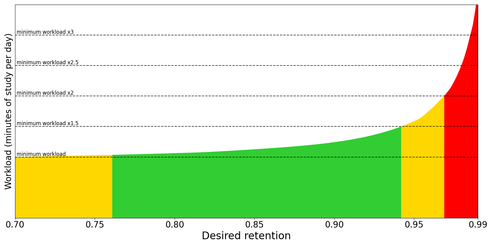
דער גענויער פארעם פונעם גראף איז אנדערש ביי יעדן, אבער צוויי מוסטערן זענען אמת ביי אלעמען:
-
וואס נאענטער די געוואונטשענע ראטע קומט צו 1.0, אלץ שטערקער וואקסט דער עול. שטעלט זיך פאר א קארטל וואס איר האט א 90% שאנס צו געדענקען נאך 100 טעג. מיט א געוואונטשענער ראטע פון
0.90וועט איר אים ווידער חזרן אין 100 טעג. אבער מיט0.95וועט איר אים דארפן חזרן נאך 46 טעג. דאס מיינט אז מיט0.95ווערן די אפשטאנדן כמעט האלב אזוי גרויס, און איר דארף חזרן צוויי מאל אזוי אפט ווי מיט0.90. ביי0.97איז דער אפשטאנד 27 טעג, און איר דארף חזרן 3.7 מאל אזוי אפט. ביי0.99איז דער אפשטאנד נאר 9 טעג, און איר דארף חזרן מער ווי 10 מאל אזוי אפט ווי מיט די ברירות מחדל. -
וואס נידריגער די געוואונטשענע ראטע, אלץ גרעסער דער פראצענט קארטלעך וואס איר פארגעסט און דארף ווידער חזרן. צום סוף קומט א פונקט וואו די פארגעסענע קארטלעך לייגן צו מער ארבעט ווי די לענגערע אפשטאנדן שפארן. אויך, אפט פארגעסן חומר קען אפשוואכן דעם חשק צום לערנען.
דערפאר ראטן מיר צו זיין פארזיכטיג ביים טוישן דעם נומער, און געווענליך האלטן אים אונטער 0.97. אויב איר קלייבט צווישן עטליכע ווערטן, נוצט דעם סימולאטאר צו זען דעם ערווארטעטן חזרה עול און טעגליכן צייט פארן טוישן די איינשטעלונג.
FSRS פאראמעטערס
FSRS פאראמעטערס ווירקן אויף דעם קארטלעך צייט פלאן. טוישט זיי נישט מיט דער האנט און קאפירט זיי נישט פון אן אנדערן.
פארבעסערן FSRS פאראמעטערס
דער FSRS פארבעסערער נוצט מאשין לערנען צו דערקענען אייערע זכרון מוסטערן און געפינען די פאסיגסטע פאראמעטערס פאר אייער חזרות היסטאריע. ער דארף דערפאר א צאל חזרות כדי צו צופאסן די פאראמעטערס.
ווען איר דרוקט פארבעסערן די איצטיגע פאראיינשטעלונג, אנאליזירט FSRS אייער חזרות היסטאריע און שאפט די פאסיגסטע פאראמעטערס פאר אייער זכרון און דעם חומר וואס איר לערנט. אויב איר האט פעקלעך מיט זייער פארשידענער שוועריגקייט, איז כדאי צו געבן זיי באזונדערע פאראיינשטעלונגען, ווייל גרינגע און שווערע פעקלעך וועלן האבן אנדערע פאראמעטערס. מען דארף נישט אפט פארבעסערן די פאראמעטערס; איינמאל א חודש איז גענוג.
לויט דער ברירת מחדל ווערן די פאראמעטערס גערעכנט פון דער חזרות היסטאריע פון אלע פעקלעך וואס נוצן די יעצטיגע פאראיינשטעלונג. מען קען צופאסן דעם זוכן פארן פארבעסערן אויב איר ווילט אויסשליסן געוויסע קארטלעך.
מען קען אויך פארבעסערן אלע פאראיינשטעלונגען צוזאמען מיט פארבעסערן אלע פאראיינשטעלונגען.
אפשאצן FSRS פאראמעטערס
מיט אפשאצן קען מען זען מאסן ווי גוט די פאראמעטערס שטימען מיט אייער חזרות היסטאריע. קלענערע נומערן ווייזן א בעסערע צופאסונג.
Log loss האט נישט קיין פשוטן אינטואיטיוון פירוש. RMSE (bins) קען מען פארשטיין ווי דעם דורכשניטליכן חילוק צווישן דעם פאראויסגעזאגטן שאנס צו געדענקען א קארטל (R) און דעם אמת’ן שאנס געמאסטן פון אייער חזרות היסטאריע. למשל, RMSE=5% מיינט אז FSRS טועה דורכשניטליך מיט 5% ביים פאראויסזאגן R. מען דארף נישט פארשטיין די מאסן צו נוצן FSRS.
Log loss און RMSE (bins) שטימען נישט אינגאנצן איינס מיטן אנדערן. צוויי פעקלעך קענען דעריבער האבן ענליכע RMSE ווערטן מיט זייער אנדערע Log loss ווערטן, אדער פארקערט.
לויט דער ברירת מחדל ווערן Log loss און RMSE (bins) גערעכנט פון אלע פעקלעך מיט דער יעצטיגער פאראיינשטעלונג. מען קען צופאסן דעם זוכן פארן אפשאצן צו טוישן וועלכע קארטלעך מען נעמט אריין.
פרטים: ווי צו לייענען די אפשאצונג פון FSRS פאראמעטערס
אפשאצן זאגט נישט צי איר “לערנט גוט” אדער צי דער פעקל איז גרינג. עס קוקט ווי גוט די יעצטיגע FSRS פאראמעטערס פאראויסזאגן דעם וועג וואס מען זעט אין אייער חזרות היסטאריע. אין פשוטע ווערטער, FSRS פרובירט צו שאצן דעם שאנס אז איר וועט געדענקען א קארטל אין א געוויסן חזרה צייט, און פארגלייכט די שאצונג מיט וואס האט באמת פאסירט אין אייערע חזרות.
RMSE (bins) איז גרינגער צו פארשטיין: עס באשרייבט בערך דעם דורכשניטליכן חילוק צווישן FSRS’ס געשאצטן שאנס און דער געמאסטענער הצלחה ראטע אין גרופעס פון ענליכע קארטלעך. א נידריגער ווערט מיינט געווענליך א בעסערע צופאסונג. Log loss איז א מאטעמאטישער מאס וואס איז מער עמפינדליך צו טעותן, בפרט ווען דער מאדעל איז זייער זיכער און דאך טועה. דערפאר קען RMSE זיין ענליך ביי צוויי פעקלעך און Log loss זייער אנדערש.
מען דארף נישט נאכלויפן א גאנץ פולקומענעם נומער. די מאסן ווענדן זיך אינעם צאל חזרות, ווי אייניג דער חומר איז, אייערע דרוק געוואוינהייטן און וועלכע קארטלעך איר האט אריינגענומען אינעם זוכן. אויב די מאסן זעען אויס שלעכט אדער טוישן זיך שטארק, קוקט ערשט אז איר האט כסדר גענוצט נאכאמאל, שווער, גוט און גרינג ריכטיג, און נישט געמישט זייער פארשידענע שוועריגקייטן אינעם זעלבן פאראיינשטעלונג. געווענליך איז גענוג צו פארבעסערן פון צייט צו צייט, און נישט טוישן די פאראמעטערס מיט דער האנט לויט די מאסן.
ניי באשטימען חזרה צייטן ביים טוישן
דער אויסוואל באשטימט צי קארטלעך חזרה דאטומען זאלן זיך טוישן ביים אנצינדן FSRS, טוישן די געוואונטשענע געדענק ראטע אדער די פאראמעטערס. די ברירת מחדל איז נישט ניי צו באשטימען: קומענדיגע חזרות נוצן דעם נייעם צייט פלאן, אבער דער עול טוישט זיך נישט גלייך. ווען ניי באשטימען איז אנגעצונדן, טוישן זיך די קארטלעך דאטומען. לויט אייער געוואונטשענער ראטע קען דאס אפט מאכן אסאך קארטלעך גרייט צו חזרה. דערפאר איז דער אויסוואל נישט רעקאמענדירט ביים ערשטן אריבערגיין פון SM-2.
נוצט דעם אויסוואל זעלטן, ווייל עס לייגט צו א חזרה איינשרייבונג פאר יעדן קארטל און פארגרעסערט אייער זאמלונג.
אויב איר גייט דאס ערשטע מאל אריבער פון SM-2 און דאך ווילט נוצן דעם אויסוואל, איז כדאי ערשט צו מאכן א גיבוי, אנצינדן FSRS מיט ניי באשטימען, און דערנאך, אויב נויטיג, צוריקנעמען אדער צוריקשטעלן פונעם גיבוי.
דער סימולאטאר
מען קען נוצן דעם סימולאטאר צו באקומען א שאצונג פון אייער עול, סיי חזרות א טאג און סיי לערנען מינוטן א טאג.
- טעג צו סימולירן באשטימט די לענג פון דער נאכגעמאכטער לערנען היסטאריע.
- נאך נייע קארטלעך צו סימולירן באשטימט צי דער סימולאטאר זאל נאכמאכן מער קארטלעך ווי די פאראיינשטעלונג האט יעצט. למשל, אויב עס זענען דא 100 קארטלעך און איר שטעלט דעם אויסוואל צו 50, סימולירט עס 150 קארטלעך צוזאמען. דאס העלפט ווען איר פלאנירט צולייגן נאך נייע קארטלעך.
- נייע קארטלעך א טאג און מערסטע חזרות א טאג באשטימען וויפיל נייע קארטלעך מען לערנט טעגליך און דעם מאקסימום צאל חזרות א טאג.
- גרעסטער אפשטאנד באשטימט די גרעסטע לענג פונעם אפשטאנד אין טעג.
כדי די סימולאציע זאל זיין ווי נאענט צום אמת ווי מעגליך, נעמט דער סימולאטאר אין חשבון די אמת’ע זכרון צושטאנדן פון אייערע קארטלעך: שוועריגקייט, פעסטקייט און שאנס צו געדענקען. ער נוצט אויך אייערע FSRS פאראמעטערס און געוואונטשענע געדענק ראטע, דעריבער טוישן זיי אויך די סימולאציע.
לערנען און איבערלערנען טריט
לערנען און איבערלערנען טריט פון איין טאג אדער מער זענען נישט רעקאמענדירט מיט FSRS. זיי זענען געווען פאפולער מיטן אלטן SM-2 בעיקר ווייל נאכאמאל פארגעסן א קארטל נאכן ענדיגן לערנען האט געקענט שטארק פארמינערן זיין גרינגקייט. א טייל האבן דאס גערופן “גרינגקייט גיהנום”. FSRS האט נישט דעם פראבלעם. מיט טריט קירצער פון א טאג לאזט איר FSRS באשטימען די צייטן וואס עס האט גערעכנט אלס די בעסטע פאר אייער חומר און זכרון. נאך א סיבה נישט צו נוצן לאנגע טריט איז אז FSRS קען באשטימען די ערשטע חזרה קירצער פונעם לעצטן לערנען טריט. דאס קען מאכן אז שווער זאל ווייזן א לענגערע צייט ווי גוט.
עס איז אויך כדאי צו האלטן ווייניג לערנען טריט. באווייזן ווייזן אז חזרן א קארטל עטליכע מאל אין איין טאג לייגט נישט צו פיל צום זכרון אויף לאנג. אייער צייט ווערט דערפאר בעסער גענוצט אויף אנדערע קארטלעך אדער א קירצערן לערנען רונדע.
מען קען לאזן FSRS באשטימען דעם קורצן צייט פלאן דורך לאזן די לערנען און איבערלערנען טריט פעלדער ליידיג. דאס איז א נסיון מעגליכקייט. אפילו FSRS-5 קען געבן אפשטאנדן קירצער פון א טאג, מיינט עס נישט אז עס וועט דאס טון. אייער נאכאמאל אפשטאנד קען זיין איין טאג אדער נאך לענגער.
פארגעשריטן
גרעסטער אפשטאנד
דער גרעסטער צאל טעג וואס א חזרה קארטל קען ווארטן פארן ווידער קומען. ווען חזרות דערגרייכן די גרענעץ, געבן שווער, גוט און גרינג אלע דעם זעלבן אפשטאנד. וואס קירצער איר שטעלט דעם אפשטאנד, אלץ גרעסער ווערט דער עול. די ברירת מחדל איז 100 יאר. מען קען דאס פארקלענערן אויב איר זענט גרייט צו לערנען מער צייט פאר א העכערע געדענק ראטע.
פריערדיגע געדענק ראטע
די איינשטעלונג איז באהאלטן ווען FSRS איז נישט אנגעצונדן.
ווען א טייל פון אייער חזרות היסטאריע פעלט, דארף FSRS אויספילן דאס פעלנדיגע. לויט דער ברירת מחדל נעמט עס אן אז איר האט געדענקט 90% פונעם חומר ביים טון יענע אלטע חזרות. אויב אייער אלטע געדענק ראטע איז געווען פיל העכער אדער נידריגער פון 90%, וועט צופאסן דעם אויסוואל העלפן FSRS בעסער שאצן די פעלנדיגע חזרות.
אייער חזרות היסטאריע קען זיין נישט פולשטענדיג צוליב צוויי סיבות:
- איר נוצט איגנארירן קארטלעך געחזרט פאר.
- איר האט פריער אויסגעמעקט חזרה יומנים צו באפרייען פלאץ, אדער אימפארטירט חומר פון אן אנדער חזרה פראגראם.
די צווייטע מעגליכקייט איז גאנץ זעלטן. אויב איר נוצט נישט די ערשטע מעגליכקייט, דארף מען מסתמא נישט צופאסן די איינשטעלונג.
איגנארירן חזרות פאר
ווען עס איז באשטימט, ווערן קארטלעך געלערנט פאר דעם דאטום נישט אריינגערעכנט ביים פארבעסערן FSRS פאראמעטערס. דאס העלפט אויב איר האט אימפארטירט אן אנדערן’ס צייט פלאן דאטן אדער געטוישט ווי איר נוצט די ענטפער קנעפלעך.
אנהייב גרינגקייט
באשטימט מיט וועלכער גרינגקייט קארטלעך הייבן אן. עס ווערט באשטימט ווען א קארטל ענדיגט לערנען צום ערשטן מאל. די ברירת מחדל איז 2.50. דעריבער, נאך וואס איר האט פארענדיגט לערנען א קארטל, וועט גוט אין די קומענדיגע חזרות פארגרעסערן דעם אפשטאנד בערך 2.5 מאל. למשל, נאך א 10 טאג אפשטאנד וועט דער קומענדיגער זיין ארום 25 טעג. לויט אייערע קומענדיגע אפשאצונגען קען די גרינגקייט ארויפגיין אדער אראפגיין פונעם אנהייב ווערט.
גרינג צוגאב
נאך א פאקטאר אויפן אפשטאנד ווען א חזרה קארטל ווערט געענטפערט גרינג. מיט דער ברירת מחדל פון 1.30 וועט גרינג געבן 1.3 מאל דעם “גוט” אפשטאנד. למשל, אויב “גוט” וואלט געווען 10 טעג, וועט “גרינג” זיין ארום 13 טעג.
אפשטאנד פאקטאר
נאך א פאקטאר פאר אלע חזרות. מיט דער ברירת מחדל פון 1.00 טוט עס גארנישט. מיט 0.80 ווערן די אפשטאנדן 80% פון זייער געווענליכער גרייס, אזוי אז א 10 טאג אפשטאנד ווערט 8 טעג. מען קען דערמיט מאכן די חזרות אפטער אדער זעלטענער.
פאר מיטל שווערע חומר זאל דער דורכשניטליכער באניצער געדענקען בערך 90% פון די באפעסטיגטע קארטלעך ווען זיי קומען צו חזרה. מען קען איבערקוקן אייערע רעזולטאטן דורך עפענען די גראפן / סטאטיסטיק פונעם פעקל און קוקן אויפן ענטפער קנעפלעך גראף. די באפעסטיגטע געדענק ראטע איז דער פראצענט ריכטיגע ענטפערס אויף דער רעכטער זייט. אויב איר לערנט נאך נישט לאנג, האט איר אפשר נאכנישט קיין באפעסטיגטע קארטלעך. די רעזולטאטן ביי נייע און פרישע קארטלעך קענען זיך שטארק טוישן. ווארט דערפאר ביז איר האט א שיינעם צאל באפעסטיגטע חזרות פארן ארויסנעמען מסקנות וועגן אייער געדענק ראטע.
אויפן SuperMemo וועבזייטל שטייט אז מען קען געפינען א פאסיגן פאקטאר פאר א געוואונטשענע געדענק ראטע. זייער נוסחא איז:
log(געוואונטשענע געדענק ראטע%) / log(יעצטיגע געדענק ראטע%)
שטעלט זיך פאר אז די יעצטיגע געדענק ראטע איז 85% און מיר ווילן זי פארגרעסערן צו 90%. מען רעכנט דעם פאקטאר אזוי:
log(90%) / log(85%) = 0.65
אויב איר לייגט אריין די רעזולטאט 65% אינעם אפשטאנד פאקטאר, וועט איר מיט דער צייט זען אז אייער געדענק ראטע קומט נאענטער צום געוואונטשענעם ווערט.
דער צוזאמענהאנג צווישן לערנען צייט און געדענק ראטע איז נישט לינעאר. דא זעט מען אז צו פארגרעסערן די ראטע מיט 5 פראצענט פונקטן, דארף מען לערנען 35% אפטער. אויב דער חומר איז זייער וויכטיג, קען עס זיין כדאי די צוגעלייגטע מי; דאס מוז איר אליין באשליסן. אויב איר זארגט פשוט אז איר פארגעסט צו פיל, קען מער צייט אינעם ערשטן לערנען אדער זכרון סימנים געבן מער תועלת מיט ווייניגער מי.
צום סוף, אנקי צווינגט א נייעם אפשטאנד צו זיין כאטש איין טאג לענגער פונעם פריערדיגן, כדי מען זאל נישט בלייבן מיטן זעלבן אפשטאנד אויף אייביג. צו חזרן א קארטל איינמאל א טאג פאר עטליכע טעג, לייגט צו מער לערנען טריט אנשטאט צופאסן דעם פאקטאר.
שווער אפשטאנד
דער פאקטאר וואס גייט אן ביים דרוקן שווער. דער פראצענט איז לויטן פריערדיגן אפשטאנד. למשל, מיט דער ברירת מחדל פון 1.20 באקומט א קארטל מיט א 10 טאג אפשטאנד 12 טעג.
נייער אפשטאנד
דער פאקטאר ביים דרוקן נאכאמאל אויף א חזרה קארטל. די ברירת מחדל 0.00 מיינט אז דער אפשטאנד ווערט צוריקגעשטעלט צו נול ביים פארגעסן. דאס ווערט דערנאך איין טאג דורך דעם [קלענסטן אפשטאנד](#מרווח מינימלי).
אויב מען טוישט די ברירת מחדל, קענען פארגעסענע קארטלעך האלטן א טייל פונעם פריערדיגן אפשטאנד. למשל, א קארטל מיט א 100 טאג אפשטאנד וועט באקומען א נייעם אפשטאנד פון 20 טעג אויב איר שטעלט נייער אפשטאנד צו 0.20.
כאטש האלטן א טייל פונעם אפשטאנד קען אויסזען מסתבר, האט SuperMemo באמערקט אז עס קען באמת שאטן. דערפאר ראטן מיר דאס צו לאזן אויף דער ברירת מחדל.
אייגענע חזרה פלאנירונג
פאר פארגעשריטענע באניצער: מען קען באקומען מער שליטה איבער אנקי’ס צייט פלאן דורך אייגענעם JavaScript אינעם אייגענע חזרה פלאנירונג פעלד. דאס איז אן אלגעמיינער אויסוואל; דער קוד דא גייט אן אויף אלע פאראיינשטעלונגען.
פראפילן
אויב מער ווי איין מענטש וויל נוצן Anki אויף אייער קאמפיוטער, קענט איר איינשטעלן א באזונדערן פראפיל פאר יעדן באנוצער. יעדער פראפיל האט אן אייגענע זאמלונג און אייגענע פראגראם-איינשטעלונגען. די צוגאבן זענען געמיינזאם פאר אלע פראפילן. מען שטעלט איין די פראפילן דורכן מעניו, מיט טוישן פראפיל.
פראפילן זענען בעיקר געמאכט פאר באזונדערע מענטשן. מען ראט נישט צו צעטיילן אייער אייגענעם לימוד-אינהאלט אין באזונדערע פראפילן.
אויב איר האט געשאפן עטליכע פראפילן פאר זיך אליין, איז בעסער זיי צונויפצומישן אין איין פראפיל. איר קענט דאס טון דורך עקספארטירן א פעקל פון פראפיל א’, דערנאך עס אימפארטירן אין פראפיל ב’, און איבערחזרן דעם שריט פאר אלע אנדערע פעקלעך פון פראפיל א’, ביז דער גאנצער אינהאלט געפינט זיך אין פראפיל ב’.
אין דער הפצה קענט איר אויך עקספארטירן א זאמלונג-פייל פון איין פראפיל, און דערנאך אימפארטירן דעם גאנצן פייל מיט אימפארטירן באזונדערע שאלות פון א פייל אינעם מעניו.
דאס פראפילן-פענצטער
פון דעם פראפילן-פענצטער, וואס מען עפנט מיט טוישן פראפיל אינעם הויפט-מעניו, קענט איר:
- אויפמאכן, צולייגן, איבערנעמען אדער אויסמעקן באנוצער-פראפילן.
- ארויסגיין פון דער פראגראם.
- צוריקשטעלן אן אויטאמאטישע רעזערוו-קאפיע.
- אראפשטעלן אייער זאמלונג צו אן עלטערן פארמאט. דאס איז נויטיג אויב איר ווילט זי עפענען אין אן עלטערער ווערסיע פון Anki. אויב איר לאזט אויס דעם שריט, קענט איר באקומען א פעלער ביים עפענען די זאמלונג אין אן עלטערער ווערסיע. איר וועט דעמאלט דארפן צוריקקומען צו דער ווערסיע, אראפשטעלן דעם פארמאט, און נאכאמאל פרובירן.
דורכבלעטערן
אינהאלט
- טאבעלע מצבים
- דער זייט סרגל
- דער זוך כלי
- דער אויסוואל כלי
- אפגעזיכערטע זוכענישן
- רעדאקטירן פריטים
- געפינען פריטים
- דער זוך קעסטל
- פארגעשריטענע זוכעניש און אויסצייכענען רעזולטאטן
- קארטל/רשומה טאבעלע
- שורות
- שפאלטן
- דער רעדאקטירער שטח
- מעניוס און פעולות
- דער קיצור סרגל
- טעקע
- רשומות
- קארטלעך
- גיי צו
- זוכן און איבערבייטן
- געפין און בייט איבער
- געפינען דאפלטע
- טוישן און איבערבייטן פעלד אינהאלט
דער דורכבלעטערער פענסטער ערלויבט אייך צו זוכן און רעדאקטירן אייערע קארטלעך און רשומות. מען עפנט אים מיט א דרוק אויף דורכבלעטערן אינעם הויפט פענסטער, אדער מיטן קנעפל B. ער האט דריי חלקים: דער זייט סרגל רעכטס, די קארטל/רשומה טאבעלע אויבן לינקס, און דער רעדאקטירער שטח אונטן לינקס. שטעלט דעם מויז צווישן צוויי חלקים, דריקט און שלעפט, כדי צו פארברייטערן איינעם און פארקלענערן דעם אנדערן.
טאבעלע מצבים
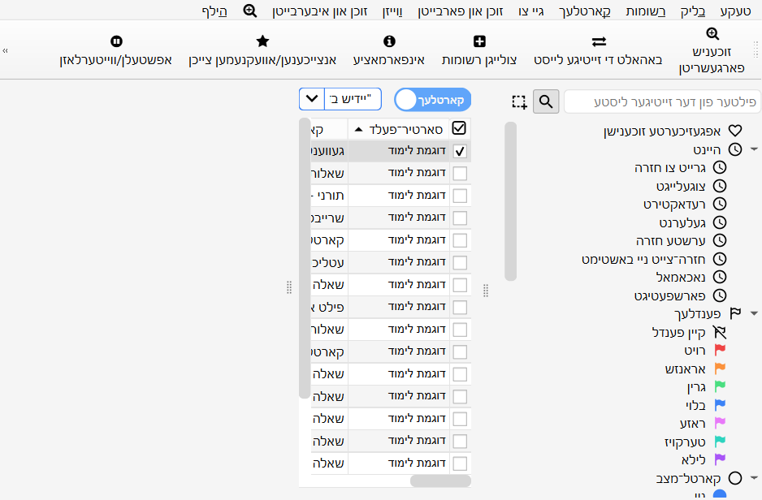
אנקי האט צוויי מצבים: די טאבעלע ווייזט אדער קארטלעך אדער רשומות. מען קען טוישן דעם מצב מיטן שאלטער אויבן, רעכטס פונעם זוך פעלד, אדער מיט Ctrl+Alt+T. דער שאלטער ווייזט אויך צי מען זעט יעצט קארטלעך אדער רשומות.
הערה: כדי עס זאל זיין פשוט, גייט דער מדריך געווענליך אויס פון קארטל מצב. וואו עס שטייט אויסקלייבן, געפינען און אזוי ווייטער פון “קארטלעך”, לייענט דאס לויטן יעצטיגן מצב: קארטלעך אדער רשומות.
דער זייט סרגל
דער זייט סרגל רעכטס גיט א שנעלן צוטריט צו געווענליכע זוך אויסדרוקן. עס האט אויך א זוך סרגל, כלים צו רעדאקטירן צעטלעך און פעקלעך, און צוויי באזונדערע כלים וואס ווערן ערקלערט ווייטער. מען טוישט צווישן די כלים מיטן סרגל אויבן אינעם זייט סרגל, אדער מיט די קיצורים Alt+1/2.
דער זוך כלי
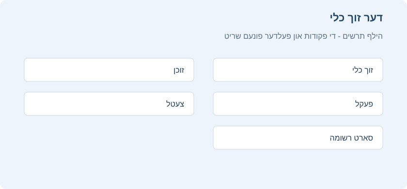
א דרוק אויף א פריט אינעם זייט סרגל זוכט לויט אים.
האלט Ctrl ביים דריקן צו צולייגן דעם פריט צום יעצטיגן זוכן מיט א תנאי AND, דאס הייסט נאך א תנאי, אנשטאט אנהייבן א נייע זוכעניש. צום ביישפיל, אויב איר ווילט ווייזן קארטלעך ביים לערנען אינעם פעקל “סוכה”, דריקט אויף “לערנען” און דערנאך אויף “סוכה” בשעת איר האלט Ctrl.
האלט Shift צו שאפן א זוכעניש מיט OR, דאס הייסט אדער, אנשטאט AND. צום ביישפיל, דריקט אויף איין פעקל און דערנאך אויף אן אנדערן מיט Shift, צו ווייזן קארטלעך פון ביידע פעקלעך צוזאמען.
האלט Alt צו אויסשליסן א תנאי פונעם זוכן, מיט א - פאר אים: צום ביישפיל, נישט צו ווייזן די קארטלעך פון א געוויסן פעקל.
מען קען צוזאמנעמען Alt מיט Ctrl אדער Shift. א דרוק מיט Ctrl+Alt, צום ביישפיל, לייגט צו א נייעם אויסשליס תנאי.
מען קען אויך האלטן Ctrl און
Shift צוזאמען ביים דריקן אויף א זוך אויסדרוק, כדי איבערצובייטן אלע תנאים פונעם זעלבן סארט.
נעמט אן אז איר האט געשריבן די צוזאמענגעשטעלטע זוכעניש
deck:שבת (is:due or tag:important)
און איר ווילט יעצט דעם זעלבן זוכן פארן פעקל עירובין. האלט
Ctrl+Shift ביים דריקן אויף פעקל עירובין אינעם זייט סרגל, און איר באקומט:
deck:עירובין (is:due or tag:important).
דער אויסוואל כלי
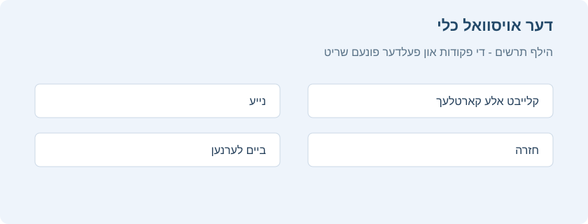
דער אויסוואל כלי ערלויבט אויסצוקלייבן מערערע פריטים אויף איינמאל, דורך האלטן Ctrl אדער Shift ביים דריקן. מען קען אויך שלעפן און אראפלאזן צו טוישן דעם סדר פון פעקלעך און צעטלעך.
צום ביישפיל: איר האט די צעטלעך היזק_ראיה, חלוקה און השותפין.
דריקט אויף דער צעטל ברירה, און דערנאך אויף חלוקה מיט Ctrl. ביידע צעטלעך
זענען יעצט אויסגעקליבן. שלעפט איינע פון זיי צו השותפין, כדי ביידע זאלן ווערן אירע אונטערצעטלעך.
אנקי האט דערביי געטוישט די נעמען צו
השותפין::חלוקה און השותפין::היזק_ראיה, לויטן סדר, און האט דערהיינטיגט די רשומות דערמיט.
נאך א באניץ פאר מערערע אויסגעקליבענע פריטים איז זוכן: דריקט רעכטס אויף די אויסוואל און קלייבט זוכן > אלע/איינער פון די אויסגעקליבענע. מען קען דאס צוזאמנעמען מיט די קנעפלעך ערקלערט ביי [דער זוך כלי](#כלי החיפוש), כדי צו צולייגן די געשאפענע זוכעניש צום יעצטיגן זוכן.
אפגעזיכערטע זוכענישן
אויב איר זוכט כסדר דאס זעלבע, קענט איר אפזיכערן די יעצטיגע זוכעניש: דריקט רעכטס אויפן אויבערשטן פריט אינעם זייט סרגל, קלייבט “זיכער אפ די יעצטיגע זוכעניש” און שרייבט א נאמען. מען קען אויך שלעפן יעדן פריט פונעם זייט סרגל צו דעם שטח צו צולייגן א פאסיגע אפגעזיכערטע זוכעניש, און אזוי זי צושטעלן אויבן.
רעדאקטירן פריטים
מען קען אויסמעקן אדער טוישן נעמען פון צעטלעך, פעקלעך און אפגעזיכערטע זוכענישן גלייך אינעם זייט סרגל, דורכן רעכטן מויז מעניו, אדער מיט א קיצור: Del און F2. מען קען אויך אויסמעקן מערערע פריטים אויף איינמאל (זעט דער אויסוואל כלי).
געפינען פריטים
צו געפינען א געוויסן פריט אינעם זייט סרגל בוים, טייפט א חלק פון זיין נאמען אינעם זוך סרגל אויבן.
דער זוך קעסטל
איבער דער קארטל ליסטע איז א זוך קעסטל. דארט קען מען טייפן פארשידענע זאכן צו זוכן קארטלעך. פארן זוך סינטאקס, זעט זוכן.
פארגעשריטענע זוכעניש און אויסצייכענען רעזולטאטן
צו עפענען די פארגעשריטענע זוכעניש, עפנט דעם דורכבלעטערער פענסטער און דריקט פארגעשריטענע זוכעניש אינעם אויבערשטן סרגל. מען קען זי אויך עפענען דורך זוכן און איבערבייטן > פארגעשריטענע זוכעניש, אדער מיט Ctrl+Shift+F. א זייט פענסטערל מיט קאטאגאריעס וועט זיך עפענען. עס בויט פאר אייך דעם אנקי זוך סינטאקס, אן אז איר זאלט דארפן געדענקען אלע ענגלישע ווערטער.
דער אויבערשטער חלק איז א פרייע אויסדרוק שורה. טייפט א ווארט אדער אן אויסדרוק, און נוצט און / אדער צו באשטימען צי אלע תנאים מוזן פאסן אדער איינער איז גענוג. לייגט צו קלאמערן פאר א צוזאמענגעשטעלטע זוכעניש, און שלעפט אויסדרוקן צו טוישן זייער סדר. ווען די שאילתה איז ריכטיג, דריקט דעם זוך קנעפל אדער Enter.
צו פארשטיין קלאמערן, טראכט פון יעדן אויסדרוק אלס א תנאי. א רווח צווישן תנאים מיינט געווענליך און, און or מיינט אדער. קלאמערן זאגן אנקי קודם צו אויסרעכענען די גרופע אינעווייניג. צום ביישפיל, deck:ברכות (tag:דף_ב or tag:דף_ג) מיינט: זוך נאר אינעם פעקל ברכות, און ווייז דארט קארטלעך מיט דער צעטל דף ב אדער דף ג. אן די קלאמערן קען deck:ברכות tag:דף_ב or tag:דף_ג אויך צוריקברענגען קארטלעך מיט דער צעטל דף ג פון דרויסן דעם פעקל ברכות, ווייל or טיילט די שאילתה אין צוויי ברייטערע מעגליכקייטן.
מען קען צוזאמנעמען קלאמערן מיט אויסשליסן. א מקף פאר א תנאי מיינט נישט: deck:ברכות -(tag:קל or tag:חזרה_מהירה) זוכט אינעם פעקל ברכות, אבער לאזט ארויס יעדע קארטל מיט איינע פון די צוויי צעטלעך אינעם קלאמער. אזוי בויט מען א גענויע זוכעניש אן איבערצוזאגן דעם זעלבן תנאי כסדר.
אין דער קאטאגאריע פלאץ און סארט קלייבט מען אויס פעקלעך, סארטן רשומה און צעטלעך. נוצט זי ווען איר ווייסט אין וועלכן תחום צו זוכן: א באזונדערן פעקל, א סארט רשומה פון פראגעס און ענטפערס, אדער א צעטל פאר א מסכתא אדער נושא. קארטל מצב פילטערט לויט ניי, ביים לערנען, ביים חזרן, ווארט פאר היינט, אפגעשטעלט אדער באזייטיגט ביז מארגן. פענער פילטערט לויטן פאן קאליר. דאטום מרווח זוכט לויטן צולייג דאטום, לערן דאטום אדער געפלאנטן דאטום. מאסן פילטערט לויט מרווח, צאל חזרות, דורכפאלן און מעגליכקייט צו דערמאנען.
אינעם מעניו זוכן און איבערבייטן זענען אויך פאראן כלים פאר געווענליכע זוכענישן: זוך לויטן צולייג דאטום, זוך לויטן רעדאקטיר דאטום, זוך לויטן לעצטן לערן דאטום און זוך געשיכטע. די כלים לייגן אריין דעם פאסיגן אויסדרוק אינעם זוך קעסטל. דערנאך קען מען אים אליין רעדאקטירן אדער צולייגן נאך תנאים.
ווען די רעזולטאטן ווערן געוויזן, קען מען אנשאלטן צייכן אויס ווערטער אין זוך רעזולטאטן כדי אנצוצייכענען די געפונענע ווערטער אין דער טאבעלע און אינעם רעדאקטירער שטח. דאס העלפט ביי א געווענליכן ווארט, אדער ווען דער זעלבער קארטל האט עטליכע ענליכע ערטער. אויב איר האט געטוישט א קארטל אין אן אנדערן פענסטער און די רעזולטאטן זענען נישט דערהיינטיגט, דריקט פריש אויף אינעם סרגל אדער מעניו צו לאדענען די קארטל ליסטע פון פריש.
קארטל/רשומה טאבעלע
די טאבעלע שורות שטעלן פאר קארטלעך אדער רשומות וואס פאסן צו דער יעצטיגער זוכעניש. ביים דריקן אויף א שורה ווערט די פאסיגע רשומה געוויזן אונטן.
שורות
אויב איר שלעפט דעם מויז אדער האלט Ctrl צו אויסקלייבן מערערע שורות, ווערט דער קארטל רעדאקטירער צייטווייליג באהאלטן. פארשידענע פעולות, ווי טוישן פעקל, קענען זיך צולייגן צו מערערע קארטלעך אדער רשומות אויף איינמאל, אן זיך צו ווענדן אינעם יעצטיגן מצב. דערפאר ווערט אין קארטל מצב א רשומה גערעכנט אלס אויסגעקליבן אויב איינע פון אירע קארטלעך איז אויסגעקליבן. אין רשומה מצב ווערט א קארטל גערעכנט אלס אויסגעקליבן אויב איר רשומה איז אויסגעקליבן.
אנדערע פעולות, ווי ווייזן קארטל אינפארמאציע, ארבעטן נאר אויף איין קארטל אדער רשומה. דאס הייסט דער יעצטיגער קארטל אדער רשומה, געווענליך דער לעצטער וואס מען האט אויסגעקליבן אדער געדריקט. אין קארטל מצב געהערט די יעצטיגע רשומה צום יעצטיגן קארטל. אין רשומה מצב איז דער יעצטיגער קארטל דער ערשטער פון דער יעצטיגער רשומה.
דער הינטערגרונט קאליר ווענדט זיך אינעם קארטל און דער רשומה. אין קארטל מצב גייט דער ערשטער תנאי וואס פאסט:
- אויב דער קארטל האט א פאן, נוצט מען דעם פאן קאליר.
- אויב דער קארטל איז אפגעשטעלט, געל.
- אויב די רשומה פונעם קארטל איז אנגעצייכנט, לילא.
אין רשומה מצב גייט דער קאליר נאר אן אויף אנגעצייכנטע רשומות.
פאר מער אינפארמאציע וועגן אנגעצייכנטע רשומות און אפגעשטעלטע קארטלעך, זעט רעדאקטירן און נאך.
שפאלטן
מען קען איינשטעלן די שפאלטן: דריקט רעכטס אויף איינעם פון זיי, אדער Ctrl מיט א דרוק, כדי צו אויסקלייבן וועלכע שפאלטן איר ווילט זען. מען קען שלעפן שפאלטן צו טוישן זייער סדר. א דרוק אויף א שפאלט סארטירט לויט אים; דריקט ווידער צו איבערקערן דעם סדר, פון אנהייב צו סוף אדער פארקערט. מען קען נישט סארטירן לויט די פראגע און ענטפער שפאלטן. אינעם זעלבן רעכטן מויז מעניו איז אויך אן אונטערמעניו - פארגעשריטן -. עפנט אים און צייכנט אן די נאך שפאלטן וואס איר ווילט ווייזן. אזוי שאלט מען אן די באזונדערע שפאלטן; זיי ווייזן זיך נישט אויטאמאטיש פאר מען שאלט זיי אליין אן אינעם שפאלט מעניו.
אלע שפאלטן זענען צוטריטלעך סיי אין קארטל מצב און סיי אין רשומה מצב, אבער אמאל מיט אביסל אנדערע נעמען און דאטן. די פאלגנדע טאבעלע ערקלערט זייער אויפפירונג אין ביידע מצבים.
| שפאלט | קארטל מצב | רשומה מצב |
|---|---|---|
| ענטפער | דער הינטערשטער זייט פונעם קארטל אין איין שורה, אן דער פראגע. מען קען אויך אויסקלייבן אן אייגענעם אויסשטעל אינעם סארט קארטל רעדאקטירער. | ווי אין קארטל מצב, אבער פארן ערשטן קארטל פון דער רשומה. |
| קארטל(עך) | דער נאמען פונעם קארטל סארט רשומה. | די צאל קארטלעך אין דער רשומה. |
| קארטל געטוישט | דאס לעצטע מאל וואס דער קארטל איז געטוישט געווארן, צום ביישפיל ביי א חזרה ווען די חזרה געשיכטע און דער מרווח זענען דערהיינטיגט געווארן. | דאס לעצטע מאל וואס איינער פון דער רשומה קארטלעך איז געטוישט געווארן. |
| געשאפן | ווי אין רשומה מצב, פאר דער רשומה פונעם קארטל. | דער שאף דאטום פון דער רשומה. |
| פעקל | דער נאמען פונעם פעקל וואו דער קארטל ליגט. | די צאל פארשידענע פעקלעך וואו די רשומה קארטלעך ליגן, אדער דעם פעקל נאמען אויב אלע ליגן אינעם זעלבן פעקל. |
| געפלאנטער דאטום | דער געפלאנטער דאטום פאר קארטלעך ביים חזרן אדער ביים לערנען אדער איבערלערנען; פאר נייע קארטלעך — זייער פלאץ אינעם נייע קארטל ריי. דער ווערט איז אין קלאמערן אויב דער קארטל איז אפגעשטעלט אדער באזייטיגט. מען סארטירט קודם לויטן סארט, און דערנאך לויט דאטום אדער פלאץ. | דער געפלאנטער דאטום פון דער רשומה קומענדיגן חזרה אדער לערן/איבערלערן קארטל וואס איז נישט אפגעשטעלט, באזייטיגט אדער אין א געפילטערטן פעקל. |
| גרינגקייט (דורכשניט) | די קארטל גרינגקייט, אויב ער איז נישט ניי. | די דורכשניטליכע גרינגקייט פון דער רשומה קארטלעך וואס זענען נישט ניי. |
| מרווח (דורכשניט) | דער קארטל מרווח, אויב ער איז ביים חזרן אדער איבערלערנען. | דער דורכשניטליכער מרווח פון דער רשומה קארטלעך ביים חזרן אדער איבערלערנען. |
| דורכפאלן | וויפיל מאל דער קארטל איז אפגעשאצט געווארן אלס “נאכאמאל”. | סך הכל דורכפאלן פון אלע רשומה קארטלעך. |
| רשומה | ווי אין רשומה מצב, פאר דער רשומה פונעם קארטל. | דער נאמען פונעם רשומה סארט. |
| רשומה געטוישט | ווי אין רשומה מצב, פאר דער רשומה פונעם קארטל. | דאס לעצטע מאל וואס מען האט רעדאקטירט די רשומה, צום ביישפיל א פעלד אינהאלט. |
| פראגע | דער פארנט זייט פונעם קארטל אין איין שורה. מען קען אויך אויסקלייבן אן אייגענעם אויסשטעל אינעם סארט קארטל רעדאקטירער. | ווי אין קארטל מצב, אבער פארן ערשטן קארטל פון דער רשומה. |
| חזרות | וויפיל מאל מען האט געחזרט דעם קארטל. | סך הכל חזרות פון אלע רשומה קארטלעך. |
| סארטיר פעלד | ווי אין רשומה מצב, פאר דער רשומה פונעם קארטל. | דער אינהאלט פונעם פעלד באשטימט אלס סארטיר פעלד פאר דעם סארט רשומה. נאר דעם פעלד קען מען ווייזן און לויט אים סארטירן. מען טוישט אים מיט א דרוק אויף פעלדער… אינעם רעדאקטירער שטח. |
| צעטלעך | ווי אין רשומה מצב, פאר דער רשומה פונעם קארטל. | די רשומה צעטלעך. |
דער רעדאקטירער שטח
דער אונטערשטער רעכטער שטח ווייזט די רשומה פון דער יעצט אויסגעקליבענער שורה. פאר מער וועגן קארטלעך און רשומות, זעט אנהייבן. פאר מער וועגן אויסשטעל קנעפלעך, זעט רעדאקטירן.
מען קען פארויסקוקן וויאזוי דער יעצט אויסגעקליבענער קארטל וועט אויסזען ביים חזרן, מיט א דרוק אויף פארויסקוק אויבן אינעם רעדאקטירער שטח. אין דעם פארויסקוק ווייזן זיך נישט די ‘טייפט די ענטפער’ פעלדער, כדי מען זאל קענען שנעל קוקן דעם קארטל. אין רשומה מצב ווייזט דער פארויסקוק דעם ערשטן קארטל פון דער אויסגעקליבענער רשומה.
מעניוס און פעולות
אויבן אינעם דורכבלעטערער פענסטער געפינט זיך א סרגל מיט פארשידענע מעניוס, מיט פעולות וואס מען קען דארט דורכפירן.
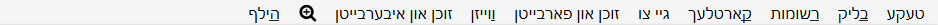
אונטער אים איז א שורה פון קיצורים פאר פעולות פון די מעניוס. זייער ערקלערונג קומט ווייטער.
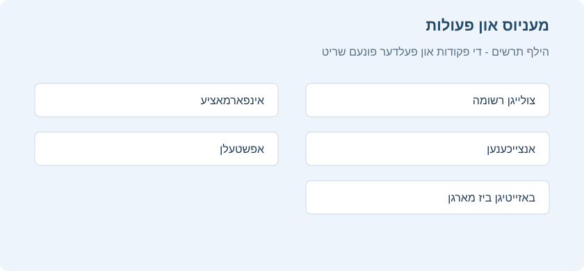
דער קיצור סרגל
דער קיצור סרגל ווייזט נאר די פעולות אינעם בילד. האלט דעם מויז איבער אן אייקאן צו זען דעם פעולה נאמען, קלייבט אויס איין אדער מער שורות, און דריקט דעם פאסיגן אייקאן. פון רעכטס צו לינקס זענען דאס:
| פעולה | ווען נוצט מען זי |
|---|---|
| פארגעשריטענע זוכעניש | עפנט א זוך פענסטערל לויט פעקל, צעטל, סארט רשומה, קארטל מצב, דאטומען און מאסן. פאסיג ווען מען וויל נישט אליין טייפן דעם זוך סינטאקס. |
| באהאלט דעם זייט סרגל | באהאלט אדער ווייזט דעם זייט סרגל צו מאכן פלאץ פאר דער קארטל טאבעלע און רעדאקטירן. |
| לייג צו רשומות | עפנט דעם צולייג פענסטער צו שאפן א נייע רשומה. דעם פעקל און סארט רשומה באשטימט מען אויבן אינעם צולייג פענסטער. |
| אינפארמאציע | ווייזט אינפארמאציע פונעם יעצטיגן קארטל, מיטן צייטפלאן מצב און חזרה געשיכטע. די פעולה איז פאר איין קארטל אויף א מאל. |
| צייכן אן | לייגט צו אדער נעמט אוועק די צעטל marked פון די אויסגעקליבענע רשומות. אנגעצייכנטע רשומות ווייזן זיך מיט א באזונדערן קאליר. |
| שטעל אפ | שטעלט אפ אדער שאלט ווידער אן די אויסגעקליבענע קארטלעך. אפגעשטעלטע קארטלעך קומען נישט צום לערנען ביז מען ברענגט זיי אליין צוריק. |
| לייג באזייטיג | לייגט באזייטיג אדער ברענגט צוריק די אויסגעקליבענע קארטלעך. באזייטיגן באהאלט א קארטל ביז מארגן, אן אויסמעקן און אן טוישן די רשומה. |
| טויש פעקל | פירט די אויסגעקליבענע קארטלעך אין אן אנדערן פעקל. אויב א רשומה האט מערערע קארטלעך, ווערן נאר די אויסגעקליבענע אריבערגעפירט. |
| טויש דעם סארט רשומה | טוישט די אויסגעקליבענע רשומות צו אן אנדערן סארט, מיט א פארבינדונג פון די אלטע און נייע פעלדער. |
| לייג צו צעטלעך | לייגט צו איין אדער מער צעטלעך צו אלע אויסגעקליבענע רשומות. צעטלעך געהערן צו דער רשומה, דערפאר ווייזן זיי זיך אויף אלע קארטלעך וואס ווערן געשאפן פון איר. |
| נעם אוועק צעטלעך | נעמט אוועק צעטלעך פון די אויסגעקליבענע רשומות. שרייבט די נעמען צו אוועקנעמען און באשטעטיגט. |
| ריין אויס נישט גענוצטע צעטלעך | נעמט אוועק פון דער צעטלעך ליסטע די צעטלעך וואס געהערן נישט צו קיין רשומה. דאס מעקט נישט אויס קארטלעך אדער רשומות. |
| מעק אויס | מעקט אויס די אויסגעקליבענע רשומות און אלע קארטלעך וואס זענען געשאפן פון זיי. נוצט דאס נאר נאכן נאכקוקן אז די אויסוואל איז ריכטיג. |
| שטעל א געפלאנטן דאטום | באשטימט אליין א חזרה צייט פאר די אויסגעקליבענע קארטלעך, צום ביישפיל אין א צאל טעג אדער אין א טאג מרווח. פאסיג פאר א באזונדערן צייטפלאן טויש. |
| שטעל א נייעם פלאץ | טוישט דעם פלאץ פון נייע קארטלעך אינעם נייע קארטל ריי. פאסיג אויסצושטעלן די סדר פון נייעם חומר פארן אנהייבן לערנען. |
נאך דורכבלעטערער פעולות זענען צוטריטלעך דורך די מעניוס און מיט א רעכטן דרוק אויף א שורה, אבער זענען נישט אינעם קיצור סרגל פונעם בילד.
טעקע
| נאמען | פעולה |
|---|---|
| מאך צוריק | מאכט צוריק די לעצטע פעולה. |
| קלייב אלעס אויס | קלייבט אויס אלע געוויזענע שורות. |
| קלייב אויס רשומות | ווייזט נאר די יעצט אויסגעקליבענע רשומות און קלייבט אויס אלע שורות. |
| קער איבער די אויסוואל | קלייבט אויס די ביז יעצט נישט אויסגעקליבענע שורות, און נעמט אוועק די ביז יעצטיגע אויסוואל. |
| שאף א געפילטערטן פעקל מיט די אנגעצייכנטע פראגעס | ווייזט דעם געפילטערטן פעקל פענסטער מיט די אויסגעקליבענע פראגעס אלס פילטער. א דרוק אויף באשטעטיגן שאפט א געפילטערטן פעקל מיט די קארטלעך אויסגעקליבן אין דער טאבעלע. |
| שאף א געפילטערטן פעקל | ווייזט דעם געפילטערטן פעקל פענסטער מיט דער יעצטיגער זוכעניש אלס פילטער. נוצט Alt צו באשטימען אנשטאט דעם צווייטן פילטער. |
| פיר סארטן רשומה | עפנט דעם פענסטער צו פירן סארטן רשומה. |
| פריש אויף | לאדט דעם דורכבלעטערער פענסטער פון פריש. נוצט דאס נאך א טויש אין אן אנדערן פענסטער, ווי צולייגן א נייע רשומה. |
רשומות
רוב פון די פאלגנדע פעולות ארבעטן אויף די אויסגעקליבענע רשומות. זיי זענען אויך צוטריטלעך דורכן רעכטן מויז מעניו אויף אן אויסגעקליבענער שורה אין רשומה מצב. אין קארטל מצב געפינט מען זיי אין אן אונטערמעניו פונעם רעכטן מויז מעניו.
| נאמען | פעולה |
|---|---|
| לייג צו רשומות | עפנט דעם צולייג פענסטער. |
| שאף א קאפיע | עפנט א קאפיע פון דער יעצטיגער רשומה אינעם רעדאקטירער. מען קען זי אביסל טוישן און גרינג שאפן פארשידענע ווערסיעס פון אייערע קארטלעך. אלס ברירת מחדל ווערט די קאפיע געשאפן אינעם זעלבן פעקל ווי דער אריגינאל. |
| עקספארטיר רשומות | עפנט דעם עקספארט פענסטער. |
| לייג צו צעטלעך | לייגט צו צעטלעך צו אלע אויסגעקליבענע רשומות. |
| נעם אוועק צעטלעך | שרייבט די צעטלעך און נעמט זיי אוועק פון אלע אויסגעקליבענע רשומות. |
| ריין אויס נישט גענוצטע צעטלעך | נעמט אוועק פונעם זייט סרגל אלע צעטלעך וואס געהערן נישט צו קיין רשומה. |
| צייכן אן | אויב די יעצטיגע רשומה איז אנגעצייכנט, דאס הייסט זי האט די צעטל Marked, נעמט מען אוועק דעם סימון פון אלע אויסגעקליבענע רשומות. אויב זי איז נישט אנגעצייכנט, צייכנט מען אלע אויסגעקליבענע רשומות אן. |
| טויש דעם סארט רשומה | טוישט די אויסגעקליבענע רשומות פון איין סארט צום אנדערן. צום ביישפיל: איר האט א סארט פאר מערערע פראגעס און ענטפערס, אבער בטעות אריינגעלייגט פארבונדענעם טעקסט אין 01 שאלה רגילה. מיט דער אפציע קען מען פאררעכטן דעם טעות. דער קארטל צייטפלאן ווערט נישט געטוישט. |
| מעק אויס | מעקט אויס אלע אויסגעקליבענע רשומות און זייערע קארטלעך. מען קען נישט אוועקנעמען באזונדערע קארטלעך, ווייל די באזונדערע קארטלעך ווערן באשטימט דורך מוסטערן. |
| מאך א קאפיע פון דער רשומה | שאפט קאפיעס פון די אויסגעקליבענע רשומות אן עפענען דעם רעדאקטירער פענסטער. |
קארטלעך
די פאלגנדע פעולות ארבעטן אויף די יעצט אויסגעקליבענע קארטלעך. זיי זענען אויך צוטריטלעך דורכן רעכטן מויז מעניו אויף אן אויסגעקליבענער שורה אין קארטל מצב. אין רשומה מצב געפינט מען זיי אין אן אונטערמעניו פונעם רעכטן מויז מעניו.
| נאמען | פעולה |
|---|---|
| טויש פעקל | פירט די יעצט אויסגעקליבענע קארטלעך אין אן אנדערן פעקל. |
| שטעל א געפלאנטן דאטום | טוישט נייע קארטלעך צו חזרה קארטלעך און באשטימט א געפלאנטן דאטום. דאס קען העלפן צו רוקן קארטלעך א פאר טעג פאראויס אדער צוריק ווען אייער לערן סדר ווערט געשטערט. א מרווח ווי 60-90 שטעלט דעם דאטום צווישן 60 און 90 טעג פון היינט. נייע קארטלעך באקומען א מרווח גלייך צום אפשטופ; חזרה קארטלעך באקומען א נייעם דאטום אן טוישן זייער יעצטיגן מרווח, סיידן מען לייגט צו אן אויסרוף צייכן (!) ביים סוף. די ענטפער צייט ווערט נישט רעקארדירט ביים מאנועל איינשטעלן קארטלעך, ווייל מען קען דאס טון אויך אויסער א חזרה, און אנקי ווייסט נישט וועלכער קארטל ווערט אפשר געוויזן אין יענער צייט. |
| פארגעס | פירט די יעצט אויסגעקליבענע קארטלעך צום סוף פונעם נייע קארטל ריי. די ביז יעצטיגע חזרה געשיכטע בלייבט. מען קען אויסקלייבן צוריקצוברענגען דעם אריגינעלן פלאץ און צוריקצושטעלן די קארטל דורכפאל און חזרה ציילערס. |
| שטעל א נייעם פלאץ | טוישט דעם סדר ווי נייע קארטלעך וועלן זיך ווייזן. די יעצטיגע פלעצער קען מען זען דורך אנשאלטן דעם געפלאנטער דאטום שפאלט, ווי ערקלערט אויבן ביי דער טאבעלע. מיט מערערע אויסגעקליבענע קארטלעך גיט די פעולה יעדן קארטל א וואקסנדיגן נומער לויטן סדר. אלס ברירת מחדל שטייגט דער נומער מיט איינס פאר יעדן קארטל, אבער מען קען טוישן דעם “טריט”. רוק דעם פלאץ פון עקזיסטירנדע קארטלעך ערלויבט אריינצולייגן קארטלעך צווישן עקזיסטירנדע און שטופן די עקזיסטירנדע ווייטער. צום ביישפיל, ביי פינף קארטלעך, אויב איר ווילט רוקן 3, 4 און 5 צווישן 1 און 2, וועט די אפציע געבן דעם סדר 1, 3, 4, 5, 2. אויב זי איז אויסגעשאלטן, וועלן 1 און 2 באקומען דעם זעלבן פלאץ נומער, און מען וועט נישט קענען פאראויס וויסן וועלכער פון זיי קומט קודם. ווען די אפציע איז איינגעשאלטן, ווערט יעדער קארטל מיט א העכערן פלאץ געטוישט. |
| שטעל אפ | שטעלט אפ אדער שאלט ווידער אן אלע אויסגעקליבענע קארטלעך, לויט צי דער יעצטיגער קארטל איז אפגעשטעלט. |
| לייג באזייטיג | לייגט באזייטיג ביז מארגן אדער ברענגט צוריק אלע אויסגעקליבענע קארטלעך, לויט צי דער יעצטיגער קארטל איז באזייטיגט. |
| צייכן אן מיט א פאן | טוישט די פענער פון אלע אויסגעקליבענע קארטלעך. צי מען לייגט צו אדער נעמט אוועק דעם פאן, ווענדט זיך צי דער יעצטיגער קארטל האט שוין דעם אויסגעקליבענעם פאן. |
| אינפארמאציע | ווייזט פארשידענע אינפארמאציע פונעם יעצטיגן קארטל, מיט זיין חזרה געשיכטע. פאר מער, זעט קארטל אינפארמאציע. |
גיי צו
דער מעניו גיט קלאוויאטור קיצורים צו שפרינגען צווישן פארשידענע חלקים פונעם דורכבלעטערער און צו גיין ארויף און אראפ אין דער קארטל ליסטע.
זוכן און איבערבייטן
| נאמען | פעולה |
|---|---|
| פארגעשריטענע זוכעניש | עפנט א פענסטער צו זוכן גענויער לויט פארשידענע פילטערס, ווי דאטומען און סארט קארטל. דריקט אויף איינע פון די אפציעס; דער פאסיגער זוך אויסדרוק ווערט אויטאמאטיש געשריבן לויט אנקי זוך אויסדרוקן. |
| זוך געשיכטע | עפנט א פענסטער מיט אייערע לעצטע זוכענישן. |
| זוך לויטן צולייג דאטום | פילטערט קארטלעך צוגעלייגט צווישן געוויסע דאטומען. |
| זוך לויטן רעדאקטיר דאטום | פילטערט קארטלעך רעדאקטירט צווישן געוויסע דאטומען. |
| זוך לויטן לעצטן לערן דאטום | פילטערט קארטלעך וואס מען האט צום לעצטן מאל געלערנט צווישן געוויסע דאטומען. |
| געפין דאפלטע | עפנט דעם דאפלטע פענסטער. |
| געפין און בייט איבער | עפנט דעם געפין און בייט איבער פענסטער. |
| טוישן און איבערבייטן פעלד אינהאלט | עפנט דעם טוישן און איבערבייטן פעלד אינהאלט פענסטער. |
צו שאפן א געפילטערטן פעקל פון די קארטלעך וואס ווערן געוויזן, צייכנט אן די געוואונטשענע קארטלעך און קלייבט טעקע > שאף א געפילטערטן פעקל מיט די אנגעצייכנטע פראגעס. אנקי עפנט דעם געפילטערטן פעקל פענסטער מיט דער פאסיגער זוכעניש שוין אריין. באשטעטיגט צו שאפן א צייטווייליגן פעקל פאר א געצילטע לימוד, צום ביישפיל פאר א מבחן אדער צו באהאנדלען קארטלעך מיט א פאן.
צו קאפירן א רשומה, צייכנט זי אן און קלייבט רשומות > מאך א קאפיע פון דער רשומה, אדער נוצט דעם רעכטן מויז מעניו. די פעולה שאפט א קאפיע אן אויסמעקן דעם אריגינאל. דאס פאסט ווען מען וויל בויען עטליכע ענליכע פראגעס פונעם זעלבן מקור, היטן א יסודותדיגן נוסח און טוישן נאר איין פרט. ביים אויסשטעלן נייע קארטלעך, נוצט די פלאץ פעולות צו רוקן קארטלעך ארויף אדער אראפ אינעם נייע קארטל ריי.
צו טוישן דעם סארט פון אסאך רשומות צוזאמען, צייכנט אן די רשומות און קלייבט רשומות > טויש דעם סארט רשומה (געמישטע אויסוואל). קלייבט דעם נייעם סארט אינעם פענסטער וואס עפנט זיך, און פארבינדט דערנאך יעדן אלטן פעלד מיטן פאסיגן נייעם פעלד. אויב איר ווילט נישט אריבערפירן א פעלד, קלייבט איבערהיפן. דאס העלפט ווען חומר איז בטעות אריינגעלייגט געווארן אינעם אומריכטיגן סארט רשומה.
צו רעדאקטירן פעלד אינהאלט אין אסאך רשומות, צייכנט אן די רשומות און קלייבט זוכן און איבערבייטן > טוישן און איבערבייטן פעלד אינהאלט. קלייבט דעם פעלד און צי צו איבערבייטן, צולייגן אדער אוועקנעמען טעקסט. מאכט זיכער אז נאר אויסגעקליבענע רשומות איז אנגעצייכנט אויב איר ווילט נישט טוישן די גאנצע זאמלונג. דאס פאסט צו פאררעכטן א מקור וואס קומט אין אסאך קארטלעך, טוישן א שטענדיגן נוסח, אדער צולייגן א צעטל אדער הילף טעקסט צו א גרופע רשומות.
מען קען צולייגן נאך אינפארמאציע שפאלטן, ווי חזרות, מרווח, גרינגקייט, טויש דאטום, צייטפלאן מצב און רשומה פרטים. דריקט רעכטס אויפן שפאלט קעפל, עפנט - פארגעשריטן - פאר באזונדערע שפאלטן, און צייכנט אן וואס איר ווילט זען. דערנאך שלעפט די שפאלטן צו אויסשטעלן זייער סדר און דריקט אויפן קעפל צו סארטירן. די שפאלטן העלפן דערקענען שווערע קארטלעך, אלטע חזרות, רשומות מיט אסאך דורכפאלן און קארטלעך וואס דארפן באהאנדלט ווערן.
געפין און בייט איבער
דער פענסטער ערלויבט איבערצובייטן טעקסט אין רשומות. ווי ערקלערט אויבן, איז ער צוטריטלעך דורכן זוכן און איבערבייטן מעניו און דורכן טאבעלע רעכטן מויז מעניו.
אינעם ערשטן פעלד שרייבט מען דעם טעקסט צו איבערבייטן, און אינעם צווייטן דעם נייעם טעקסט. דערנאך איז דא א אראפפאל מעניו אויסצוקלייבן וואו אנקי זאל זוכן דעם טעקסט: אין רשומה צעטלעך, אין אלע פעלדער אדער נאר אין א געוויסן פעלד. נאר פעלדער וואס געהערן צו דער אויסגעקליבענער רשומה ווערן געוויזן אין דער ליסטע.
אלס ברירת מחדל ווערן נאר אויסגעקליבענע רשומות געטוישט. צו אוועקנעמען די גרעניץ, נעמט אוועק דעם סימון פון “נאר אויסגעקליבענע רשומות”.
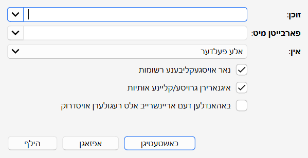
געפינען דאפלטע
מיט רשומות > געפין דאפלטע קען מען זוכן רשומות מיטן זעלבן אינהאלט. ביים עפענען דעם פענסטער קוקט אנקי אלע אייערע סארטן רשומה און ווייזט א ליסטע פון אלע מעגליכע פעלדער. צו זוכן דאפלטע אינעם הינטערשטן פעלד, קלייבט אים אויס און דריקט זוך.
אלס ברירת מחדל זוכט מען אין אלע סארטן רשומה מיט דעם געבעטן פעלד. דאס איז אנדערש פון דער דאפלט בדיקה ביים אליין צולייגן קארטלעך, וואס איז באגרעניצט צו איין סארט רשומה.
דער אפציאנעלער פילטער פעלד באגרעניצט וואו אנקי זוכט דאפלטע. אויב איר ווילט זוכן נאר אין “01שאלה רגילה” און “בסיסי”, שרייבט:
"note:01שאלה רגילה" or "note:בסיסי"
אדער, צו זוכן דאפלטע נאר אין א געוויסן פעקל, נוצט:
"deck:עירובין"
דער זוך סינטאקס איז דער זעלבער ווי אינעם דורכבלעטערער. פאר מער, זעט זוכן.
דריקט אויף איינעם פון די לינקס אין דער רעזולטאט ליסטע צו ווייזן די דאפלטע רשומות אין דער זעלבער גרופע. אויב די זוכעניש ברענגט אסאך דאפלטע, קענט איר דריקן לייג א צעטל אויף דאפלטע, וואס לייגט די צעטל duplicate אויף אלע פאסיגע רשומות. דערנאך זוכט די צעטל אינעם דורכבלעטערער און באהאנדלט אלע פון איין עקראן.
טוישן און איבערבייטן פעלד אינהאלט
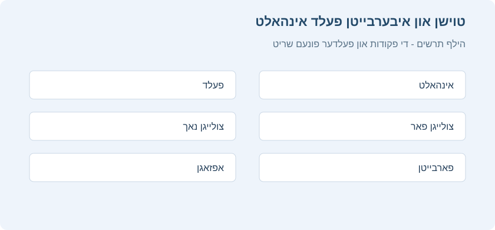
צו טוישן דעם אינהאלט פון אסאך רשומות אויף איינמאל, קלייבט אויס די געוואונטשענע רשומות און דריקט זוכן און איבערבייטן > טוישן און איבערבייטן פעלד אינהאלט. אינעם פענסטער קען מען צולייגן אינהאלט צו די געוואונטשענע פעלדער אין אלע אויסגעקליבענע קארטלעך/רשומות, פאר אדער נאך דעם ביז יעצטיגן טעקסט אין יעדן פעלד, אדער אים איבערבייטן.
געפילטערטע פעקלעך און שטארקער שינון
אינהאלט
ווען איר לערנט א געווענליכן פעקל אין אנקי, ווערט נאר געוויזן א באגרעניצטער צאל קארטלעך: די קארטלעך וואס אנקי האלט אז איר גייט פארגעסן, און א טעגליכע גרענעץ פון נייע קארטלעך. דאס איז געווענליך נוצליך, ווייל עס מאכט אז איר זאלט נישט נוצן מער לערנען צייט ווי נויטיג. אבער אמאל איז כדאי ארויסצוגיין פון די געווענליכע גרענעצן, למשל צו חזרן חומר פאר א בחינה אדער זיך קאנצענטרירן אויף א געוויסן חומר. דערפאר גיט אנקי א באזונדערן סארט פעקל מיטן נאמען “געפילטערטער פעקל”.
געפילטערטע פעקלעך געבן אסאך מעגליכקייטן: פאראויס זען קארטלעך, שטארק איבערחזרן פאר א בחינה, לערנען געוויסע צעטלעך, נאכהאלן פארשפעטיגטע חזרות אין א געוויסן סדר, מקדים זיין חזרה, איבערגיין די קארטלעך וואס איר האט נישט געקענט אין יענעם טאג, און נאך.
אייגענע לערנען
דער גרינגסטער וועג צו שאפן א געפילטערטן פעקל איז מיטן “אייגענע לערנען” קנעפל אינעם מעניו וואס עפנט זיך ביים דרוקן מיטן רעכטן מייז קנעפל אויף א פעקל. עס גיט פארגרייטע פילטערס פאר געווענליכע פעולות, ווי חזרן די קארטלעך וואס איר האט נישט געקענט היינט. עס שאפט א געפילטערטן פעקל מיטן נאמען “אייגענע לערן רונדע” און עפנט אים אויטאמאטיש.
אויב א פעקל מיטן נאמען “אייגענע לערן רונדע” איז שוין דא, ווערט ער אויסגעליידיגט פארן שאפן א נייעם. צו האלטן אן אייגענעם לערנען פעקל, טוישט זיין נאמען אין דער פעקלעך ליסטע.
דא איז א סיכום פון די אויסוואלן:
פארגרעסערן היינט’ס גרענעץ פון נייע קארטלעך
לייגט צו נאך נייע קארטלעך צום פעקל וואס איר לערנט יעצט. אנדערש פון די אנדערע אויסוואלן, שאפט דאס נישט קיין נייעם געפילטערטן פעקל, נאר טוישט דעם עקזיסטירנדן פעקל.
פארגרעסערן היינט’ס חזרה גרענעץ
אויב נישט אלע חזרות פאר היינט זענען געוויזן געווארן צוליב דער טעגליכער גרענעץ, לאזט דער אויסוואל ווייזן מער פון זיי. ווי ביים אויסוואל פאר נייע קארטלעך, טוישט דאס דעם עקזיסטירנדן פעקל.
חזרה אויף פארגעסענע קארטלעך
ווייזט אלע קארטלעך אויף וועלכע איר האט געענטפערט “נאכאמאל” (1) אין דעם צאל טעג וואס איר שרייבט אריין.
חזרן פאר דער צייט
ווייזט קארטלעך וואס וועלן ווערן גרייט צו חזרה בקרוב (אין דעם צאל טעג וואס איר שרייבט אריין). דאס העלפט איבערגיין א טייל אלטע קארטלעך פאר א רייזע, אבער וועט נישט העלפן פאר קארטלעך וואס איר האט ערשט לעצטנס געלערנט. זעט ווייטער חזרן פאר דער צייט פאר מער אינפארמאציע.
פאראויס זען נייע קארטלעך
ווייזט קארטלעך וואס איר האט לעצטנס צוגעלייגט, אן זיי צו מאכן חזרה קארטלעך ווען מען ענטפערט.
לערנען לויט קארטל צושטאנד אדער צעטל
קלייבט א געוויסן צאל קארטלעך פונעם יעצטיגן פעקל צום לערנען. מען קען אויסקלייבן נאר נייע קארטלעך, נאר קארטלעך גרייט צו חזרה, אדער אלע קארטלעך. נאכן דרוקן “אויסקלייבן צעטלעך”, קען מען אויך באגרעניצן די בחירה לויט צעטלעך. צו זען אלע קארטלעך אינעם פעקל (למשל פאר א גרויסע בחינה), שטעלט דעם צאל קארטלעך העכער פון דעם צאל קארטלעך אינעם פעקל.
היים פעקלעך
ווען א קארטל גייט אריבער אין א געפילטערטן פעקל, בלייבט זיין פארבינדונג מיטן פעקל פון וועלכן עס איז געקומען. דער פריערדיגער פעקל הייסט דאס קארטל’ס “היים פעקל”.
קארטלעך גייען אויטאמאטיש צוריק אין זייער היים פעקל נאכן לערנען זיי אינעם געפילטערטן פעקל. דאס קען זיין נאך איין חזרה אדער עטליכע חזרות, לויט אייערע איינשטעלונגען.
מען קען אויך צוריקברענגען אלע קארטלעך אין זייערע היים פעקלעך אויף איינמאל:
-
דער “אויסליידיגן” קנעפל אינעם פעקל מעניו אדער סיכום פענצטער ברענגט אלע קארטלעך פונעם געפילטערטן פעקל צוריק אין זייער היים פעקל, אבער מעקט נישט אויס דעם ליידיגן געפילטערטן פעקל. דאס העלפט אויב איר ווילט אים שפעטער ווידער אנפילן מיט “איבערבויען”.
-
אויסמעקן א געפילטערטן פעקל טוט די זעלבע פעולה ווי “אויסליידיגן”, און נעמט אויך אראפ דעם ליידיגן פעקל פון דער פעקלעך ליסטע. קיין קארטל ווערט נישט אויסגעמעקט ביים אויסמעקן א געפילטערטן פעקל.
שאפן מיט דער האנט
פארגעשריטענע באניצער קענען שאפן געפילטערטע פעקלעך מיט אייגענע זוכן אויסדרוקן (“פילטערס”), אנשטאט די פארגרייטע פילטערס. צו שאפן א געפילטערטן פעקל מיט דער האנט, דרוקט פילטערט פראגעס
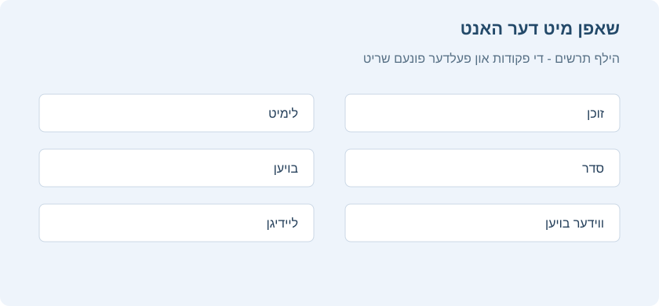
אויבן אויפן עקרן.ווען איר דרוקט “בויען”, געפינט אנקי קארטלעך וואס שטימען מיט אייערע איינשטעלונגען און ברענגט זיי צייטווייליג פון זייערע עקזיסטירנדע פעקלעך אין דעם נייעם געפילטערטן פעקל צום לערנען.
צו ווידער ברענגען קארטלעך מיט די זעלבע פילטער אויסוואלן (למשל, צו לערנען טעגליך אלע קארטלעך מיט א געוויסן צעטל), נוצט “איבערבויען” אינעם פעקל מעניו אויפן הויפט פענצטער אדער אונטן אינעם סיכום פענצטער.
דאס זוכן פעלד באשטימט וועלכע קארטלעך אנקי זאל נעמען. יעדעס זוכן פון דורכבלעטערן קען מען אויך נוצן פאר געפילטערטע פעקלעך, ווי באגרעניצן צו צעטלעך, געפינען קארטלעך וואס איר האט פארגעסן א געוויסן צאל מאל אא“וו. זעט זוכן אינעם מדריך פאר מער איבער די אויסוואלן.
נעבן דעם זוכן פעלד אינעם שאפן א געפילטערטן פעקל פענצטער איז דא פארגעשריטענע זוכעניש. דאס עפנט דעם פארגעשריטענעם זוכן בויער אין א שוועבנדיגן פענצטער. אריינלייגן אינעם זוכן פעלד ברענגט די שאילתא אינעם געפילטערטן פעקל’ס זוכן פעלד. אזוי קען מען בויען א קאמפליצירטן געפילטערטן פעקל לויט פעקל, צעטל, קארטל צושטאנד, פאן, דאטום אדער מאסן, אן צו שרייבן דעם זוכן סינטאקס מיט דער האנט.
געפילטערטע פעקלעך קענען נישט נעמען קארטלעך וואס זענען אפגעשטעלט, באזייטיגט ביז מארגן, אדער שוין אין אן אנדער געפילטערטן פעקל. דערפאר קען א זוכן אין דורכבלעטערן ווייזן קארטלעך וואס וועלן נישט אריינגיין אינעם געפילטערטן פעקל.
דער גרענעץ אויסוואל באשטימט וויפיל קארטלעך מען זאל נעמען. דער אויסגעקליבענער סדר באשטימט סיי וועלכע קארטלעך מען נעמט און סיי אין וועלכן סדר מען חזרט זיי. למשל, מיט “מערסטע פארגעסונגען” און א גרענעץ פון 20, וועט אנקי נאר ווייזן די 20 קארטלעך וואס איר האט דאס מערסטע פארגעסן.
אנצינדן א צווייטן פילטער לאזט שאפן א געפילטערטן פעקל פון צוויי פארשידענע זוכונגען. למשל, מען קען ארייננעמען קארטלעך גרייט צו חזרה אין איין סדר, און ווייניגער נייע קארטלעך אין אן אנדער סדר.
סדר
“קארטלעך ווערן אויסגעקליבן לויט” באשטימט דעם סדר ווי די קארטלעך וועלן קומען. אויב אייער מאקסימום צאל איז ווייניגער פון דעם צאל קארטלעך וואס שטימען מיטן פילטער, וועט אנקי ערשט אויסלאזן די קארטלעך פונעם סוף פון דער אויסגעשטעלטער ליסטע.
לאנגסטע צייט נישט געזען צום ערשטן
ווייזט ערשט די קארטלעך וואס איר האט די לענגסטע צייט נישט געחזרט.
צופעליג
מישט דעם סדר פון אלע קארטלעך וואס שטימען מיטן פילטער, אן א קבוע’ן סדר.
אפשטאנדן פון קליין צו גרויס
ווייזט ערשט די קארטלעך מיטן קלענסטן אפשטאנד.
אפשטאנדן פון גרויס צו קליין
ווייזט ערשט די קארטלעך מיטן גרעסטן אפשטאנד.
מערסטע פארגעסונגען
ווייזט ערשט די קארטלעך וואס איר האט די מערסטע מאל פארגעסן.
סדר פון צולייגן
ווייזט ערשט די קארטלעך וואס איר האט ערשט צוגעלייגט, דאס הייסט מיטן פריסטען שאפן דאטום.
חזרה דאטום
ווייזט ערשט די קארטלעך מיט דער פריסטער חזרה צייט.
לעצטנס צוגעלייגט
ווייזט ערשט די קארטלעך וואס איר האט לעצטנס צוגעלייגט צום פעקל. דאס איז פארקערט פון “סדר פון צולייגן”.
פארשפעטיגונג לויטן אפשטאנד
ווייזט ערשט די קארטלעך וואס איר האט מסתמא דאס מערסטע פארגעסן. דאס איז נוצליך ביי א גרויסן פארשפעטיגטן הויפן וואס וועט נעמען צייט נאכצוהאלן, כדי ווייניגער צו ריזיקירן פארגעסן נאך קארטלעך.
ביים SM-2 אלגאריטם באשטימט מען די פארשפעטיגונג דורכן פארגלייכן ווי פארשפעטיגט דאס קארטל איז מיט זיין אפשטאנד. למשל, א קארטל מיט א 5 טאג אפשטאנד וואס איז 2 טעג פארשפעטיגט, וועט קומען פאר א קארטל מיט א 10 טאג אפשטאנד וואס איז 3 טעג פארשפעטיגט.
שאנס צו געדענקען פון קליין צו גרויס / גרויס צו קליין\
מיט FSRS ווערט די פארשפעטיגונג גערעכנט לויטן שאנס צו געדענקען יעדעס קארטל און די געוואונטשענע געדענק ראטע אין די פעקל איינשטעלונגען.
טריט און חזרה
לויט דער ברירת מחדל נוצט אנקי די לערנען טריט פונעם קארטל’ס היים פעקל. אויב א נייעם קארטל דארף געווענליך צוויי חזרות ביים לערנען, וועט דאס אויך זיין אזוי אינעם געפילטערטן פעקל. פאר מער איבער לערנען און איבערלערנען טריט, זעט פעקל אויסוואלן.
קארטלעך גייען צוריק אין זייער היים פעקל ווען לערנען אדער איבערלערנען איז פארטיג. דעריבער, מיט 3 לערנען טריט גייט א נייעם קארטל צוריק נאך דריי דרוקן אויף “גוט” אדער איין דרוק אויף “גרינג”.
געפילטערטע פעקלעך אן ניי באשטימען א צייט פלאן ווייזן 4 קנעפלעך. פאר נאכאמאל, שווער און גוט קען מען באשטימען אפשטאנדן. גרינג נעמט אראפ קארטלעך פונעם געפילטערטן פעקל.
חזרות וועמענס צייט איז אנגעקומען
אויב דער געפילטערטער פעקל אנטהאלט קארטלעך גרייט צו חזרה, ווערן זיי געוויזן ווי אין זייער אריגינעלן פעקל: זיי שטייען אינעם חזרה צאל אונטן, און עס זענען דא פיר אויסוואלן לויט וויפיל איר געדענקט. נאך א ריכטיגן ענטפער גייט דאס קארטל צוריק אין זיין היים פעקל, און זיין קומענדיגע חזרה צייט ווערט באשטימט לויט די היים פעקל איינשטעלונגען. אויב איר פארגעסט דאס קארטל, קומט עס לויט די איבערלערנען טריט פונעם היים פעקל.
חזרן פאר דער צייט
אויב אייער זוכן נעמט אריין קארטלעך וועמענס חזרה צייט איז נאכנישט אנגעקומען, וועט אנקי זיי ווייזן פריער.
אנקי נוצט פאר די חזרות א באזונדערן אלגאריטם וואס נעמט אין חשבון ווי פרי איר חזרט. אויב די קארטלעך זענען געווען נאענט צו זייער באשטימטער צייט, וועלן זיי באקומען א נייעם אפשטאנד ענליך צו דעם וואס זיי וואלטן באקומען ביים חזרן אין דער צייט. אבער ווען מען חזרט באלד נאך וואס זייער צייט איז באשטימט געווארן, וועט דער נייער אפשטאנד זיין ענליך צום פריערדיגן. די חשבון רוקט זיך שטופנווייז צווישן די צוויי עקן.
חזרן א קארטל באלד נאך וואס מען האט באשטימט זיין צייט ווירקט ווייניג אויפן צייט פלאן. למשל, א קארטל פאר מארגן מיט א איין טאג אפשטאנד וועט בלייבן פאר מארגן אפילו מען חזרט עס פריער. דערפאר איז “חזרן פאר דער צייט” ביי אייגענע לערנען נישט פאסיג פאר כסדר’דיגן באנוץ. אויב איר נוצט עס צו חזרן א גאנצע וואך’ס קארטלעך פאר א רייזע, וועלן די באפעסטיגטע קארטלעך באקומען שפעטערדיגע צייטן, און די נייע וועלן בלייבן מיט קורצע אפשטאנדן, ווייל איר קענט זיי נאכנישט גענוג גוט צו שטופן ווייטער. אויב איר טוט דאס ווידער צומארגנס, וועט איר נאר איבערגיין די זעלבע נייע קארטלעך אן פיל תועלת.
ניי באשטימען דעם צייט פלאן
לויט דער ברירת מחדל ברענגט אנקי די קארטלעך צוריק אין זייערע היים פעקלעך מיט א צייט פלאן וואס איז געטוישט לויט אייערע רעזולטאטן אינעם געפילטערטן פעקל.
צו טוישן דעם וועג, לעשט אויס ניי באשטימען חזרה צייטן לויט מיינע ענטפערס אין דעם פעקל. ווען דער אויסוואל איז אויסגעלאשן, ווערן די קארטלעך געוויזן אין א פשוטן “פאראויסווייזונג” מצב. ווען זיי גייען צוריק אין זייער אריגינעלן פעקל, זענען זיי פונקט ווי זיי זענען געווען ביים אנהייב.
נאכהאלן פארשפעטיגטע חזרות
געפילטערטע פעקלעך קענען העלפן נאכצוהאלן חזרות ווען איר זענט הינטערשטעליג.
אונטן ערקלערט אן אנקי באניצער ווי ער נוצט געפילטערטע פעקלעך צו נאכהאלן פארשפעטיגטע חזרות.
אין דער אנקי לזכרון הלימוד אויסגאבע קען מען דאס גרינג טון דורך דרוקן אויף דעם געלן אדער טורקיז טייל פון דער אינפארמאציע לייסט אויבן לינקס אינעם פעקלעך פענצטער.
איך האב דאס געטון פאר א הויפן פון 800 פארשפעטיגטע קארטלעך מיט געפילטערטע אונטערפעקלעך. עס האט
זייער גוט געארבעט פאר מיר.
א "ערשט יעצט גרייט" פילטער מיט: "is:due prop:due>-7"
א "פארשפעטיגט" פילטער מיט: "is:due prop:due<=-7"
דער "ערשט יעצט גרייט" פעקל וועט אנטהאלטן קארטלעך וואס זענען געווארן גרייט צו חזרה אין דער לעצטער
וואך. דעם פעקל דארף מען לערנען טעגליך, ווייל ער באקומט די קארטלעך וואס ווערן
כסדר גרייט. דערמיט קען מען לערנען ווי עס וואלט נישט געווען קיין
פארשפעטיגטער הויפן.
דער "פארשפעטיגט" פעקל וועט אנטהאלטן אייער הויפן פון קארטלעך וואס איר האט נישט געלערנט אין דער צייט.
מען קען זיי לערנען אזוי ווי נייע קארטלעך. זיי גייען צוריק צו די
געווענליכע קארטלעך, אזוי אז דער צאל פארשפעטיגטע קארטלעך וועט נישט וואקסן
כל זמן איר האלט דעם "ערשט יעצט גרייט" פעקל אונטער קאנטראל.
וויפיל צייט דאס נעמט ווענדט זיך אין וויפיל פארשפעטיגטע קארטלעך איר לערנט יעדן טאג
אויסער די וואס ווערן כסדר גרייט. איר קענט זיי נאך אלץ שטארק
איבערחזרן ווען איר ווילט, אדער לערנען א באשטימטן צאל א טאג אזוי ווי
ביי נייע קארטלעך. דאס איז אייער בחירה.
זוכן
אינהאלט
- פשוטע זוכונגען
- באגרעניצן צו א פעלד
- צעטלעך, פעקלעך, קארטלעך און רשומות
- איגנארירן ניקוד און צוזאמענגעשטעלטע צייכנס
- רעגולערע אויסדרוקן
- קארטל צושטאנד
- פאנען
- קארטל אייגנשאפטן
- לעצטע געשעענישן
- צוגעלייגט
- רעדאקטירט
- געענטפערט
- צום ערשטן מאל געענטפערט
- טרעפן באזונדערע צייכנס
- רויע אריינגאבע
- אידענטיפיקאציע נומערן (ID)
- אנדערע זוכונגען
אנקי’ס “דורכבלעטערן” פענצטער און “געפילטערטער פעקל” נוצן דעם זעלבן וועג צו זוכן באזונדערע קארטלעך / רשומות. מען קען עס אויך נוצן צו צופאסן דעם FSRS פארבעסערונג פארנעם אין די פעקל אויסוואלן.
פשוטע זוכונגען
ווען איר שרייבט טעקסט אינעם זוכן פעלד, געפינט Anki די פאסיגע רשומות און ווייזט זייערע קארטלעך. Anki זוכט אין אלע פעלדער פון די רשומות, אבער נישט אין צעטלעך. זעט ווייטער אין דעם טייל ווי צו זוכן צעטלעך. עטליכע ביישפילן:
בגד
זוכט דעם ווארט “בגד”; עס טרעפט אויך ווערטער ווי “בגדים” און “לבגד”.
בגד פשתים
געפינט רשומות וואס אנטהאלטן סיי “בגד” און סיי “פשתים”, למשל “בגד צמר או בגד פשתים”.
בגד or צמר
געפינט רשומות וואס אנטהאלטן “בגד” אדער “צמר”.
בגד (צמר or פשתים)
געפינט רשומות וואס אנטהאלטן “בגד” מיט “צמר”, אדער “בגד” מיט “פשתים”.
-צמר
געפינט רשומות וואס אנטהאלטן נישט “צמר “.
-צמר -פשתים
געפינט רשומות וואס אנטהאלטן נישט “צמר “ און נישט “פשתים”.
-(צמר or פשתים)
די זעלבע ווי דער פריערדיגער ביישפיל.
"את הבגד"
געפינט רשומות מיטן גענויען רצף צייכנס “את הבגד”, למשל “ואת הבגד”, אבער נישט “לבגד” אדער “והבגד “.
-"את הבגד "
געפינט רשומות וואס אנטהאלטן נישט דעם גענויען רצף צייכנס “את הבגד “.
ב_ד
געפינט רשומות מיט ב, איין צייכן און ד, ווי בגד, בדד, ברד אא“וו.
ב*ד
געפינט רשומות מיט ב, נול אדער מער צייכנס און ד, ווי בד, ברד, בערד אא“וו.
w:בגד
זוכט דעם גאנצן ווארט “בגד “ אנשטאט סתם א רצף צייכנס. עס טרעפט “בגד “, אבער נישט “בגדים” אדער “והבגד”. ענדערונגען אינעם אויסשטעל קענען ווערן באהאנדלט ווי ווארט גרענעצן. למשל, w:בגד טרעפט והבגדים, ווייל דער “בגד” טייל אינעם ווארט איז אין פעטן דרוק.
w:בגד*
טרעפט “בגד” און “בגדים”, אבער נישט “והבגד”.
w:*בגד
טרעפט “בגד” און “והבגד”, אבער נישט “בגדים”.
עטליכע פרטים צו באמערקן פון די אויבנדערמאנטע ביישפילן:
-
זוכן ווערטער ווערן צעטיילט מיט רווחים.
-
ווען עס זענען דא עטליכע זוכן ווערטער, זוכט Anki רשומות וואס שטימען מיט אלע ווערטער. עס ווערט אויטאמאטיש צוגעלייגט אן
andצווישן די ווערטער. מען קען עס אויך שרייבן בפירוש (צמר and בגדאיז וויצמר בגד), אבער עלטערע Anki ווערסיעס וועלן באהאנדלעןandווי נאך א ווארט צו זוכן. -
מען קען נוצן
orווען גענוג איז אז נאר איינס פון די ווערטער זאל זיך געפינען. -
מען קען צולייגן א מקף (
-) פאר א זוכן ווארט צו געפינען רשומות וואס אנטהאלטן נישט דעם ווארט. -
מען קען גרופירן זוכן ווערטער מיט קלאמערן, ווי
בגד (צמר or פשתים). דאס איז וויכטיג ביים צונויפמישן OR און AND זוכונגען. מיט די קלאמערן טרעפט דער ביישפיל “בגד צמר “ אדער “בגד פשתים”; אן די קלאמערן וואלט עס געפונען “בגד צמר “ אדער “פשתים”. -
Anki קען זוכן איבער אויסשטעל גרענעצן נאר אינעם סארטיר פעלד וואס איר האט באשטימט. למשל, אויב איר לייגט “בגדים” אין א פעלד מיט “בגד” אין פעטן דרוק, וועט עס נישט ווערן געפונען מיט
בגדים, חוץ אויב יענער פעלד איז דער סארטיר פעלד. אויב א ווארט האט נישט קיין באזונדערן אויסשטעל, אדער דער אויסשטעל טוישט זיך נישט אין מיטן ווארט, קען Anki עס געפינען אין יעדן פעלד. -
געווענליכע זוכונגען מאכן נישט קיין חילוק צווישן גרויסע און קליינע לאטיינישע אותיות: a-z טרעפט A-Z און פארקערט. אנדערע אותיות, ווי קירילישע, ווערן באהאנדלט מיט א חילוק צווישן גרויס און קליין אין א געווענליכן זוכן. מען קען זיי אבער זוכן אן דעם חילוק מיט ווארט גרענעצן אדער א רעגולערן אויסדרוק (
w:,re:).
באגרעניצן צו א פעלד
מען קען אויך בעטן Anki צו טרעפן נאר ווען א געוויסער פעלד אנטהאלט טעקסט. אנדערש פון די פריערדיגע ביישפילן, פאדערט א פעלד זוכן לויט דער ברירת מחדל א גענויע צופאסונג.
מקור:קפג
געפינט רשומות מיט א פעלד מיטן נאמען “מקור” וואס איז גענוי “קפג”. א פעלד מיט “סימן קפג” וועט נישט שטימען.
"מסכת ודף:יבמות ה"
געפינט רשומות וואו דאס “מסכת ודף” פעלד איז גענוי “יבמות ה”. די טאפלטע גענזעלעך זענען נויטיג; זעט ווייטער אין דעם טייל.
מקור:*קפג*
געפינט רשומות וואו דאס מקור פעלד אנטהאלט קפג ערגעץ, און דעריבער טרעפט עס אויך “סימן קפג”.
מקור:
געפינט רשומות מיט א ליידיגן מקור פעלד.
מקור:_*
געפינט רשומות מיט א מקור פעלד וואס איז נישט ליידיג.
מקור:*
געפינט רשומות וואס האבן א מקור פעלד, צי ליידיג צי נישט.
מק*:טקסט
געפינט רשומות אין א פעלד וועמענס נאמען הייבט זיך אן מיט “מק”.
צעטלעך, פעקלעך, קארטלעך און רשומות
tag:ברכות
געפינט רשומות מיטן צעטל “ברכות”, אדער אונטערצעטלעך ווי “ברכות::ברכות_הריח”.
tag:none
געפינט רשומות אן צעטלעך.
tag:ברכ*
געפינט רשומות מיט צעטלעך וואס הייבן זיך אן מיט “ברכ”.
deck:מכות
געפינט קארטלעך אין א פעקל אויפן אויבערשטן שטאפל מיטן נאמען “מכות”, אדער אין זיינע אונטערפעקלעך ווי “מכות::אלו הן הלוקין”. דער זוכן טרעפט נישט אונטערפעקלעך מיטן זעלבן נאמען, ווי “שס::מכות”.
deck:שס::מכות
געפינט קארטלעך אינעם אונטערפעקל “שס::מכות”.
deck:מכות -deck:מכות::*
געפינט קארטלעך אין “מכות”, אבער נישט אין זיינע אונטערפעקלעך.
deck:"אלו הן הלוקין"
א זוכן ווען דער פעקל נאמען האט א רווח.
"deck:אלו הן הלוקין"
די זעלבע ווי דער פריערדיגער ביישפיל.
deck:filtered
נאר געפילטערטע פעקלעך.
-deck:filtered
נאר געווענליכע פעקלעך.
preset:"Default"
קארטלעך אין אלע פעקלעך וואס נוצן די [פעקל פאראיינשטעלונג](deck-options.md#קבוצת הגדרות) “Default”.
card:בסיסי
געפינט קארטלעך געשאפן דורך א סארט קארטל מיטן נאמען “בסיסי”.
card:1
זוכט קארטלעך לויטן נומער פונעם קארטל סארט. למשל, צו געפינען דעם צווייטן באהאלטענעם אויסלאז ביי א רשומה פון פילט אויס דאס אויסגעלאזטע, נוצט card:2.
note:בסיסי
זוכט קארטלעך געשאפן מיט א סארט רשומה מיטן נאמען “בסיסי”.
איגנארירן ניקוד און צוזאמענגעשטעלטע צייכנס
מען קען נוצן nc: (א קורצונג פון “no combining”) כדי Anki זאל איגנארירן צוזאמענגעשטעלטע צייכנס, ווי ניקוד און טעמי המקרא. למשל:
nc:ויאמר
טרעפט רשומות מיט “ויאמר”, “וַיֹּ֨אמֶר֙”, “וַיֹּאמֶר” אא“וו.
זוכונגען וואס איגנארירן צוזאמענגעשטעלטע צייכנס זענען לאנגזאמער פון געווענליכע זוכונגען.
אין די איינשטעלונגען קען מען דאס מאכן די ברירת מחדל, אויך אן דעם פרעפיקס.
רעגולערע אויסדרוקן
פאר פארגעשריטענע באניצער:
Anki שטיצט זוכן אין רשומות מיט “רעגולערע אויסדרוקן”, א געווענליכן און שטארקן וועג צו זוכן אין טעקסט.
הייבט אן א זוכן מיט re: צו נוצן רעגולערע אויסדרוקן. כדי עס גרינגער צו מאכן, וועט Anki באהאנדלען דעם אריינגעשריבענעם טעקסט אלס [רויע אריינגאבע](#קלט גולמי). געדענקט דערפאר די כללים וואס שטייען דארט.
עטליכע פרטים צו באמערקן:
- לויט דער ברירת מחדל מאכט דער זוכן נישט קיין חילוק צווישן גרויסע און קליינע אותיות. לייגט
(?-i)ביים אנהייב צו מאכן דעם חילוק. - א טייל צייכנס, ווי רווחים און נייע שורות, קענען זיין אויסגעדרוקט אנדערש אין HTML. מען קען נוצן דעם HTML רעדאקטאר אינעם רעדאקטירן פענצטער צו זען דעם אונטערליגנדן HTML אינהאלט.
קארטל צושטאנד
is:due
חזרה און לערנען קארטלעך וואס ווארטן צום לערנען.
is:new
נייע קארטלעך.
is:learn
קארטלעך ביים לערנען.
is:review
חזרה קארטלעך, סיי גרייט צו חזרה און סיי נאכנישט, און קארטלעך וואס מען האט פארגעסן.
is:suspended
קארטלעך וואס זענען אפגעשטעלט אויטאמאטיש אדער מיט דער האנט.
is:buried
קארטלעך וואס זענען באזייטיגט ביז מארגן אויטאמאטיש אדער מיט דער האנט.
is:buried-sibling
קארטלעך וואס זענען אויטאמאטיש באזייטיגט ביז מארגן.
is:buried-manually
קארטלעך וואס זענען באזייטיגט ביז מארגן מיט דער האנט.
קארטלעך וואס מען האט פארגעסן קענען זיין אין עטליכע פון די אויבנדערמאנטע קאטעגאריעס. דערפאר קען העלפן צונויפשטעלן זוכן ווערטער פאר גענויערע רעזולטאטן:
is:learn is:review
קארטלעך וואס מען האט פארגעסן און ווארטן צום איבערלערנען.
-is:learn is:review
חזרה קארטלעך, אן די קארטלעך וואס מען האט פארגעסן.
is:learn -is:review
קארטלעך ביים ערשטן מאל לערנען.
פאנען
flag:1
קארטלעך מיט א רויטן פאן.
flag:2
קארטלעך מיט אן אראנזשן פאן.
flag:3
קארטלעך מיט א גרינעם פאן.
flag:4
קארטלעך מיט א בלויען פאן.
flag:5
קארטלעך מיט א ראזע פאן.
flag:6
קארטלעך מיט א טורקיז פאן.
flag:7
קארטלעך מיט א לילא פאן.
קארטל אייגנשאפטן
אין די אויסוואלן פון דעם טייל וואס רעדן וועגן יעצט און די צוקונפט, מיינט ‘0’ היינט, 1 מארגן, 2 איבערמארגן, -1 נעכטן אא“וו.
prop:ivl>=10
קארטלעך מיט אן אפשטאנד פון 10 טעג אדער מער.
prop:due=1
קארטלעך באשטימט פאר מארגן.
prop:due=-1
קארטלעך באשטימט פאר נעכטן וואס מען האט נאך נישט געענטפערט.
prop:due>=1
אלע קארטלעך באשטימט פאר דער צוקונפט, אריינגערעכנט מארגן.
prop:due<=-1
אלע קארטלעך וועמענס צייט איז שוין פארביי.
prop:due>=-1 prop:due<=1
קארטלעך באשטימט פאר נעכטן, היינט און מארגן.
prop:reps<10
קארטלעך וואס מען האט געענטפערט ווייניגער פון 10 מאל.
prop:lapses>3
קארטלעך וואס מען האט פארגעסן מער פון 3 מאל.
prop:ease!=2.5
קארטלעך גרינגער אדער שווערער פון דער פעליקייט גרינגקייט.
די פאלגנדע זוכונגען פאדערן אז FSRS זאל זיין אנגעצונדן:
prop:s>21
קארטלעך מיט פעסטקייט (stability) העכער פון 21 טעג.
prop:d>0.3
קארטלעך מיט שוועריגקייט (difficulty) העכער פון 0.3.
prop:r<0.9
קארטלעך מיט א שאנס צו געדענקען (retrievability) נידריגער פון 0.9.
לעצטע געשעענישן
אין די אויסוואלן פון דעם טייל וואס רעדן וועגן יעצט און דער פארגאנגענהייט, מיינט 1 היינט, 2 היינט און נעכטן אא“וו.
צו ווייזן נאר א געוויסן טאג, מוז מען אויסשליסן אלע טעג נאך אים. למשל, נאר צו ווייזן וואס איז נעכטן צוגעקומען, שרייבט
added:2 -added:1.
צוגעלייגט
added:1
קארטלעך צוגעלייגט היינט.
added:7
קארטלעך צוגעלייגט אין די לעצטע 7 טעג.
מען קוקט לויט דער צייט ווען דאס קארטל איז געשאפן געווארן, נישט ווען די רשומה איז געשאפן געווארן. דעריבער ווערן קארטלעך געשאפן אין דער תקופה אריינגערעכנט, אפילו זייערע רשומות זענען שוין לאנג דא.
רעדאקטירט
edited:X
קארטלעך וואו דער רשומה טעקסט איז צוגעלייגט אדער רעדאקטירט געווארן אין די לעצטע X טעג.
געענטפערט
rated:1
קארטלעך געענטפערט היינט.
rated:1:2
קארטלעך געענטפערט “שווער” (2) היינט.
rated:7:1
קארטלעך געענטפערט “נאכאמאל” (1) אין די לעצטע 7 טעג.
rated:31:4
קארטלעך געענטפערט “גרינג” (4) אין די לעצטע 31 טעג.
Anki שטיצט אפשאצונג זוכונגען פאר מער פון 31 טעג.
ביים זוכן קארטלעך געענטפערט אין א געוויסן טאג קען rated:n -rated:(n-1) נישט שטענדיג ארבעטן. נוצט אנשטאט דעם די פאלגנדע זוכונגען:
prop:rated=0
קארטלעך געענטפערט היינט.
prop:rated=-1
קארטלעך געענטפערט מיט איין טאג צוריק.
prop:rated=-7
קארטלעך געענטפערט מיט 7 טעג צוריק.
צום ערשטן מאל געענטפערט
introduced:1
קארטלעך צום ערשטן מאל געענטפערט היינט.
introduced:365
קארטלעך צום ערשטן מאל געענטפערט אין די לעצטע 365 טעג.
טרעפן באזונדערע צייכנס
ווי אויבן געוויזן, האבן געוויסע צייכנס ווי *, _ און " א באזונדערן באדייט ביים זוכן. צו זוכן די צייכנס אליין, מוז מען זאגן Anki זיי נישט צו באהאנדלען באזונדער. דאס הייסט “escape פאר א צייכן”, און מען טוט עס בעיקר מיט טאפלטע גענזעלעך און צוריקגעקערטע שרעג שטריכן.
-
רווח
צו טרעפן עפעס מיט רווחים, נעמט ארום"כל המונח"מיט טאפלטע גענזעלעך. ביי א זוכן מיט א צווייפינטל, קען מען אויך ארומנעמען נאר דעםחלק:"שאחרי הנקודתיים". -
And/Or
צו זוכן די ווערטער, נעמט זיי ארום מיט טאפלטע גענזעלעך. למשל,i "and" uזוכט “i”, “u” און דעם ווארט “and”. אויב דער גאנצער זוכן אויסדרוק איז ארומגענומען מיט גענזעלעך ווי אינעם פריערדיגן ביישפיל, דארף מען נישט מאכן escape פארandאדערor. -
",*און_
לייגט א צוריקגעקערטן שרעג שטריך פאר די צייכנס כדי זיי צו זוכן ווי זיי זענען אליין. למשל,_טרעפט יעדן איינציגן צייכן, אבער\_טרעפט נאר אן אמת’ן אונטערשטריך. -
\
א צוריקגעקערטער שרעג שטריך נעמט אראפ דעם באזונדערן באדייט פון אנדערע צייכנס, און ווערט דעריבער אויך באהאנדלט באזונדער. צו זוכן דעם שרעג שטריך אליין, נוצט\\אנשטאט\. -
(און)
מען קען זוכן קלאמערן דורך ארומנעמען דעם גאנצן אויסדרוק מיט גענזעלעך, דורך א צוריקגעקערטן שרעג שטריך, אדער ביידע צוזאמען. למשל,"(תוכן)",\(תוכן\)און"\(תוכן\)"זענען גלייכע זוכונגען און טרעפן(תוכן). -
-
א זוכן ווארט וואס הייבט זיך אן מיט-ווערט געווענליך אויסגעשלאסן: למשל,-צמרטרעפט אלעס חוץ צמר. צו זוכן א מקף אליין, נוצט א צוריקגעקערטן שרעג שטריך אדער נעמט ארום דעם טעקסט מיט גענזעלעך. למשל,\-שעריאדער"-שערי"טרעפן “שערי-תשובה” און “שערי-ארמון”. -
:
מען מוז מאכן escape פאר א צווייפינטל מיט א צוריקגעקערטן שרעג שטריך, חוץ אויב עס קומט פריער אן אנדער צווייפינטל אן escape. למשל,w:3:30זוכט “3:30” ביי א ווארט גרעניץ און דארף נישט קיין שרעג שטריך. אבער אן א זוכן מיט א צווייפינטל, דארף מען אזוי מאכן escape:3\:30. -
&,<און>
Anki באהאנדלט&,<און>אלס HTML ביים זוכן, און זוכונגען מיט זיי ארבעטן דעריבער נישט ווי ערווארטעט. מען קען זיי אבער זוכן מיט זייערע HTML נעמען (&פאר&,<פאר<און>פאר>). למשל,&תוכןזוכט א רשומה מיט&תוכןאינעם פעלד.
רויע אריינגאבע
טעקסט נאך געוויסע שליסל ווערטער (ווי re:) ווערט באהאנדלט אלס רויע אריינגאבע. דאס מיינט אז די אויבנדערמאנטע צייכנס פארלירן רוב פון זייער באזונדערן באדייט. מען דארף דא נאר א ביסל escape צו פארמיידן אומקלארקייט:
-
מען מוז מאכן escape פאר טאפלטע גענזעלעך (
"). -
ביי רווחים און קלאמערן אן escape דארף דער גאנצער זוכן אויסדרוק זיין ארומגענומען מיט גענזעלעך.
-
דער זוכן אויסדרוק קען זיך נישט ענדיגן מיט אן אומפאריגן צאל צוריקגעקערטע שרעג שטריכן.
אידענטיפיקאציע נומערן (ID)
nid:123
די רשומה מיטן רשומה ID 123.
cid:123,456,789
אלע קארטלעך מיט קארטל ID 123, 456 אדער 789.
מען קען געפינען רשומה און קארטל ID אינעם קארטל אינפארמאציע פענצטער אין דורכבלעטערן.
אנדערע זוכונגען
prop:due=1 is:learn
לערנען קארטלעך וואס גייען איבער א טאג גרעניץ און זענען באשטימט פאר מארגן.
prop:due=0 is:learn -introduced:1
לערנען קארטלעך וואס גייען איבער א טאג גרעניץ און זענען באשטימט פאר היינט.
prop:resched=0
קארטלעך וועמענס צייט פלאן איז היינט ניי באשטימט געווארן דורך שטעלן א חזרה דאטום אדער ניי באשטימען חזרה צייטן ביים טוישן.
דער שאלות-מאגר
אינהאלט
דער שאלות-מאגר לאזט אייך צולייגן שאלות פונעם איינגעבויטן מאגר, אן אליין שרייבן די שאלות. מען עפנט אים דורכן הויפט-מעניו מיט דער שאלות-מאגר.
אויסקלויבן חומר צום אימפארטירן
אינעם מאגר-פענצטער וועט איר זען א בוים פון מאגרים, מסכתות, רבנים אדער נושאים, לויט דער אויסגעקליבענער תצוגה. נוצט דאס זוכן-פעלד צו פארקלענערן די ליסטע. איר קענט אריינשרייבן עטליכע ווערטער; דער מאגר וועט ווייזן נאר די פריטים וואס זייער פאט שטימט מיטן זוכווארט.
איר קענט אנצייכענען עטליכע פיילס אדער נושאים אויפאמאל. אויב איר ענדערט די זוכעניש נאכן אנצייכענען פריטים, בלייבט דער אנצייכענונג אפגעהיטן. אזוי קענט איר זאמלען שאלות פון עטליכע ערטער און הערשט דערנאך באשטעטיגן דעם אימפארט. אויבן אינעם פענצטער איז אויך דא א לינק אן הסבר אויף די פארשידענע מאגרים, פאר ווער עס וויל פארשטיין וואס פאר א חומר יעדער מאגר אנטהאלט.
די ברירות פארן באשטעטיגן
איידער איר דרוקט באשטעטיגן, גייט איבער די ברירות אונטן אינעם פענצטער:
- צעטיילן דעם מאגר לויט פרקים אין ש“ס אדער ענינים אין שו“ע: סדר’ט דעם חומר לויט לימוד-יחידות.
- צונויפשטעלן לויט מסכת: ענדערט דעם בוים, כדי מען זאל אויסקלויבן לויט מסכת אנשטאט לויט רב. דאס ווירקט אויך אויפן פאט וואו די שאלות ווערן אימפארטירט.
- אימפארטירן אויך שאלות וואס זענען שוין דא: נוצט דאס נאר ווען איר ווילט בכוונה שאפן נאך קאפיעס. געווענליך איז בעסער עס צו לאזן אויסגעלאשן.
- א כפילות ווערט באשטימט לויט: באשטימט צי מען דערקענט כפילויות לויטן סארט רשומה אליין, אדער לויט א צוזאמשטעל פון פעקל און סארט רשומה.
- אין דעם ש“ס-פעקל אדער אין דעם דף-היומי-פעקל: אינעם ש“ס-מאגר קענט איר אויסקלויבן וואו דער חומר זאל אריינגיין.
- אויסקלויבן וועלכע שאלות צו אימפארטירן: עפנט נאך א שריט, וואו מען קלויבט באזונדערע שאלות פון די אנגעצייכנטע פיילס.
- אימפארטירן אלע שאלות פון די אנגעצייכנטע פיילס: אימפארטירט דעם גאנצן אויסגעקליבענעם חומר, אן נאך א אויסקלויב-שריט.
- ווייזן א באריכט צום סוף: מען ראט דאס צו לאזן אנגעצונדן, כדי צו זען וואס איז אימפארטירט געווארן און וואס איז איבערגעהיפט געווארן.
אימפארטירן לויטן דף היומי
אינעם מאגר-פענצטער איז דא א קנעפל אויטאמאטיש אימפארטירן לויטן דף היומי. דארט קענט איר איינשטעלן אז שאלות זאלן אריינקומען לויטן סדר פונעם דף היומי, אויסקלויבן פון וועלכע רבנים צו אימפארטירן, און באשליסן צי מען זאל יעדן טאג פרעגן פארן צולייגן. אויב איר נוצט עטליכע פראפילן, קענט איר דאס באשטימען באזונדער פאר יעדן פראפיל.
טעגליכע הספקים
אויב איר ווילט א קבוע’דיגן סדר וואס איז נישט דוקא דער דף היומי, נוצט דעם קנעפל טעגליכע הספקים. קלויבט אויס אן אנהייב-פייל פונעם מאגר, שטעלט איין וויפיל חומר מען זאל צולייגן יעדן טאג אדער ביי יעדן אויפמאכן, און זיכערט אפ דעם מסלול. דאס פאסט במיוחד פאר א מסודר’דיגן לימוד פון א נושא, א ספר אדער א סעריע שאלות במשך דער צייט.
אויסקלויבן באזונדערע שאלות
מיט אויסקלויבן וועלכע שאלות צו אימפארטירן עפנט זיך נאך א שריט, וואו איר קענט דורכגיין די שאלות און אויסקלויבן נאר די וואס פאסן פאר אייך. דאס איז נוצליך ווען איר ווילט צולייגן נאר א טייל פונעם חומר, איבערהיפן שאלות וואס איר האט שוין אנדערש געלערנט, אדער זיך בויען א סדר חזרה שטאפלווייז.
אימפארטירן
אנקי קען אימפארטירן טעקסט טעקעס, איינגעפאקטע פעקלעך און טעקעס אין באזונדערע פארמאטן. צו אימפארטירן א געווענליכע טעקע, עפנט דעם הויפט מעניו און קלייבט אימפארטירן.
קלייבט דעם וועג פון אימפארטירן לויטן סארט חומר:
- אימפארטירן איינציגע שאלות פון א טעקע: פאסיג ווען איר האט אן אויסערליכע טעקע און ווילט אויסקלייבן נאר א טייל פון אירע שאלות.
- אימפארטירן XML פון קלזכור: פאסיג פאר XML טעקעס וואס זענען ארויסגעפירט געווארן פון דער פראגראם קלזכור.
- טעקסט טעקעס: פאסיג פאר טעקסט טעקעס מיט צעטיילטע פעלדער.
- איינגעפאקטע פעקלעך: פאסיג פאר טעקעס פון א פעקל אדער אוסף פון Anki.
די שאלות זאמלונג האט אן אייגענעם הויפט בלאט, ווייל דאס איז א געבויטע זאמלונג מיט א בחירה פון נושאים, דף יומי און טעגליכע הספקים. דער פולער הסבר איז ביי די שאלות זאמלונג.
אימפארטירן איינציגע שאלות פון א טעקע
דער כלי אימפארטירן איינציגע שאלות פון א טעקע איז געמאכט פאר ווען איר האט אן אויסערליכע טעקע מיט שאלות, אבער ווילט נאר אריינברענגען א טייל דערפון אין אוסף. דערמיט קען מען זוכן אין דער טעקע, אויסקלייבן באזונדערע שאלות און אימפארטירן נאר יענע.
עפנט דעם הויפט מעניו און קלייבט אימפארטירן איינציגע שאלות פון א טעקע. אינעם פענצטער וואס עפנט זיך, קלייבט די טעקע פון וועלכער איר ווילט אימפארטירן, און דערנאך דעם פעקל און דעם סארט רשומה וואו די שאלות זאלן אריינגיין.
אויסקלייבן פון דער טעקע
נאך וואס די טעקע איז געלאדן, זוכט שאלות לויט ווערטער, מקור אדער נושא. מען קען אויך ווייזן שאלות פון דער טעקע אן צו זוכן, אויב מען וויל זיי דורכגיין איינע נאך דער צווייטער. צייכנט אן נאר די שאלות וואס איר ווילט צולייגן.
פארן באשטעטיגן, קוקט איבער אז די פעלדער גייען אריין אויפן ריכטיגן פלאץ: שאלה אינעם שאלה פעלד, תשובה אינעם תשובה פעלד, מקור אינעם מקור פעלד, און רמז אדער הוספות אין די פאסיגע פעלדער, אויב זיי זענען דא.
פארמיידן טאפלטע רשומות
אויב די שאלה איז שוין דא אין אוסף, קוקט גוט איבער צי איר ווילט מאכן נאך א קאפיע אדער זי אויסלאזן. געווענליך איז בעסער צו פארמיידן טאפלטע רשומות, בפרט ווען די שאלה קומט פונעם זעלבן מקור און געפינט זיך שוין אין אן אנדער פעקל.
נאך דעם אימפארטירן, עפנט עטליכע רשומות אין דורכבלעטערן און קוקט איבער אז די עברית, שורות, בילדער און צעטלעך זעען אויס ווי איר האט ערווארטעט.
אימפארטירן XML פון קלזכור
אינהאלט
אימפארטירן XML פון קלזכור איז געמאכט פאר טעקעס וואס זענען ארויסגעפירט געווארן פון דער פראגראם קלזכור. די טעקע מוז זיין א קלזכור XML טעקע; פאר אנדערע טעקעס נוצט דעם געווענליכן אימפארט אדער אימפארטירן איינציגע שאלות פון א טעקע.
עפנט דעם הויפט מעניו און קלייבט אימפארטירן, און אינעם פענצטער פאר אויסקלייבן א טעקע, קלייבט א קלזכור XML טעקע.
אויסקלייבן א ציל
אינעם אימפארט פענצטער, קלייבט די XML טעקע, דעם ציל פעקל און דעם סארט רשומה. מען קען אויסקלייבן עטליכע טעקעס און זיי אימפארטירן אינאיינעם. אויב איר אימפארטירט אפט אין דעם זעלבן פעקל און סארט רשומה, קען מען זיי אפזיכערן אלס פעליקייט פאר קומענדיגע מאל.
דער סדר פון די פעלדער ביים אימפארטירן איז געווענליך: שאלה, תשובה, מקור, רמז, הוספות. אויב דער אויסגעקליבענער סארט רשומה האט ווייניגער פעלדער, וועלן די לעצטע פרטים נישט אריינגיין. געווענליך איז גענוג א סארט רשומה מיט פיר פעלדער ווען מען דארף נישט דאס הוספות פעלד.
אויסשטעל און אינהאלט
מען קען אויסקלייבן צי מען זאל אויך אימפארטירן דעם אויסשטעל פונעם אינהאלט. אויב די טעקע האט א קאמפליצירטן אויסשטעל, איז כדאי צו קוקן אויף עטליכע רשומות נאך דעם אימפארטירן און זיכער מאכן אז די שורות, מקורות און עברית זענען ריכטיג געבליבן.
אויב די איבערפירונג האט נישט געגעבן א גוטע רעזולטאט, אימפארטירט נישט נאכאמאל און נאכאמאל אין דעם זעלבן פעקל. מעקט אויס אדער נעמט צוריק דעם אימפארט, קוקט איבער דעם אויסגעקליבענעם פעקל און סארט רשומה, און פרובירט נאכאמאל. אזוי פארמיידט מען טאפלטע רשומות און א געמיש פון גוטע און נישט ריכטיגע רשומות.
טעקסט טעקעס
אינהאלט
יעדע פשוטע טעקסט טעקע וואס אנטהאלט פעלדער צעטיילט מיט קאמאס, פינטל קאמאס אדער טאבים קען מען אימפארטירן אין אנקי, אויב זי איז אויסגעשטעלט לויט די פאלגנדע תנאים.
-
די טעקעס מוזן זיין פשוטע טעקסט טעקעס (ענדיגן זיך מיט .txt). אנדערע פארמאטן, ווי myfile.xls, myfile.rtf און myfile.doc, מוז מען ערשט אפזיכערן אלס פשוטע טעקסט טעקעס.
-
די טעקעס מוזן זיין אין UTF-8 פארמאט (זעט ווייטער).
-
אנקי באשטימט דעם צאל פעלדער אין דער טעקע לויט דער ערשטער שורה וואס איז נישט קיין באמערקונג. אויב שפעטערדיגע רשומות האבן ווייניגער פעלדער, באהאנדלט אנקי די פעלנדיגע פעלדער ווי ליידיגע. אויב א טייל רשומות האבן צוגעלייגטע פעלדער, ווערט דער צוגעלייגטער אינהאלט נישט אימפארטירט.
-
אנקי פרובירט צו דערקענען וועלכן צעטיילער די טעקע נוצט (קאמאס, טאבים אא“וו). אויב עס דערקענט נישט ריכטיג, קען מען דאס טוישן אינעם פענצטער מיט די אימפארט אויסוואלן און זען א פאראויסווייזונג פון די רעזולטאטן. מען קען אויך צולייגן [טעקע קעפלעך](#כותרות קובץ) צו באשטימען א געוויסן צעטיילער.
מען קען צופאסן די פעלדער אין דער טעקסט טעקע צו יעדן פעלד אין די רשומות, אריינגערעכנט דאס צעטלעך פעלד. ביים אימפארטירן קען מען אויסקלייבן וועלכער פעלד אין דער טעקסט טעקע געהערט צו וועלכן פעלד אין דער רשומה.
ביים אימפארטירן א טעקסט טעקע, קען מען אויסקלייבן אין וועלכן פעקל די קארטלעך זאלן אריינגיין.
דאס איז א ביישפיל פון א ריכטיגער טעקע מיט דריי פעלדער:
ברכות;שבת;עירובין
שדה ראשון;שדה שני;שדה שלישי
עס זענען דא צוויי וועגן אריינצולייגן נייע שורות (Enter) אדער דעם צעטיילער צווישן פעלדער אינעווייניג אין די פעלדער אליין.
ארומנעמען דעם אינהאלט פונעם פעלד מיט גענזעלעך:
שלום;"זוהי תשובה
בשתי שורות"
שתים;זהו שדה בשורה אחת
"זה כולל את התו ; ";שדה אחר
גענזעלעך צייכענען אן דעם אנהייב און סוף פון א פעלד. דעריבער, אויב איר ווילט אריינלייגן גענזעלעך אינעם פעלד, מוז מען פארבייטן איין טאפלט גענזעלע מיט צוויי טאפלטע גענזעלעך, כדי עס זאל נישט ווערן באהאנדלט ווי דער פעלד גרעניץ, אזוי:
שדה ראשון;"שדה שני עם ""מרכאות מוחרגות"" בתוכו"
ווען מען נוצט א טאבעלע פראגראם ווי LibreOffice צו שאפן די CSV טעקע, טוט זי אויטאמאטיש די נויטיגע פארבייטונגען פון טאפלטע גענזעלעך.
נוצן HTML שורה איבערגאנגען:
שלום; זוהי<br>תשובה בשתי שורות
שתים; זוהי תשובה בשורה אחת
מען מוז אנצייכענען ערלויבן HTML אין פעלדער אינעם אימפארט פענצטער, כדי HTML שורה איבערגאנגען זאלן ארבעטן.
עטליכע שורות מיט אנטלויף צייכנס וועלן נישט ארבעטן ריכטיג ווען א תשובה פון פילט אויס דאס אויסגעלאזטע ציט זיך איבער עטליכע שורות. אין דעם פאל, נוצט HTML שורה איבערגאנגען.
מען קען אויך אריינלייגן צעטלעך אין א באזונדער פעלד און עס אויסקלייבן אלס צעטלעך פעלד אינעם אימפארט פענצטער:
שדה ראשון;שדה שני;תגיות
דאס איז א ביישפיל פון א ריכטיגער טעקע, וואו מען לאזט אויס די ערשטע שורה (זי הייבט זיך אן מיט #):
# זוהי שורת הערה
דוגמא;ניסוי;בדיקה
שדה1;שדה2;שדה3
טאבעלעס און UTF-8
אויב אייער טעקע האט אותיות וואס זענען נישט לאטייניש (ווי עברית אא“וו), ערווארטעט אנקי אז די טעקעס זאלן ווערן אפגעזיכערט מיט “UTF-8 קאדירונג”. דער גרינגסטער וועג איז צו נוצן די אומזיסטע טאבעלע פראגראם LibreOffice אנשטאט Excel צום רעדאקטירן די טעקע. זי שטיצט גרינג UTF-8 און פירט אויך ארויס אינהאלט מיט עטליכע שורות ריכטיג, אנדערש ווי Excel. אויב איר ווילט ווייטער נוצן Excel, זוכט א פאסיגע לייזונג דערפאר.
צו אפזיכערן א טאבעלע מיט LibreOffice אין א טעקע וואס אנקי קען לייענען, גייט צו טעקע > אפזיכערן אלס, און קלייבט CSV אלס סארט טעקע. נאכן באשטעטיגן די פעליקייט אויסוואלן, זיכערט LibreOffice אפ די טעקע, און מען קען זי אימפארטירן אין אנקי.
HTML
אנקי קען באהאנדלען טעקסט וואס ווערט אימפארטירט פון טעקסט טעקעס אלס HTML. דאס מיינט אז מען קען ארויספירן טעקסט מיט פעטן דרוק, שיפן דרוק און אנדערע אויסשטעלן אין א טעקסט טעקע, און אים צוריק אימפארטירן. צו ארייננעמען HTML אויסשטעל, צייכנט אן “ערלויבן HTML אין פעלדער” ביים אימפארטירן. אויב איר פרובירט צו אימפארטירן קארטלעך וואס אנטהאלטן ווינקל קלאמערן אדער אנדערע HTML סימנים, קען זיין אז איר וועט וועלן אויסלעשן דעם אויסוואל.
אויב איר ווילט נוצן HTML פארן אויסשטעל פון דער טעקע און אויך אריינלייגן ווינקל קלאמערן אדער דעם & צייכן, קען מען נוצן די פאלגנדע ערזעצונגען:
| צייכן | ערזעצונג |
|---|---|
| < | < |
| > | > |
| & | & |
אימפארטירן מידיא
צו אימפארטירן אויך קול און בילדער פון א טעקסט טעקע, קאפירט די טעקעס אין דער collection.media טעקע. לייגט נישט אריין אונטערטעקעס אין דער מידיא טעקע, ווייל געוויסע פעולות וועלן דעמאלט נישט ארבעטן.
נאכן קאפירן די טעקעס, טוישט איינס פון די פעלדער אין אייער טעקסט טעקע אזוי:
<img src="myimage.jpg">
אדער
[sound:myaudio.mp3]
מען קען אויך נוצן זוכן און פארבייטן אינעם דורכבלעטערן פענצטער צו דערהיינטיגן אלע פעלדער אויף איינמאל. אויב יעדער פעלד אנטהאלט א טעקסט ווי “myaudio”, און איר ווילט אז עס זאל שפילן א קול, זוכט (.*) און פארבייט מיט [sound:\\1.mp3], מיטן אויסוואל רעגולערע אויסדרוקן אנגעצייכנט.
ביים אימפארטירן א טעקסט טעקע מיט אזעלכע הפניות, מוז מען זיכער מאכן אז “ערלויבן HTML” איז אנגעצייכנט.
איר קענט טראכטן דאס צו טון אין א מוסטער, אזוי:
<img src="{{field name}}">
אנקי שטיצט דאס נישט צוליב צוויי סיבות: דאס זוכן וועלכע מידיא טעקעס זענען אין באנוץ וואלט געפאדערט אסאך ארבעט, ווייל מען וואלט געדארפט אויסשטעלן יעדעס קארטל; און אזא פעולה וואלט נישט געווען קלאר פאר באניצער פון געטיילטע פעקלעך. נוצט דערפאר דעם וועג פון זוכן און פארבייטן.
טאפלטע רשומות און דערהיינטיגן
ביים אימפארטירן טעקסט טעקעס, נוצט אנקי דאס ערשטע פעלד צו באשטימען צי א רשומה איז איינציג. לויט דער פעליקייט, אויב דאס ערשטע פעלד אין דער אימפארטירטער טעקע שטימט מיט א רשומה וואס איז שוין דא אין אוסף, און יענע רשומה איז פונעם זעלבן סארט וואס איר אימפארטירט, ווערן אירע אנדערע פעלדער דערהיינטיגט לויטן אינהאלט פון דער אימפארטירטער טעקע. א אויסוואל ליסטע אינעם אימפארט פענצטער לאזט דאס טוישן: מען קען אינגאנצן אויסלאזן טאפלטע רשומות, אדער זיי אימפארטירן אלס נייע רשומות אנשטאט דערהיינטיגן די עקזיסטירנדע.
די איינשטעלונג גרעניץ פון צופאסן באשטימט ווי מען דערקענט טאפלטע רשומות. מיט סארט רשומה, דערקענט אנקי א טאפלטע רשומה ווען אן אנדערע רשומה פונעם זעלבן סארט האט דאס זעלבע ערשטע פעלד. מיט סארט רשומה און פעקל, ווערט זי נאר אנגעצייכנט אלס טאפלט ווען די עקזיסטירנדע רשומה געפינט זיך אויך אין דעם פעקל וואו איר אימפארטירט.
אויב דערהיינטיגן איז אנגעצונדן און עלטערע ווערסיעס פון די רשומות זענען שוין דא אין אוסף, ווערן זיי דערהיינטיגט אויפן יעצטיגן פלאץ (אין זייערע יעצטיגע פעקלעך), אנשטאט אריבערגיין אין דעם פעקל וואס איר האט אויסגעקליבן אינעם אימפארט פענצטער. ווען רשומות ווערן דערהיינטיגט אויפן פלאץ, בלייבט זייער צייט פלאן אינפארמאציע פאר אלע זייערע קארטלעך.
פאר אינפארמאציע איבער טאפלטע רשומות אין .apkg טעקעס, זעט פעקל פעקלעך.
טעקע קעפלעך
אנקי שטיצט באזונדערע קעפלעך וואס מען קען אריינלייגן אין א טעקסט טעקע צו מאכן דעם אימפארט מער פארזיכערט אדער באקוועם. זיי זענען אויסגעשטעלט אלס פארלעך #מפתח:ערך (#key:value), און מוזן זיין אויף באזונדערע שורות אויבן אין דער טעקע.
| שליסל | ערלויבטע ווערטן | פעולה |
|---|---|---|
separator | Comma, Semicolon, Tab, Space, Pipe, Colon, אדער די פאסיגע צייכנס אליין | באשטימט דעם צעטיילער צווישן פעלדער. |
html | true, false | באשטימט צי מען באהאנדלט די טעקע אלס HTML. |
tags | א ליסטע צעטלעך, צעטיילט מיט רווחים | לייגט צו די אויסגערעכנטע צעטלעך צו יעדער אימפארטירטער רשומה. |
columns | א ליסטע נעמען, צעטיילט מיטן צעטיילער וואס איז פריער באשטימט געווארן | באשטימט דעם צאל עמודות און ווייזט זייערע נעמען ביים אימפארטירן. |
notetype | דער נאמען אדער ID פון א סארט רשומה | קלייבט פאראויס דעם סארט רשומה, אויב עס איז דא. |
deck | דער נאמען אדער ID פון א פעקל | קלייבט פאראויס דעם פעקל, אויב עס איז דא. |
notetype column | 1, 2, 3, … | באשטימט וועלכע עמודה אנטהאלט דעם נאמען אדער ID פונעם סארט רשומה פאר יעדער רשומה; זעט סארט רשומה עמודה. |
deck column | 1, 2, 3, … | באשטימט וועלכע עמודה אנטהאלט דעם נאמען אדער ID פונעם פעקל פאר יעדער רשומה; זעט פעקל עמודה. |
tags column | 1, 2, 3, … | באשטימט וועלכע עמודה אנטהאלט די צעטלעך פון יעדער רשומה. |
guid column | 1, 2, 3, … | באשטימט וועלכע עמודה אנטהאלט דעם GUID פון יעדער רשומה; זעט GUID עמודה. |
א טייל קעפלעך האבן נאך השפעות.
סארט רשומה עמודה
געווענליך ווערן אלע רשומות פון איין טעקע צוגעפאסט צו איין סארט רשומה. דאס טוישט זיך ווען עס איז דא אן עמודה מיט נעמען אדער ID פון סארטן רשומות.
אזוי קען מען אימפארטירן רשומות פון פארשידענע סארטן, און די פעלדער ווערן אויטאמאטיש צוגעפאסט: די ערשטע געווענליכע עמודה ווערט גענוצט פארן ערשטן פעלד פון יעדער רשומה, אפגעזען פונעם סארט רשומה; די צווייטע געווענליכע עמודה פארן צווייטן פעלד, און אזוי ווייטער. א געווענליכע עמודה מיינט דא אן עמודה וואס אנטהאלט נישט באזונדערע אינפארמאציע, ווי פעקלעך, צעטלעך, סארטן רשומות אדער GUIDs.
פעקל עמודה
געווענליך ווערן אלע נייע קארטלעך פון א טעקסט אימפארט אריינגעלייגט אין איין פעקל לויט אייער בחירה. אבער אויב די טעקע האט א פעקל עמודה, ווערן די נייע קארטלעך פון יעדער רשומה אריינגעלייגט אין דעם פעקל וואס שטייט ביי איר. אויב דער פעקל איז נאכנישט דא, ווערט א פעקל מיט יענעם נאמען געשאפן.
GUID עמודה
GUID איז א ראשי תיבות פון Globally Unique Identifier (א כלל’דיג איינציגער אידענטיפיצירער). ווען איר שאפט רשומות אין אנקי, גיט אנקי יעדער רשומה אן איינציגן ID וואס מען קען נוצן צום דערקענען טאפלטע רשומות. אויב איר פירט ארויס רשומות מיט זייער GUID, קען מען טוישן די רשומות און זיי צוריק אימפארטירן צום דערהיינטיגן די עקזיסטירנדע רשומות, כל זמן מען טוישט נישט דאס GUID פעלד.
דער GUID איז געמאכט צו ווערן געשאפן דורך אנקי. אויב איר שאפט אייגענע ID, ווי MYNOTE0001, איז כדאי זיי אריינצולייגן אינעם ערשטן פעלד, אנשטאט זיי צוצושטעלן אלס אנקי’ס אינערליכן GUID. ביים אימפארטירן קען אנקי נוצן דאס ערשטע פעלד אדער דעם GUID צו דערקענען טאפלטע רשומות. מען דארף דערפאר נישט פארוואנדלען אייגענע ID אין GUID, כדי צו קענען דערהיינטיגן אייערע רשומות.
נאך א פרט: דער אויסוואל פאר טאפלטע רשומות ארבעט נישט פאר שורות מיט א GUID וואס איז נישט ליידיג. אויב עס איז דא א GUID וואס געפינט זיך שוין אין אוסף, ווערט נישט געשאפן א טאפלטע רשומה.
איינגעפאקטע פעקלעך
אנקי פעקלעך (apkg. טעקעס) לאזן אייך אימפארטירן פעקלעך, רשומות, סארטן רשומות און קארטלעך פון אנדערע באניצער.
צייט פלאן
אנקי פעקלעך קענען אויך אנטהאלטן צייט פלאן אינפארמאציע. דאס איז נוצליך ווען מען וויל אריבערפירן פעקלעך צווישן מכשירים אדער פראפילן. אבער ביים אימפארטירן א פעקל וואס אן אנדערער האט געטיילט, וויל מען געווענליך נישט איבערנעמען זיינע צייט אפשטאנדן אדער זיין געשיכטע פון חזרות.
אויב אימפארטירטע קארטלעך האבן אומערווארטעט גרויסע צייט אפשטאנדן, קען זיין אז דער מחבר פונעם פעקל האט בטעות אריינגעלייגט זיין צייט פלאן אינפארמאציע. מען קען נוצן שטעלן א באשטימטן דאטום צו צוריקשטעלן די אימפארטירטע קארטלעך. מען קען אויך אראפנעמען אלע צייט פלאן אינפארמאציע ביים אימפארטירן דורך נישט אנצייכענען “אימפארטירן דעם גאנצן לערנען פארשריט”. דאס נעמט אויך אראפ די צעטלעך “עלוקה” אדער “אנגעצייכנט” פון די אימפארטירטע קארטלעך.
דערהיינטיגן
ווען מען אימפארטירט אן apkg. טעקע, דערקענט אנקי יעדע רשומה אין דער טעקע וואס איז שוין דא אין אייער אוסף פון א פריערדיגן אימפארט.
מען קען אויסקלייבן צו דערהיינטיגן רשומות און סארטן רשומות אן א תנאי, און דערמיט שטענדיג איבערשרייבן אייערע ענדערונגען; אדער אויסקלייבן קיינמאל נישט צו דערהיינטיגן זאכן וואס זענען שוין דא.
אויב סיי איר און סיי דער מחבר פונעם פעקל האבן געטוישט דעם זעלבן סארט רשומה, קען מען אויך אויסקלייבן צו צונויפמישן די צוויי ווערסיעס. דאס היט אויף אלע מוסטערן און פעלדער פון ביידע ווערסיעס, אבער פאדערט א פולן סינכראן און קען אנצייכענען אנדערע עקזיסטירנדע רשומות אלס געטוישט.
א באמערקונג פאר מחברים פון פעקלעך
די צונויפמישונג נוצט די ID פון מוסטערן און פעלדער, וואס זענען אריינגעברענגט געווארן אין אנקי 2.1.67. אויב א מוסטער אדער פעלד האט נישט קיין ID, ווייל עס איז געשאפן געווארן אין אן עלטערער ווערסיע, פרובירט אנקי צו געפינען אן ענליכן איינס דורך פארגלייכן די נעמען.
עקספארטירן
דורכן עקספארטירן קענט איר אפזיכערן א טייל פון אייער זאמלונג אלס א טעקסט-פייל, א פארפאקטן Anki-פעקל אדער א רעזערוו-קאפיע. עפנט דעם הויפט-מעניו און קלויבט עקספארטירן.
פאר דרוקן, צוגרייטן פאר Word, שאפן א PDF אדער בויען א מסודר’דיגן שאלות-בלאט, נוצט דעם כלי דרוקן און עקספארטירן צו Word. דער גאנצער הסבר איז אויפן בלאט דרוקן און עקספארטירן צו Word.
טעקסט-פיילס
מיט רשומות אלס געווענליכער טעקסט שרייבט Anki דעם אינהאלט פון די רשומות אין א טעקסט-פייל. צווישן יעדן פעלד איז דא א tab-צייכן. אויב איר רעדאקטירט דעם פייל אן טוישן דעם ערשטן פעלד, קענט איר אים שפעטער צוריק אימפארטירן אין Anki. Anki וועט דערהייבן די רשומות לויט אייערע ענדערונגען, בתנאי אז איר אימפארטירט צוריק אין דעם זעלבן סארט רשומה.
כדי דער אויסשטעל זאל בלייבן אפגעהיטן ביים צוריק אימפארטירן, ווערט דער טעקסט עקספארטירט מיטן גאנצן אויסשטעל איינגעבויט אין אים.
פארפאקטע פעקלעך
א פארפאקטער פעקל אנטהאלט קארטלעך, רשומות, סארטן רשומה און די צוגעבונדענע קול- אדער בילד-פיילס, אלעס צוזאמגעשטעלט אין א פייל מיטן סיומת .apkg אדער .colpkg. איר קענט נוצן פארפאקטע פעקלעך צו איבערגעבן קארטלעך צו אנדערע מענטשן, אדער אלס רעזערוו-קאפיע פאר א טייל פון אייער זאמלונג.
עס זענען דא צוויי סארטן פארפאקטע פעקלעך.
זאמלונג (.colpkg)
ווען איר עקספארטירט אלע פעקלעך מיטן תזמון, ווערט דאס אנגערופן א זאמלונג-פעקל (collection package). Anki קאפירט אייער גאנצע זאמלונג אין א .colpkg-פייל און לייגט אים אויפן דעסקטאפ. א זאמלונג-פעקל דינט אלס רעזערוו-קאפיע פאר דער זאמלונג, אדער צו קאפירן זי אויף אן אנדער מכשיר.
זאמלונג-פעקלעך פון עלטערע Anki-ווערסיעס האבן געהייסן collection.apkg.
ווען מען אימפארטירט שפעטער דעם פייל, מעקט Anki אויס אלע איצטיגע קארטלעך אין דער זאמלונג און פארבייט די זאמלונג מיטן אינהאלט פונעם פייל. דאס איז נוצליך צו קאפירן אייער זאמלונג אהין און צוריק צווישן מכשירים.
ביים אימפארטירן א זאמלונג-פעקל ווערט די עקזיסטירנדע מעדיע נישט אויסגעמעקט. כדי אויסצומעקן מעדיע וואס ווערט נישט גענוצט, נוצט הויפט-מעניו > מאגר-כלים > פרופן מעדיע.
אויב איר קלויבט דעם פארמאט Anki 2.1.50+ זאמלונג-פעקל, וועלן דער אימפארט און עקספארט זיין שנעלער, און די מעדיע-פיילס ווערן צוזאמגעדרוקט. דער ארויסגעקומענער .colpkg-פייל קען אבער נישט ווערן געליינט דורך עלטערע Anki-ווערסיעס.
פעקל (.apkg)
פעקל-פיילס אנטהאלטן איין פעקל מיט אלע אונטערפעקלעך וואס געהערן צו אים. דער פייל-נאמען ענדיגט זיך מיט .apkg, אבער ער הייסט נישט collection.apkg. ביים אימפארטירן א פעקל-פייל לייגט Anki דעם אינהאלט צו אייער זאמלונג, אנשטאט איבערשרייבן די גאנצע עקזיסטירנדע זאמלונג.
אויב א טייל פון די רשומות זענען שוין פריער אימפארטירט געווארן, היט Anki די ווערסיע מיטן לעצטן ענדערונג-צייטפונקט. דעריבער וועלן די ענדערונגען אין א דערהויבענעם פעקל אויך אריינקומען אין אייער זאמלונג. אבער אויב איר אימפארטירט נאכאמאל אן אומגעענדערטן פעקל, נאכדעם וואס איר האט געמאכט ענדערונגען אין אייער זאמלונג, וועלן אייערע אייגענע ענדערונגען בלייבן אפגעהיטן.
אויב איר קלויבט נישט אריינצורעכענען תזמון, נעמט Anki אן אז איר טיילט דעם פעקל מיט אנדערע. עס נעמט אראפ די תגיות marked און leech, כדי זיי זאלן באקומען א ריינע קאפיע.
דרוקן און עקספארטירן צו Word
אינהאלט
דער כלי דרוקן און עקספארטירן צו Word איז געמאכט פאר חזרה אויף שאלות אויסער Anki: חזרה-בלעטער, בחינות, Word-פיילס, PDF-פיילס אדער דירעקט דרוקן.
צו עפענען דעם כלי, קלויבט דרוקן און עקספארטירן צו Word אינעם הויפט-מעניו.
אויסקלויבן דעם מקור פון די שאלות
אינעם פענצטער קלויבט ערשט אויס פון וואו צו נעמען די שאלות. איר קענט אויסקלויבן א געוויסן פעקל, א תגית, שאלות וואס ווארטן אויף חזרה, אדער אן אנדער תחום וואס איז אנגעוויזן אינעם פענצטער. נאכן אויסקלויבן דעם מקור, קוקט איבער די פארויס-תצוגה, כדי צו פארזיכערן אז איר האט אויסגעקליבן די ריכטיגע שאלות.
אויב איר גרייט צו א בחינה אדער א חזרה-בלאט אויף א געוויסן נושא, איז בעסער פריער צו באגרענעצן די בחירה לויט פעקל אדער תגית. אויב איר ווילט ארויסנעמען וואס ווארט אויף אייך היינט, נוצט די ברירות וואס זענען באזירט אויפן מצב פון די קארטלעך.
דער סארט רעזולטאט
קלויבט דעם סארט רעזולטאט לויט אייער צורך:
- דרוקן: שיקט דעם בלאט צום דרוקער.
- Word: שאפט א פייל וואס מען קען ווייטער רעדאקטירן. די Word-פראגראם מוז זיין אינסטאלירט אויפן קאמפיוטער.
- PDF: פאסט צום אפזיכערן אדער שיקן, ווען איר ווילט אז דער דאקומענט זאל בלייבן אין זיין פארעם.
- א פייל צום עפענען אינעם בראוזער: פאסט פאר א שנעלע תצוגה אדער פאר ווייטערדיגע באארבעטונג.
ביים עקספארטירן צו Word מיט בילדער, קענען די בילדער אפגעזיכערט ווערן אין א תיקיה נעבן דעם פייל, אנשטאט אלס אן איינגעבויטער טייל פונעם דאקומענט. אין אזא פאל דארפט איר אריינשטעלן די בילדער אינעם פייל מיט דער האנט.
אויסשטעל און תשובות
איר קענט באשטימען וויאזוי די שאלות זאלן אויסזען אינעם דאקומענט: צי צו היטן דעם גאנצן אויסשטעל אדער ארויסנעמען ריינעם טעקסט, צי צו ווייזן א תשובה גלייך נאך יעדער שאלה אדער צוזאמנעמען די תשובות, צי צוצולייגן נומערן, צי צוצולייגן דעם נאמען פונעם פעקל, און צי צו ווייזן רמזים.
פאר אן אייגענעם חזרה-בלאט איז געווענליך באקוועם צו ווייזן א שאלה און דערנאך די תשובה. פאר א בחינה פאר אנדערע איז געווענליך בעסער צו באהאלטן די תשובות, אדער זיי אוועקשטעלן צום סוף פונעם דאקומענט.
א געפילטערטער פעקל פון דער בחירה
אויב איר ווילט לערנען אין Anki פונקט דעם חומר וואס איר האט געדרוקט אדער עקספארטירט, קענט איר שאפן אויך א געפילטערטן פעקל פון דער בחירה. צייכנט אן די פאסיגע ברירה פארן באשטעטיגן, און Anki וועט בויען א צייטווייליגן פעקל פון די קארטלעך וואס זענען אריינגערעכנט אינעם עקספארט.
אזוי קענט איר דרוקן חומר, עס לערנען אויסער דעם קאמפיוטער, און דערנאך צוריקקומען צו דער זעלבער גרופע שאלות אין Anki, אן נאכאמאל בויען די זוכעניש נאר כדי צו געבן ציונים.
פרופונג פארן שאפן
איידער איר שאפט דעם ענדגילטיגן פייל, גייט איבער די פארויס-תצוגה. פרופט אז מקורות זענען נישט אפגעשניטן, טאבעלעס זעען אויס ריכטיג, דער רעכטס-צו-לינקס טעקסט איז ריכטיג אויסגעגליכן, און די שאלות-נומערן פאסן. אויב עס זענען דא פראבלעמען, גייט צוריק צום איינשטעלונגען-פענצטער און ענדערט דעם אויסשטעל, דעם סדר אדער דעם מקור פון די שאלות פארן עקספארטירן.
רעזערוו-קאפיעס
אינהאלט
אויטאמאטישע רעזערוו-קאפיעס
Anki שאפט אויטאמאטישע רעזערוו-קאפיעס פון אייער קארטל-דאטן. זיי אנטהאלטן דעם טעקסט אויף די קארטלעך און זייער תזמון, אבער נישט קיין קול- אדער בילד-פיילס.
אויטאמאטישע רעזערוו-קאפיעס קענען העלפן צוריקשטעלן טעותים, אבער מען זאל זיך נישט פארלאזן נאר אויף זיי. וויבאלד זיי ווערן אפגעזיכערט אויפן זעלבן מכשיר, וועלן זיי אייך נישט באשיצן אויב דער מכשיר ווערט געשעדיגט אדער געגנב’עט. מען ראט זיי צו קאמבינירן מיט רעזערוו-קאפיעס מיט דער האנט.
צוריקשטעלן
צו צוריקשטעלן פון אן אויטאמאטישער רעזערוו-קאפיע:
- עפנט דעם Anki-מעניו און דרוקט צוריק צו א רעזערוו-קאפיע.
- קלויבט די רעזערוו-קאפיע פון וועלכער איר ווילט צוריקשטעלן.
אזהרה
ביים צוריקשטעלן פון א רעזערוו-קאפיע גייען פארלוירן אלע ענדערונגען וואס זענען געמאכט געווארן זינט די קאפיע איז געשאפן געווארן.
Anki שטעלט אפ דאס סינכראניזירן און די אויטאמאטישע רעזערוו-קאפיעס ווען איר שטעלט צוריק פון א קאפיע. נאכדעם וואס איר זענט זיכער אז איר האט צוריקגעשטעלט די ריכטיגע קאפיע, מאכט Anki צו און עפנט עס נאכאמאל, כדי צוריקצוקומען צו דער געווענליכער ארבעט.
שאפן
רעזערוו-קאפיעס ווערן געשאפן פון צייט צו צייט. אין די פרעפערענצן קענט איר באשטימען דעם מרחק צווישן די קאפיעס. די ברירת מחדל איז 30 מינוט.
געוויסע פעולות שאפן א רעזערוו-קאפיע אויך ווען די באשטימטע צייט איז נאך נישט פארביי:
- אראפלאדן דורכן סינכראניזירן אין איין ריכטונג.
- אימפארטירן א colpkg-פייל מיט הויפט-מעניו > אימפארטירן.
- הויפט-מעניו > מאגר-כלים > פרופן דעם דאטן-באזע.
ווען די רעזערוו-קאפיעס זענען שוין צוויי טעג אלט, הייבט Anki אן אויסצומעקן א טייל פון די עלטערע. איר קענט באשטימען וויפיל טעגליכע, וועכנטליכע און חודש’ליכע רעזערוו-קאפיעס צו היטן.
colpkg-רעזערוו-קאפיעס מיט דער האנט
צוריקשטעלן
איר קענט צוריקשטעלן פון א רעזערוו-קאפיע וואס איר האט אליין געשאפן, מיט מעניו > אימפארטירן.
שאפן
אין Anki קענט איר נוצן מעניו > שאפן א רעזערוו-קאפיע, כדי גלייך צו שאפן א קאפיע. די פעולה ארבעט ווי די געווענליכע אויטאמאטישע רעזערוו-קאפיעס, און אנטהאלט נישט קיין מעדיע-פיילס.
צו שאפן א רעזערוו-קאפיע וואס אנטהאלט אויך אייער קול- און בילד-פיילס:
- קלויבט עקספארטירן אינעם הויפט-מעניו.
- פארזיכערט אז Anki-זאמלונג-פעקל (.colpkg) איז אויסגעקליבן.
- צינדט אן אריינרעכענען מעדיע.
דאס שאפט א colpkg-פייל מיט אלע אייערע קארטלעך און אלע קול- און בילד-פיילס וואס זיי נוצן. מען ראט אפצוזיכערן דעם פייל אויף א זיכער פלאץ, צום ביישפיל אויף אן אנדער מכשיר.
דער אויסמעק-יומן
Anki שרייבט אויסגעמעקטע רשומות אין א טעקסט-פייל מיטן נאמען deleted.txt אין אייער פראפיל-תיקיה. דער טעקסט קען אריינגעליינט ווערן מיט אימפארטירן אינעם הויפט-מעניו. דער אימפארט שטיצט אבער נאר איין סארט רשומה אויף א מאל. אויב איר האט אויסגעמעקט רשומות פון פארשידענע סארטן, דארפט איר ערשט צעטיילן דעם פייל אין באזונדערע פיילס פאר יעדן סארט רשומה.
פארוואלטן פיילס און אייער זאמלונג
פרופן אייער זאמלונג
מען ראט צו פרופן פון צייט צו צייט אייער זאמלונג-פייל, כדי צו געפינען פראבלעמען. נוצט הויפט-מעניו > מאגר-כלים > פרופן דעם דאטן-באזע. די פרופונג פארזיכערט אז דער פייל איז נישט געשעדיגט, בויט איבער געוויסע אינערליכע סטרוקטורן און פארבעסערט דעם פייל.
ביים פרופן דעם דאטן-באזע ווערט אויך אייער תגיות-ליסטע איבערגעבויט. ווען איר מעקט אויס פעקלעך אדער באזונדערע קארטלעך, דערהייבט Anki נישט גלייך די ליסטע פון גענוצטע תגיות, ווייל דאס וואלט נישט געווען עפעקטיוו. צו רייניגן פון דער ליסטע אלטע תגיות וואס ווערן שוין נישט גענוצט, נוצט די דאטן-באזע-פרופונג.
Anki פארבעסערט אויטאמאטיש אייער זאמלונג איינמאל אין צוויי וואכן. דאס העלפט דער זאמלונג ארבעטן גוט, אבער ביי דער אויטאמאטישער פארבעסערונג ווערן פעלערן נישט געפרופט און די תגיות-ליסטע ווערט נישט איבערגעבויט.
באנוצער-דאטן
אין דער יידישער Windows-הפצה ליגן די דאטן אין דער Data-תיקיה נעבן דער app-תיקיה אינעם אויסגעקליבענעם אינסטאלירן-פלאץ. ביי דער געווענליכער אינסטאלירונג איז דער פלאץ %LOCALAPPDATA%\Programs\Anki Yidish\Data.
אין דער אלגעמיינער Windows-ווערסיע פון Anki ליגן די דאטן אין %APPDATA%\Anki2. איר קענט עפענען דעם פלאץ אינעם פייל-פארוואלטער דורך אריינשרייבן דעם פאט אינעם אדרעס-פעלד. עלטערע ווערסיעס האבן די Anki-פיילס געהיטן אין א תיקיה מיטן נאמען Anki אונטער אייער דאקומענטן-תיקיה.
די פראגראם- און פראפיל-פרעפערענצן ווערן אפגעזיכערט אין א prefs.db-פייל; נייע ווערסיעס נוצן prefs21.db.
יעדער פראפיל האט אויך אן אייגענע תיקיה. זי אנטהאלט:
- די רשומות, פעקלעך, קארטלעך און אנדערע דאטן אינעם פייל
collection.anki2. - אייער קול- און בילד-פיילס אין דער תיקיה
collection.media. - א רעזערוו-קאפיעס-תיקיה.
- עטליכע סיסטעם-פיילס.
קאפירט אדער באוועגט קיינמאל נישט די זאמלונג בשעת Anki ארבעט. דאס קען פארדארבן די זאמלונג. באוועגט אדער ענדערט אויך נישט די אנדערע פיילס אינעם פראפיל-תיקיה.
אויפמאך-ברירות
אויב איר האט געמאכט א שעדליכע ענדערונג אויף איין קאמפיוטער און האט א פולשטענדיגע קאפיע אויף אן אנדערן, קען זיין אז איר ווילט אויפמאכן Anki אן סינכראניזירן, כדי צו נוצן א פולשטענדיגן סינכראניזירן אן פריער אראפלאדן די ענדערונגען. אזוי אויך קען איר דארפן צייטווייליג אפשטעלן צוגאבן, כדי צו פרופן צי איינער פון זיי איז גורם דעם פראבלעם. צו טון ביידע צוזאמען, האלט דעם Shift-קנעפל ביים אויפמאכן Anki. האלט אים ווייטער ביז דער הודעה אויפן עקראן זאגט אז Anki איז אויפגעמאכט געווארן אין זיכער-מצב.
רעזערוו-קאפיעס
זעט דעם קאפיטל.
קארטל אינפארמאציע, גראפן און סטאטיסטיק
אינהאלט
- קארטל אינפארמאציע
- סטאטיסטיק
- אויסקלייבן פעקלעך / זאמלונג
- פעקל
- זאמלונג
- היסטאריע
- נאך
- היינט
- צאל "נאכאמאל"
- לערנען, חזרה, איבערלערנען, געפילטערט
- די גראפן
- קומענדיגע חזרות
- קאלענדאר
- חזרות
- צאל קארטלעך
- חזרה צייט
- חזרה אפשטאנדן
- קארטל גרינגקייט
- קארטל פעסטקייט
- קארטל שוועריגקייט
- שאנס צו געדענקען
- צעטיילונג לויט שעה'ן
- ענטפער קנעפלעך
- אמת'ע געדענק ראטע טאבעלע
קארטל אינפארמאציע
מען קען ווייזן קארטל אינפארמאציע דורך קארטלעך > אינפארמאציע אינעם מעניו, דורך דרוקן מיטן רעכטן מייז קנעפל אויפן קארטל און אויסקלייבן אינפארמאציע, אדער דורך I אינעם לערנען פענצטער.
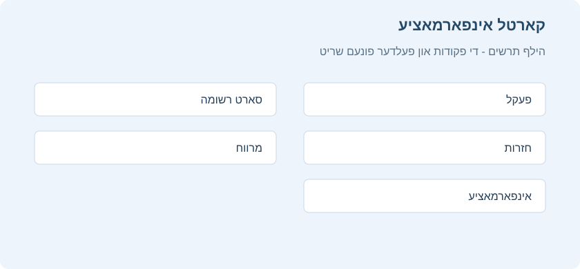
עטליכע באמערקונגען:
פלאץ
ווייזט דעם סדר ווען דאס קארטל וועט קומען צווישן אנדערע נייע קארטלעך. מען קען טוישן דעם פלאץ אין דורכבלעטערן. נאכן לערנען דאס קארטל ווערט דער פלאץ נישט גענוצט, חוץ אויב מען שטעלט דאס קארטל מיט דער האנט צוריק צו ‘נייע’.
אפשטאנד
די ווארט צייט פון איין חזרה ביז דער קומענדיגער.
גרינגקייט
די געשאצטע מאס וויפיל דער אפשטאנד וועט וואקסן ווען מען ענטפערט אויף א חזרה קארטל מיטן “גוט” קנעפל.
דער אונטערשטער טייל ווייזט דעם קארטל’ס חזרות היסטאריע. ‘אפשאצונג’ ווייזט וועלכן קנעפל מען האט געדרוקט (1 = נאכאמאל, 4 = גרינג). ווען מען באשטימט א נייעם צייט פלאן מיט דער האנט דורך “צוריקשטעלן” אדער “שטעלן א חזרה דאטום”, שטייט דער סארט אלס ‘מיט דער האנט’ און די אפשאצונג איז 0.
סטאטיסטיק
מען קען עפענען דעם סטאטיסטיק פענצטער דורך דרוקן סטאטיסטיק אויבן אינעם הויפט פענצטער, אדער T.
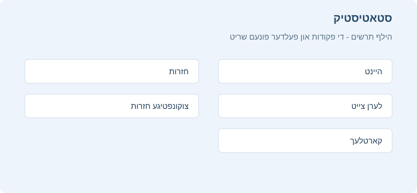
די חזרות היץ מאפע ווערט ערקלערט ביי דער פעקלעך פענצטער, און זי קומט אויפן הויפט פענצטער און אינעם פעקל סיכום. דער סטאטיסטיק פענצטער אליין איז בעיקר פאר גראפן, פארטיילונגען און מער אויספירליכע באריכטן איבער אייער לערנען מיט דער צייט.
אויסקלייבן פעקלעך / זאמלונג
פעקל
לויט דער ברירת מחדל ווייזט דער סטאטיסטיק פענצטער דאטן פונעם יעצטיגן אויסגעקליבענעם פעקל און אלע זיינע אונטערפעקלעך. מען קען אבער אויסקלייבן יעדן פעקל פון דער זאמלונג דורך שרייבן זיין נאמען אינעם טעקסט פעלד אויבן, אדער מיטן פעקל אויסוואל אונטן.
זאמלונג
אויב איר צייכנט אן דעם קעסטל, וועט די סטאטיסטיק זיין פאר אייער גאנצע זאמלונג. מען קען אויך ווייזן גראפן פאר סיי וועלכן זוכן דורך צולייגן פילטערס אינעם זוכן פעלד אויבן.
היסטאריע
לויט דער ברירת מחדל ווייזט Anki סטאטיסטיק פאר די לעצטע 12 חדשים. אויבן קען מען דאס טוישן צו דער גאנצער היסטאריע אדער דער גאנצער לעבנס צייט פונעם פעקל. דער “היינט” טייל אויבן ווערט פארשטייט זיך נישט געטוישט דורך דעם אויסוואל.
נאך
- דרוקן “אפזיכערן אלס PDF” אונטן זיכערט אפ א PDF דאקומענט פון דער סטאטיסטיק אין א טעקע אויפן דעסקטאפ, כדי גרינג צו טיילן די סטאטיסטיק מיט אנדערע.
- ווען מען מעקט אויס רשומות, בלייבט זייער חזרות היסטאריע אין Anki. זי ווערט נישט אריינגערעכנט אין א באזונדערן פעקל’ס סטאטיסטיק, ווייל Anki קען נישט וויסן אין וועלכן פעקל די אויסגעמעקטע קארטלעך זענען געווען. זי ווערט אבער אריינגערעכנט אין דער סטאטיסטיק פון דער גאנצער זאמלונג.
היינט
אויבן אינעם סטאטיסטיק פענצטער איז דא א קורצע ליסטע פון סטאטיסטיק איבער די חזרות וואס איר האט פארענדיגט היינט. א “חזרה” מיינט דא “איין ענטפער אויף א קארטל”. דאס זעלבע קארטל קען דעריבער ווערן געציילט אלס עטליכע חזרות אויב מען האט עס געדארפט זען עטליכע מאל. אויך ענטפערן אויף א לערנען קארטל ווערט געציילט אלס א “חזרה”. דא זענען עטליכע פרטים וועמענס באדייט קען נישט זיין גלייך קלאר:
צאל “נאכאמאל”
דאס איז דער צאל חזרות וואס איר האט נישט געקענט (דאס הייסט, געדרוקט ‘נאכאמאל’). דער פראצענט ריכטיגע ענטפערס דערנאך איז דער צאל קארטלעך וואס איר האט נישט דורכגעפאלן, צעטיילט דורכן גאנצן צאל קארטלעך וואס איר האט געלערנט.
לערנען, חזרה, איבערלערנען, געפילטערט
דער צאל חזרות וואס זענען געווען לערנען קארטלעך, חזרה קארטלעך, קארטלעך ביים איבערלערנען, אדער קארטלעך געלערנט אין א געפילטערטן פעקל פאר זייער באשטימטער חזרה צייט.
די סטאטיסטיק פון היינט איז נישט קיין גוטער אלגעמיינער מאס פון אייער לערנען פארשריט. יעדער האט גוטע און שווערע טעג, און א נידריגער הצלחה פראצענט אין איין טאג איז נישט קיין סיבה צו זארגן. די אנדערע סטאטיסטיק, וואס נעמט אריין לענגערע תקופות, גיט מער נוצליכע אינפארמאציע אויב איר ווילט צופאסן אייערע לערנען געוואוינהייטן אדער צייט פלאן איינשטעלונגען לויט אייערע רעזולטאטן.
די “היינט” סטאטיסטיק ווערט נישט געטוישט דורך דער תקופה וואס איר קלייבט אונטן אינעם פענצטער.
די גראפן
קומענדיגע חזרות
דער גראף ווייזט א שאצונג פונעם צאל חזרות פאר א טאג אין דער צוקונפט, אויב איר וועט נישט לערנען נייע קארטלעך און נישט פארגעסן קיין קארטלעך. די זיילן און דער לינקער אקס ווייזן וויפיל קארטלעך וועלן ווערן גרייט צו חזרה יעדן טאג אויב איר לערנט אלע קארטלעך טעגליך. דער גראער שאטירטער טייל און דער רעכטער אקס ווייזן וויפיל קארטלעך וועלן זיין גרייט אין יענעם טאג אויב איר לערנט גארנישט ביז דעמאלט. דער פאראויסשאצונג גראף רעכנט נישט קארטלעך וואס זענען שוין פארשפעטיגט; א גרויסער הויפן פון פארשפעטיגטע קארטלעך וועט דעריבער נישט ווערן געוויזן.
טעגליכער עול איז א שאצונג פונעם דורכשניטליכן צאל חזרה קארטלעך פאר א טאג. אויב איר האט נישט קיין פארשפעטיגטן הויפן, זאל דער טעגליכער עול זיין בערך גלייך צו אייער צאל חזרה קארטלעך.
קאלענדאר
דער גראף ווייזט די פריערדיגע חזרה טעטיגקייט. האלטן דעם מייז איבער א טאג לאזט אייך זען דעם צאל חזרות אין יענעם טאג. דרוקט אויף א וואכן טאג צו שטעלן אים אלס ערשטן טאג.
חזרות
דער גראף ציילט וויפיל קארטל חזרות איר האט געטון. די זיילן קענען באדייטן טעג, וואכן אדער חדשים, לויט דער תקופה וואס איר האט אויסגעקליבן אונטן. די פארשידענע קאלירן ווייזן וויפיל פון די קארטלעך וואס איר האט געענטפערט יעדן טאג זענען געווען באפעסטיגטע, פרישע, ביים איבערלערנען אדער ביים לערנען. עס איז אויך דא א באזונדערע גרופע פאר קארטלעך געענטפערט אין א געפילטערטן אדער שינון פעקל פאר זייער חזרה צייט. דער גראער שאטירטער טייל און דער רעכטער אקס ווייזן דעם צוזאמענגעציילטן סך הכל פאר יעדן סארט חזרה ווי די צייט גייט ווייטער אינעם גראף. ביים טאג 0 זעט מען דעריבער דעם סך הכל פאר דער גאנצער געוויזענער תקופה.
צאל קארטלעך
דער קיילעכדיגער דיאגראם ווייזט וועלכער פראצענט פון אייער פעקל אדער זאמלונג איז באפעסטיגטע קארטלעך, קארטלעך וואס איר האט נאך נישט געזען, פרישע / לערנען קארטלעך און אפגעשטעלטע קארטלעך. צו רעכענען גענויער, ווייזט דער שליסל דעם גענויען צאל קארטלעך אין יעדער קאטעגאריע, און דער גאנצער צאל קארטלעך שטייט ביי דער זייט.
חזרה צייט
דער גראף ארבעט ווי ‘צאל חזרות’, אבער עס רעכנט וויפיל צייט איר האט גענוצט פאר יעדן קארטל, אנשטאט דעם צאל געענטפערטע קארטלעך.
חזרה אפשטאנדן
דער גראף ווייזט וויפיל קארטלעך האבן א געוויסן אפשטאנד (די ווארט צייט צווישן צוויי חזרות). דער גראער שאטירטער טייל און דער רעכטער אקס ווייזן וועלכער פראצענט פון אייערע קארטלעך האט אן אפשטאנד קלענער אדער גלייך צו דער צייט אונטער יענעם פינטל. די אויסגעקליבענע תקופה ווירקט דא אנדערש ווי ביי אנדערע גראפן: אנשטאט באשטימען וועלכע קארטלעך אדער לערנען תקופה מען נעמט אריין, באגרעניצט זי די געוויזענע אפשטאנדן. למשל, אפשטאנדן פון 14 חדשים ווערן נישט געוויזן אויף א גראף פון איין יאר.
קארטל גרינגקייט
דער גראף ווייזט וויפיל קארטלעך האבן א געוויסן גרינגקייט פאקטאר. מען זעט אויך די דורכשניטליכע גרינגקייט פונעם אויסגעקליבענעם פעקל אדער זאמלונג.
קארטל פעסטקייט
ווערט נאר געוויזן ווען FSRS איז אנגעצונדן. פעסטקייט ווערט באשטימט אלס די צייט וואס עס נעמט אז דער שאנס צו געדענקען זאל פאלן פון 100% צו 90%.
קארטל שוועריגקייט
ווערט נאר געוויזן ווען FSRS איז אנגעצונדן. שוועריגקייט באשטימט ווי שנעל דער קארטל אפשטאנד וואקסט נאך יעדער חזרה.
שאנס צו געדענקען
ווערט נאר געוויזן ווען FSRS איז אנגעצונדן. “קענען זיך דערמאנען” און “דער שאנס זיך דערמאנען” באדייטן דא די זעלבע זאך.
געשאצטע גאנצע ידיעה איז דער גאנצער צאל קארטלעך וואס איר געדענקט מסתמא יעצט. מען רעכנט דאס דורך מולטיפליצירן דעם דורכשניטליכן שאנס צו געדענקען מיטן צאל קארטלעך וואס איר האט שוין געחזרט כאטש איינמאל.
צעטיילונג לויט שעה’ן
דער גראף ווייזט דעם פראצענט געלונגענע חזרות אין געוויסע שעה’ן.
- דער X אקס (אונטן): די שעה פונעם טאג.
- דער Y אקס (רעכטס): דער צאל געלערנטע קארטלעך.
- דער צווייטער Y אקס (לינקס): דער הצלחה פראצענט.
די בלויע זיילן ווייזן וויפיל חזרות איר האט געטון אין יענער שעה, כדי צו וויסן ווי שטארק מען קען זיך פארלאזן אויף די רעזולטאטן. דער גראער שאטירטער טייל ווייזט דעם פראצענט געלונגענע חזרות (ווען איר האט נישט געדרוקט נאכאמאל) אין יענער שעה.
ענטפער קנעפלעך
דער גראף ווייזט וויפיל מאל איר האט אויסגעקליבן ‘נאכאמאל’, ‘שווער’, ‘גוט’ אדער ‘גרינג’ ביים לערנען נייע / לערנען קארטלעך, פרישע און באפעסטיגטע. Anki ווייזט אויך דעם פראצענט ריכטיגע חזרות פאר יעדן סארט קארטל.
אמת’ע געדענק ראטע טאבעלע
די טאבעלע ווייזט אייער געדענק ראטע פאר פארשידענע קארטלעך און תקופות. א קארטל איז “באפעסטיגט” ווען זיין אפשטאנד איז ≥21 טעג. נאר איין חזרה א טאג, די ערשטע, ווערט געציילט. ‘נאכאמאל’ ווערט גערעכנט אלס “פארגעסן”; ‘שווער’, ‘גוט’ און ‘גרינג’ אלס “געוואוסט”. מען קען מיט דער טאבעלע איבערקוקן ווי גוט Anki’ס אפשטאנד חזרות אלגאריטם ארבעט פאר אייך.
אויב איר נוצט FSRS, זאל אייער אמת’ע געדענק ראטע זיין נאענט צו דער געוואונטשענער געדענק ראטע. דאטן פון איין טאג האבן ווייניג באדייט, דעריבער איז בעסער צו קוקן אויף חודש’ליכע דאטן. אויב אייער אמת’ע געדענק ראטע שטימט נישט גוט מיט דער געוואונטשענער ראטע, זענען דא עטליכע אלגעמיינע עצות:
- פארבעסערט אייערע FSRS פאראמעטערס.
- נוצט באזונדערע פאראיינשטעלונגען מיט אייגענע פאראמעטערס פאר פארשידענע נושאים.
- שטעלט אפ אדער שרייבט איבער עלוקות.
- מאכט זיכער אז איר נוצט די ענטפער קנעפלעך ווי זיי זענען געמאכט.
מעדיע
Anki היט די קול- און בילד-פיילס פון אייערע רשומות אין א תיקיה נעבן דער זאמלונג. ווען איר לייגט צו מעדיע אין Anki, דורך דעם פייפערקליפ-אייקאן אינעם רעדאקטאר אדער דורכן איינקלעבן אין א פעלד, קאפירט Anki דעם פייל פונעם אריגינעלן פלאץ אין דער מעדיע-תיקיה. דאס מאכט גרינגער צו שאפן רעזערוו-קאפיעס פון אייער מעדיע, אדער זי איבערצופירן צו אן אנדער קאמפיוטער.
פרופן מעדיע
איר קענט נוצן הויפט-מעניו > מאגר-כלים > פרופן מעדיע, כדי דורכצוקוקן אייערע רשומות און די מעדיע-תיקיה. די פעולה שאפט א באריכט פון פיילס וואס ווערן נישט גענוצט דורך קיין רשומה, און פון מעדיע וואס ווערט דערמאנט אין רשומות אבער פעלט אין דער מעדיע-תיקיה. איר קענט אויך:
- אויסמעקן מעדיע-פיילס וואס ווערן נישט גענוצט.
- צולייגן א תגית צו רשומות וואס ווייזן אויף פעלנדע מעדיע.
- אויסליידיגן די אשפה-תיקיה.
- צוריקשטעלן אויסגעמעקטע פיילס אין אייער מעדיע-תיקיה.
אויב איר מעקט אויס אומגענוצטע מעדיע דורך דער מעדיע-פרופונג, באוועגט Anki זי אין דער אפערירן-סיסטעם’ס אשפה, כדי איר זאלט קענען צוריקשטעלן מעדיע וואס איז בטעות אויסגעמעקט געווארן.
צולייגן מעדיע מיט דער האנט
ווען איר לייגט צו מעדיע דורכן Anki-ממשק, פארזיכערט די פראגראם אז די פייל-נעמען זענען קודירט אויף אן אופן וואס ארבעט אויף פארשידענע מכשירים. זי נעמט אראפ צייכנס וואס ארבעטן נישט אויף געוויסע אפערירן-סיסטעמען און פארקירצט זייער לאנגע פייל-נעמען.
אויב איר לייגט צו פיילס מיט דער האנט אין אייער מעדיע-תיקיה, נוצט דערנאך הויפט-מעניו > מאגר-כלים > פרופן מעדיע, כדי צו פארזיכערן אז די פייל-נעמען זענען ריכטיג קודירט. אויב איר לאזט אויס דעם שריט, וועלן פיילס מיט אומפאסיגע נעמען ווערן איבערגעהיפט ביים סינכראניזירן.
Anki גייט נישט נאך סימבאלישע לינקס אין דער מעדיע-תיקיה ביים סינכראניזירן. אויב איר נוצט אזעלכע לינקס פאר פאנטן, אויסשטעל-בלעטער אדער אנדערע מיטלען, קענען די פיילס אויסזען ווי זיי ארבעטן אויפן דעסקטאפ, אבער נישט ארבעטן אויף מאבילע מכשירים. כדי זיי זאלן ריכטיג ווערן סינכראניזירט, קאפירט די פיילס אליין אין דער collection.media-תיקיה, אנשטאט נוצן סימבאלישע לינקס.
געשטיצטע פארמאטן
Anki נוצט די פראגראם mpv, מיט mplayer אלס אן אנדער ברירה, כדי צו שפילן קול און ווידעאס. אסאך פייל-פארמאטן ווערן געשטיצט, אבער נישט אלע ארבעטן אויך אין AnkiWeb.
עלוקות
עלוקות הן כרטיסים שאתם שוכחים שוב ושוב. מכיוון שהן דורשות חזרות רבות כל כך, הן גוזלות הרבה יותר מזמנכם, בהשוואה לכרטיסים אחרים.
Anki יכול לעזור לכם לזהות עלוקות. בכל פעם שכרטיס חזרה “נכשל” (כלומר, נכשלים בו בזמן שהוא במצב חזרה), מונה השגיאות עולה. כאשר המונה הזה מגיע ל-8, אנקי מתייג את הרשומה כעלוקה ומשהה את הכרטיס. את הסף, והאם להשהות את הכרטיס או לא, ניתן להתאים באפשרויות החפיסה.
אם תמשיכו להיכשל בכרטיס, Anki ימשיך להתריע בפניכם על העלוקה באופן תקופתי. התראות אלו מתרחשות במחצית סף העלוקה הראשוני. לדוגמה, אם הגדרתם את ההתראה על 8 כישלונות, התראות עתידיות יתרחשו כל 4 כישלונות (ב-12, 16, וכן הלאה).
ברגע שזוהתה עלוקה, ישנן מספר דרכים לטפל בה.
עריכה
השיטה היעילה ביותר לטפל בעלוקות היא לשנות את אופן הצגת המידע. אולי הכרטיסים שלכם מכילים יותר מדי מידע, או שאתם מנסים לשנן משהו מבלי להבין אותו לעומק. לעתים קרובות, מועיל לפעול לפי עקרונות ניסוח הידע של ד“ר פיוטר ווזניאק, יוצר SuperMemo: קודם להבין ורק אחר כך לשנן; לפרק כל רעיון מורכב לכרטיסים קצרים ועצמאיים; לשאול שאלה אחת ברורה בכל כרטיס; להימנע מרשימות ארוכות, ניסוחים עמומים ועומס חזותי; להשתמש בדוגמאות, הקשרים, תמונות ועזרי זיכרון כשזה מחזק את ההבנה; ולתקן או למחוק כרטיס שממשיך להיכשל במקום להמשיך להילחם בו כפי שהוא. כרטיסים מסוימים יכולים להיתרם משימוש בעזר זיכרון (מנמוניקה). אפילו כרטיסים שניסוחם טוב עשויים להזדקק לחיזוק הלכידות (קוהרנטיות), למשל, על ידי הוספת כרטיסים למושגים קשורים. עם זאת, דרוש ניסיון רב כדי לדעת כיצד לנסח את החומר כראוי, לפרק אותו למרכיבים הקטנים ביותר האפשריים, ולהשתמש בטכניקות זיכרון.
פירוט: עשרים כללים לניסוח ידע טוב
לימוד יעיל מתחיל מהבנה. אל תנסו לשנן דבר שאינכם מבינים; קודם קראו, בררו את המושגים ובנו תמונה כללית של הנושא. לאחר מכן התחילו מהיסודות, ורק אז עברו לפרטים. כרטיס טוב צריך לשאול דבר אחד קטן וברור, עם תשובה קצרה ככל האפשר. אם כרטיס ממשיך להיכשל, נסו לפצל אותו לכמה כרטיסים, לקצר את הניסוח או להחליף אותו בשאלת השלם את החסר.
הימנעו מרשימות ארוכות ומקבוצות לא מסודרות. אם חייבים ללמוד סדרה, עדיף לפרק אותה ליחידות קטנות, להשתמש בהשלמות חסר חופפות או לבנות הקשר ברור שמחזיק את הסדר. תמונות, הסתרת תמונה, דוגמאות אישיות, רמזים והקשרים רגשיים יכולים לחזק את הזיכרון, כל עוד הם אינם מכבידים על השאלה עצמה. כשיש שני מושגים דומים, נסחו את הכרטיסים כך שיהיה ברור בדיוק מה מבדיל ביניהם, אחרת תיווצר הפרעה שתגרום לבלבול חוזר.
כדאי ללטש ניסוח: להוריד מילים שאינן נצרכות, לשים מקור או תאריך כשמדובר במידע שעלול להשתנות, וליצור לעיתים כמה כרטיסים על אותו רעיון מזוויות שונות. אין צורך ללמוד הכל. תעדפו את החומר, מחקו או השהו פריטים לא חשובים, והחזירו תשומת לב לכרטיסים שבהם הלמידה מפסיקה להיות נעימה או ברורה - בדרך כלל שם מסתתרת בעיית ניסוח.
(על פי ד“ר פיוטר ווזניאק, “Effective learning: Twenty rules of formulating knowledge”)
פירוט: דרך עבודה מסודרת עם עלוקות
עלוקה אינה רק כרטיס קשה; היא כרטיס שממשיך לקחת זמן חזרה בלי להתייצב בזיכרון. לכן לא כדאי פשוט להחזיר אותה ללימוד שוב ושוב. קודם בדקו אם יש בעיה גלויה: שאלה עמומה, ניסוח ארוך מדי, כמה פרטים בכרטיס אחד, מושגים שאינכם מבינים, או דמיון מבלבל לכרטיס אחר. אם כן, ערכו את הכרטיס, פצלו אותו או הוסיפו כרטיסי רקע שמחזקים את ההבנה.
אם הבעיה אינה ניסוח אלא חוסר הקשר, הוסיפו כרטיסים קטנים שמבהירים את החלק החסר: הגדרה בסיסית, הבחנה בין שני מושגים דומים, או שאלה שמסבירה למה התשובה נכונה. אם הכרטיס שואל בצורה שלא באמת משרתת את מטרת הלימוד, החליפו אותו בשאלה אחרת שמודדת את מה שאתם באמת רוצים לדעת. לא כל כרטיס ראוי להצלה: אם המידע אינו חשוב מספיק, מחיקה או השהיה חוסכות זמן ומפנות מקום לחומר מועיל יותר.
כאשר החומר חשוב אבל אינו דחוף, אפשר להשאיר את הכרטיס מושהה ולחזור אליו אחרי שתסיימו חומר מרכזי יותר. אם הכרטיס חשוב ודחוף, ולא עזרו עריכה, פיצול, הקשר או השהיה, נסו לבנות עזר זיכרון. עדיף לפעמים ליצור כרטיס נפרד על עזר הזיכרון עצמו, וכרטיס נוסף שמלמד להשתמש בו. לאחר שטיפלתם בעלוקה, הסירו ממנה את תגית leech כדי שלא תחזרו לטפל באותו כרטיס שכבר תוקן.
(על פי Soren Bjornstad, “Dealing with Leeches”)
מחיקה
אם החומר שאתם מתקשים איתו אינו חשוב מספיק כדי להצדיק את הזמן המושקע בו, אתם יכולים פשוט למחוק את הכרטיס. על ידי מחיקה סלקטיבית של פריטים קשים ועלומים, תוכלו להקדיש יותר זמן ללימוד חומר אחר, ובכך להפוך את הלמידה למהנה יותר. אם אתם חושבים שהכרטיס עשוי להיות שימושי לעיון עתידי, אתם יכולים להשאיר אותו במצב מושהה.
הפרעה
חלק מהעלוקות נגרמות כתוצאה מ“הפרעה“. לדוגמה, לומד שנתקל בשני מושגים דומים,עלול למצוא את עצמו מבלבל בין השניים בעת ניסיון לענות. במצבים כאלה, לעתים קרובות מועיל להתרכז ברעיון אחד בכל פעם. לאחר שהרעיון האחד טבוע היטב בזיכרונכם, תוכלו להתחיל ללמוד את הרעיון השני. לכן, במצבים אלו, ייתכן שתרצו להשאיר אחת מהמילים במצב מושהה עד שתלמדו היטב את השנייה, ורק אז לבטל את ההשהיה.
פתרון בעיות
אם נתקלתם בבעיה עם Anki, אנא נסו את הצעדים הבאים לפי הסדר:
1. הפעילו מחדש את Anki
אנא סגרו את Anki, ולאחר מכן הפעילו אותו שוב.
אם אינכם יכולים לסגור את Anki עקב הודעת שגיאה, תוכלו לסגור את Anki בכוח באמצעות מנהל המשימות, או להפעיל מחדש את המחשב. Anki שומר את הנתונים באופן קבוע, כך שברוב המקרים לא תאבדו יותר מכמה דקות של עבודה.
אם הבעיה לא חוזרת על עצמה, תוכלו לדלג על הצעדים הבאים.
2. בדקו תוספים
אנא סגרו את Anki, ולאחר מכן הפעילו שוב במצב בטוח על ידי לחיצה ממושכת על מקש Shift בזמן הפעלת התוכנה. המשיכו להחזיק את מקש Shift לחוץ עד שההודעה על המסך תיידע אתכם ש-Anki הופעל במצב בטוח.
אם הבעיה נעלמת, הדבר מצביע על כך שתוסף כלשהו גורם לבעיה. יש לפנות עם מידע זה למייל התמיכה.
3. בדקו את גרסת Anki שלכם
בדקו במייל הפצת אנקי האוטומטי - 3422973@gmail.com - האם יצאה גירסא חדשה יותר. יתכן שהבעיה לא קיימת בה.
ניתן למצוא את פרטי הגירסא הנוכחית בתפריט עזרה ושם בתמיכה טכנית למטה (האפשרות תמיכה טכנית לא מופיעה בתפריט עזרה כאשר מבצעים את סעיף 2 לעיל).
4. בדקו את מסד הנתונים
לאחר הפעלה מחדש של Anki, אנא נסו את האפשרות תפריט ← כלי מאגר ← בדיקת מסד נתונים כדי לוודא שאין בעיות באוסף שלכם.
5. הפעילו מחדש את המחשב
לפעמים הפעלה מחדש של המחשב עשויה לעזור.
6. שנו את מנהל התקן הווידאו
קריסות ובעיות תצוגה יכולות להיגרם על ידי מנהל התקן הווידאו. מעבר למנהל התקן וידאו אחר עשוי לעזור. ודאו שאתם מנסים את כל אפשרויות מנהל ההתקן ומפעילים מחדש את Anki לאחר כל שינוי.
הדרך הקלה ביותר היא לפתוח את תפריט ← העדפות ולשנות את מנהל ההתקן מהתפריט הנגלל. אם אין אפשרות לבצע זאת בדרך זו יש לפנות לתמיכה.
7. אפסו את גודלי החלונות
לפעמים לחיצה על כפתור איפוס גודלי חלונות במסך ההעדפות מיד לאחר הפעלת Anki תעזור.
8. אם הבעיה נמשכת
אם וידאתם שאתם משתמשים בגרסה האחרונה של Anki, ואתם עדיין מקבלים שגיאות בעת הפעלת Anki תוך כדי לחיצה ממושכת על מקש shift, אנא דווחו על הבעיה, וכללו בהודעה שלכם את הודעת השגיאה שתקבלו.
תקלות נפוצות ב-Windows
התוכנה לא נפתחת ואין הודעת שגיאה
אם Anki אינה נפתחת כלל, נסו קודם להפעיל מחדש את המחשב ולהתקין את הגרסה האחרונה של Anki.
אם הבעיה נמשכת, הפעילו את Anki דרך חלון פקודה כדי לראות אם מופיעה שגיאה מוסתרת:
- פתחו את תפריט ההתחלה.
- הקלידו
cmdופתחו את שורת הפקודה. - הדביקו אחת מהפקודות הבאות, לפי מיקום ההתקנה של Anki, ולחצו Enter:
"C:\Program Files\Anki\anki-console.bat"
"%LocalAppData%\Programs\Anki\anki-console.bat"
אם Anki עדיין לא נפתחת, שלחו לתמיכה צילום מסך של החלון לאחר שהפקודה מסתיימת.
שגיאות api-ms או win32comgenpy
אם מופיעה שגיאה כגון api-ms-win חסר, Failed to execute script pyi_rth_win32comgenpy, Failed to execute script runanki או שגיאה בטעינת DLL של Python, בדרך כלל חסרים במחשב עדכוני Windows או רכיבי מערכת הנדרשים להפעלת Anki.
פתחו את Windows Update, התקינו את כל העדכונים הזמינים, הפעילו מחדש את המחשב, ולאחר מכן נסו לפתוח שוב את Anki.
אם מדובר ב-Windows 7/8, או אם אינכם מצליחים להשלים את העדכונים ידנית, בקשו ממייל התמיכה את פותר הבעיות האוטומטי. לאחר קבלת הקובץ, סגרו את Anki, הפעילו את פותר הבעיות כמנהל, המתינו לסיום הפעולה, הפעילו מחדש את המחשב, ונסו שוב.
שגיאת Qt platform plugin
אם Anki מציגה הודעה על Qt platform plugin או could not load the Qt platform plugin, בדרך כלל ההתקנה של Anki נפגמה או שנשארו במחשב כמה התקנות ישנות במקביל.
הסירו את כל ההתקנות של Anki דרך הגדרות Windows, הפעילו מחדש את המחשב, ולאחר מכן התקינו מחדש את הגרסה האחרונה. הסרת התוכנה אינה מוחקת את האוסף שלכם, שנשמר בתיקיית הנתונים של המשתמש.
אין גישה לאינטרנט, סנכרון או הורדת תוספים
אם Anki אינה מצליחה להתחבר לאינטרנט, לסנכרן, או להוריד תוספים, בדקו אם מותקנים במחשב סינון אינטרנט, VPN, אנטי-וירוס או חומת אש. יש לוודא ש-Anki מורשית להתחבר לרשת.
בנוסף, Anki צריכה לפעמים להתחבר לעצמה דרך כתובת מקומית במחשב, כמו 127.0.0.1 או localhost. חסימה של פורט מקומי כזה יכולה להיראות כמו בעיית אינטרנט, גם כשהדפדפן עובד רגיל. אם אתם משתמשים בסינון או ב-VPN, בקשו מהספק לאפשר ל-Anki גישה לרשת וגם לכתובת המקומית של המחשב.
סינכראניזירן מיט AnkiWeb
אינהאלט
AnkiWeb איז א דינסט וואס לאזט אייך האלטן אייער קארטלעך זאמלונג סינכראניזירט צווישן פארשידענע מכשירים און לערנען אנליין. עפנט אן אומזיסטע קאנטע אויפן AnkiWeb וועבזייטל איידער איר טוט די פאלגנדע שריט.
איינשטעלן
צו אנהייבן סינכראניזירן אייער זאמלונג צווישן מכשירים, דרוקט אויפן סינכראניזירן קנעפל אינעם מעניו, אדער Y אויפן קלאוויאטור. מען וועט אייך בעטן דעם AnkiWeb באניצער נאמען און פאסווארט וואס איר האט געשאפן ביים זיך רעגיסטרירן.

ביים ערשטן סינכראניזירן וועט Anki פרעגן צי איר ווילט אויפלאדן אדער אראפלאדן. אויב איר האט קארטלעך אויפן קאמפיוטער און אייער AnkiWeb קאנטע איז ליידיג, קלייבט אויפלאדן צו שיקן אייערע דאטן צו AnkiWeb. אויב איר האט קארטלעך אין AnkiWeb פון אן אנדער מכשיר און נישט אויפן קאמפיוטער, קלייבט אראפלאדן צו פארבייטן די ליידיגע לאקאלע זאמלונג מיט די קארטלעך פון AnkiWeb. אויב ביידע מכשירים האבן פארשידענע קארטלעך, [דארף מען נאך ארבעט](#מיזוג התנגשויות) כדי נישט צו פארלירן דאטן.
נאכן ערשטן סינכראניזירן אין איין ריכטונג, קען Anki צונויפמישן ענדערונגען פון עטליכע פלעצער, מיט עטליכע אויסנאמען.
אויב עטליכע מענטשן נוצן Anki אויפן זעלבן קאמפיוטער און יעדער האט אן אייגענעם פראפיל, דארף יעדער מאכן אן אייגענע AnkiWeb קאנטע צום סינכראניזירן. סינכראניזירן עטליכע פראפילן מיט איין AnkiWeb קאנטע וועט פארלירן דאטן.
אויטאמאטיש סינכראניזירן
נאכן אנצינדן סינכראניזירן וועט Anki אויטאמאטיש סינכראניזירן ווען אייער זאמלונג ווערט פארמאכט אדער געעפנט. אויב איר ווילט דאס טון מיט דער האנט, קען מען אויסלעשן אויטאמאטיש סינכראניזירן אין Anki’ס איינשטעלונגען.
דער קנעפל קאליר
דער סינכראניזירן קנעפל ווערט בלוי ווען מען דארף א געווענליכע סינכראניזאציע, און רויט ווען מען דארף א פולע סינכראניזאציע.
מידיא
Anki סינכראניזירט אלע קול טעקעס און בילדער וואס אייערע רשומות נוצן. עס דערקענט ווען מידיא ווערט צוגעלייגט, אראפגענומען אדער פארביטן אין דער מידיא טעקע, אבער נישט ווען מען רעדאקטירט אן עקזיסטירנדע טעקע. כדי די ענדערונגען זאלן ווערן סינכראניזירט, מוז מען אויך צולייגן, אראפנעמען אדער פארבייטן א טעקע.
סינכראניזירן אין איין ריכטונג (ווען מען פרעגט אויפלאדן אדער אראפלאדן) ווירקט נישט אויפן מידיא סינכראן. מידיא ענדערונגען ווערן שטענדיג צונויפגעמישט.
צו פארמיידן בטעות פארלירן דאטן, ווערן אויסמעקונגען נאר סינכראניזירט צו אנדערע מכשירים אויב מען האט זיי געטון נאכן פולן מידיא סינכראן. אויב איר מעקט אויס טעקעס איידער אייער מכשיר איז אינגאנצן סינכראניזירט, און די אויסגעמעקטע טעקעס זענען שוין אין AnkiWeb, וועלן זיי ווערן אראפגעלאדן ביים קומענדיגן סינכראן.
אויב איר האט בטעות אויסגעמעקט מידיא טעקעס און ווילט זיי צוריקשטעלן, עפנט די איינשטעלונגען און לאגט זיך ארויס. ביים קומענדיגן סינכראן וועט Anki צוריקברענגען יעדע אויסגעמעקטע טעקע וואס איז נאך דא אין AnkiWeb.
אויב איר לויפט Anki אלס א פארטאטיווע ווערסיע פון א USB דרייוו, נוצט דעם NTFS טעקע סיסטעם. אויף FAT32 קען Anki נישט דערקענען מידיא ענדערונגען. געווענליך קען מען טוישן דעם טעקע סיסטעם דורך פארמאטירן דעם דרייוו (אכטונג: דאס מעקט אויס אלע טעקעס פונעם דרייוו).
צוזאמענשטויסן
אין א געווענליכן צושטאנד קען מען צונויפמישן חזרות און ענדערונגען פון רשומות. אויב איר חזרט אדער רעדאקטירט קארטלעך אויף צוויי מכשירים פארן סינכראן, היט Anki די ענדערונגען פון ביידע פלעצער. אויב דאס זעלבע קארטל איז געלערנט געווארן אויף צוויי פלעצער, ווערן ביידע חזרות איינגעשריבן אין דער היסטאריע, און דאס קארטל בלייבט אין דעם צושטאנד פון דער לעצטער תשובה.
א טייל ענדערונגען קען Anki נישט צונויפמישן. דאס האט בעיקר שייכות מיטן רשומה אויסשטעל, ווי צולייגן א נייעם פעלד אדער אראפנעמען א קארטל מוסטער. ווען איר טוט אזא פעולה, וועט Anki אייך ווארענען און געבן דעם אויסוואל אפצוזאגן. אויב איר גייט ווייטער, וועט מען ביים קומענדיגן סינכראן פרעגן צי איר ווילט האלטן די לאקאלע קאפיע אדער די קאפיע פון AnkiWeb.
אויב מען טרעפט געוויסע פראבלעמען ביים סינכראן, קען עס אויך צווינגען סינכראניזאציע אין איין ריכטונג. אויב דאס פאסירט כסדר, ווענדט זיך צום שטיצע אימעיל.
ווען מען דארף סינכראניזירן אין איין ריכטונג, מוז מען אויסקלייבן צי צו האלטן די זאמלונג אויפן לאקאלן מכשיר אדער די זאמלונג פון AnkiWeb. אויב ביידע זייטן זענען געטוישט געווארן, קען מען נאר האלטן איין זייט’ס ענדערונגען.
אויב איר קלייבט אויפלאדן, ווערט דער אינהאלט פונעם לאקאלן מכשיר געשיקט צו AnkiWeb. דערנאך מוז מען סינכראניזירן די אנדערע מכשירים און אויסקלייבן אראפלאדן, כדי זיי זאלן באקומען א קאפיע פונעם זעלבן אינהאלט.
אויב איר קלייבט אראפלאדן, ווערן אלע לאקאלע ענדערונגען פארביטן מיט די דאטן פון AnkiWeb.
נאכן סינכראניזירן אלע מכשירים, וועט דער קומענדיגער סינכראן צוריק צונויפמישן ענדערונגען פון ביידע זייטן ווי געווענליך.
צו צווינגען א פולן אויפלאד אדער אראפלאד (למשל, אויב איר האט בטעות אויסגעמעקט א פעקל אויף איין זייט און ווילט אים צוריקברענגען אנשטאט סינכראניזירן זיין אויסמעקונג), צייכנט אן “ביים קומענדיגן סינכראניזירן, צווינגען ענדערונגען אין איין ריכטונג” ביי איינשטעלונגען > סינכראניזירן, און סינכראניזירט ווי געווענליך. איר וועט קענען אויסקלייבן וועלכע זייט צו נוצן.
צווינגען סינכראניזאציע אין איין ריכטונג ווירקט נאר אויף די קארטלעך; די מידיא ווערט סינכראניזירט ווי געווענליך. אויב איר ווילט אראפנעמען טעקעס פון AnkiWeb, מאכט ערשט זיכער אז אייער מכשיר איז אינגאנצן סינכראניזירט. ווען דער סינכראן איז דערהיינטיגט, וועט יעדע טעקע וואס איר נעמט אראפ (למשל דורך איבערקוקן מידיא) ווערן אראפגענומען פון AnkiWeb ביים קומענדיגן סינכראן.
צונויפמישן צוזאמענשטויסן
דער ערשטער סינכראן קען נאר סינכראניזירן אין איין ריכטונג. דעריבער, אויב איר האט צוגעלייגט פארשידענעם אינהאלט אויף פארשידענע מכשירים אדער פראפילן פארן איינשטעלן סינכראן, וועט איין מכשיר’ס אינהאלט פארלוירן ווערן אויב מען שרייבט אים איבער מיטן אנדערן מכשיר’ס אינהאלט. מיט א ביסל ארבעט קען מען צונויפמישן די דאטן מיט דער האנט אין איין זאמלונג.
מאכט ערשט א גיבוי אויף יעדן מכשיר אדער פראפיל, אין פאל עפעס גייט נישט ריכטיג. אין דער קאמפיוטער ווערסיע קען מען נוצן הויפט מעניו > עקספארטירן צו ארויספירן “אלע פעקלעך” מיט צייט פלאן אינפארמאציע און מידיא, און אפזיכערן די טעקע אויף א זיכער פלאץ. אין AnkiMobile קען מען מיטן צולייגן/עקספארטירן קנעפל אויפן פעקלעך פענצטער ארויספירן אלע פעקלעך מיט מידיא.
אויב איינער פון אייערע מכשירים איז א טעלעפאן, סינכראניזירט אים ערשט. אויב עס איז דא א צוזאמענשטויס, קלייבט אויפלאדן צו איבערשרייבן די עקזיסטירנדע AnkiWeb דאטן מיט די דאטן פונעם טעלעפאן. אויב ביידע מכשירים אדער פראפילן זענען אויפן קאמפיוטער, סינכראניזירט ערשט דעם מיט די מערסטע פעקלעך.
גייט יעצט צוריק צום אנדערן מכשיר אדער פראפיל. אויב אויטאמאטיש סינכראניזירן איז אנגעצונדן, קען ארויפקומען א מעלדונג וואס פרעגט אויפלאדן אדער אראפלאדן. דרוקט אפזאגן, ווייל מיר ווילן נאך נישט סינכראניזירן.
אין דער פעקלעך ליסטע, דרוקט אויפן ראדל סימבאל נעבן דעם ערשטן פעקל און קלייבט עקספארטירן. פירט ארויס דעם אינהאלט מיט צייט פלאן און מידיא, און זיכערט אפ די .apkg טעקע. טוט דאס נאכאמאל פאר יעדן פעקל אויפן אויבערשטן שטאפל.
נאכן ארויספירן אלע פעקלעך אויפן אויבערשטן שטאפל, דרוקט דעם סינכראניזירן קנעפל אויבן רעכטס און קלייבט אראפלאדן. דאס שרייבט איבער דעם לאקאלן אינהאלט מיט דעם וואס איר האט סינכראניזירט פונעם אנדערן מכשיר.
יעצט קען מען נוצן הויפט מעניו > אימפארטירן צו אימפארטירן די .apkg טעקעס וואס איר האט פריער ארויסגעפירט. דאס מישט זייער אינהאלט צוזאמען מיטן עקזיסטירנדן אינהאלט, אזוי אז אלעס איז אויף איין פלאץ.
אויסמעקן דאטן פון AnkiWeb
AnkiWeb איז אן אומזיסטע דינסט, און דער סיסטעם מעקט פון צייט צו צייט אויס דאטן פון קאנטעס וואס זענען נישט אין באנוץ, כדי צו שפארן קאסטן. אויב איר האט זיך נישט אריינגעלאגט אדער סינכראניזירט אין די לעצטע 6 חדשים, קענען די דאטן פון אייער קאנטע ווערן אויסגעמעקט.
וואס ווערט אויסגעמעקט
נאר אייערע דאטן וואס זענען געהיטן אין AnkiWeb ווערן אויסגעמעקט. די קאנטע אליין בלייבט, און מען קען זי ווידער נוצן.
אלע קארטלעך אויף אייער קאמפיוטער, טעלעפאן אדער טאבלעט בלייבן אויף יענע מכשירים. זאכן וואס איר האט געטיילט פון אייער קאנטע, אריינגערעכנט פעקלעך און צוגאבן, בלייבן אויך אין AnkiWeb.
צוריקקומען צו AnkiWeb
נאכדעם וואס אייער פעקל דאטן זענען אויסגעלאפן, קען מען זיי נישט צוריקברענגען פון AnkiWeb. אבער אפשר קען מען זיי צוריקשטעלן פון א לאקאלער קאפיע אדער א גיבוי.
פארמיידן אויסמעקן דאטן
ווען איר באזוכט ankiweb.net אדער נוצט סינכראניזירן אין Anki, AnkiMobile אדער AnkiDroid, ווערט אייער קאנטע אויטאמאטיש אנגעצייכנט אלס אקטיוו.
אויב אייער קאנטע איז נישט אקטיוו געווען פאר 6 חדשים אדער מער, און איר האט גענוצט די דינסט פאר א וואך אדער מער, וועט איר באקומען אן אימעיל אז די אויסמעקונג שטייט פאר. צו האלטן די קאנטע אקטיוו, גייט אריין אין ankiweb.net און לערנט א קארטל, אדער סינכראניזירט איינס פון אייערע מכשירים אינערהאלב 30 טעג.
פייערוואלס
Anki דארף קענען מאכן ארויסגייענדיגע HTTPS פארבינדונגען צום סינכראניזירן. עס מוז קענען זיך פארבינדן צו ankiweb.net, sync.ankiweb.net, sync2.ankiweb.net אא“וו. די דאמיינס און זייערע IP אדרעסן קענען זיך טוישן מיט דער צייט. דערפאר ראטן מיר צו ערלויבן צוטריט מיט wildcard צו *.ankiweb.net, כדי ווייניגער צו דארפן טוישן די פייערוואל כללים אין דער צוקונפט.
אויב איר האט א פייערוואל אויפן קאמפיוטער, לייגט צו אן אויסנאם פאר Anki. אויף א נעצווערק פון א ארבעטס פלאץ אדער מוסד, ווענדט זיך צום נעצווערק פארוואלטער פאר הילף; מיר קענען דאס נישט פארריכטן פון דא.
פראקסי סערווערס און פילטערס (נטפרי אא“וו)
שטארק באגרעניצטע נעצווערקס וואס כאפן אויף זיכערע פארבינדונגען און שטעלן צו אייגענע סערטיפיקאטן קענען מאכן SSL טעותן אין Anki. אין אזעלכע סביבות, זעט די אנווייזונגען ביי טעות ביים שאפן א זיכערע פארבינדונג ביים סינכראניזירן, בפרט דעם נטפרי טייל.
FSRS
מאכט זיכער אז אלע אייערע אנקי פראגראמען שטיצן FSRS. Anki 23.10, AnkiMobile 23.10 און AnkiWeb שטיצן עס אלע. AnkiDroid שטיצט עס פון ווערסיע 2.17 און העכער. אויב איינס פון אייערע פראגראמען שטיצט עס נישט, וועט עס נישט ארבעטן ריכטיג.
פארשידענע ענינים
קלאוויאטור-קיצורים
די מערסטע קלאוויאטור-קיצורים אין Anki, אריינגערעכנט די וואס ווערן באשריבן אין דעם מדריך, קען מען טוישן מיט איינשטעלן קלאוויאטור-קיצורים אינעם הויפט-מעניו. איר קענט עפענען דאס פענצטער אויך מיט Shift+A.
אינעם פענצטער קלאוויאטור-קיצורים זענען די פעולות צעטיילט אין טאבים ווי הויפט-עקראן, לערנען, רעדאקטירן ביים לערנען, רעדאקטאר, דורכבלעטערן און אלגעמיינע איינשטעלונגען. צו געפינען א פעולה, גייט צום פאסיגן טאב און דרוקט דעם קנעפל פון דער פעולה וואס איר ווילט טוישן. דערנאך דרוקט דעם געוואונטשענעם צירוף קלאוויאטור-קנעפלעך און זיכערט אפ.
אויב דער קיצור דינט שוין פאר אן אנדער פעולה אין דעם זעלבן פענצטער, וועט איר זען אן אזהרה וועגן דעם צוזאמשטויס. קלויבט אין אזא פאל אן אנדער צירוף, אדער ענדערט אויך דעם פריערדיגן קיצור.

מעניו-קיצורים
אין Windows קענט איר האלטן דעם Alt-קנעפל און דרוקן אן אונטערגעשטראכענע אות אינעם מעניו-נאמען, כדי צו עפענען דעם מעניו.
א טייל פון די מעניוס זענען געווארן איבערגעשטעלט, כדי צו ווייזן נוצליכע פעולות מיט קלארע נעמען. דעריבער קען א געוויסע פעולה זיך געפינען אינעם הויפט-מעניו, אינעם כלי-סרגל, אדער אינעם מעניו פון א רעכטן קליק אין דעם פענצטער וואו זי איז שייך.
זום-איינשטעלונגען
אינעם תצוגה-מעניו אינעם הויפט-מעניו געפינט זיך זום-איינשטעלונגען…. דאס עפנט א פענצטער וואו איר קענט באשטימען די תצוגה-גרייס פון Anki, אן ענדערן די גאנצע אפערירן-סיסטעם.
אויבן אינעם פענצטער קלויבט מען די ארבעטס-אופן: אלע פענצטער - דער זעלבער זום ענדערט דעם זום פאר אלע טיילן פון דער פראגראם צוזאמען; לויט פענצטער - א באזונדערער זום פאר יעדער פענצטער לאזט אייך באשטימען אנדערע ווערטן פארן הויפט-עקראן, דעם קארטל-רעדאקטאר און דעם דורכבלעטער-פענצטער. די ווערטן זענען געווענליך צווישן 50% און 300%.
ווען מען ארבעט לויט פענצטער, קען מען באזונדער טוישן הויפט-פענצטער, קארטל-רעדאקטאר און טעקסט-גרייס ביים דורכבלעטערן (Qt). אויב די תצוגה איז געווארן צו גרויס אדער צו קליין, דרוקט צוריקשטעלן צו צוריקקומען צו די געווענליכע ווערטן.
ביישטייערן
אינהאלט
צולייגן אייערע פעקלעך צום איינגעבויטן מאגר
צו צולייגן די פעקלעך וואס איר האט געשריבן צום איינגעבויטן מאגר פארן תורני’דיגן לומד, שיקט זיי צום אימעיל anki4tora@gmail.com.
מען קען שיקן נאר פעקלעך מיט א קלארן סדר. צום ביישפיל:
בבא קמא::שור שנגח ד' וה'
אדער:
חושן משפט:: סימן ג
די פעקלעך וועלן אריינקומען אינעם ציבור’דיגן מאגר לויט דער באשלוס פונעם צוות.
פריוואט טיילן פעקלעך
אויב איר ווילט טיילן פעקלעך מיט א באגרענעצטער גרופע, ווי א חבורה אדער א קלאס, קענט איר זיי עקספארטירן.
צו טיילן א פעקל פריוואט, גייט צום פייל-מעניו און קלויבט עקספארטירן. קלויבט איין פעקל, נישט אלע פעקלעך, און לעשט אויס אריינרעכענען תזמון. איר קענט אויך עפענען דעם מעניו אויף א פעקל און קלויבן עקספארטירן…. דאס שאפט א .apkg-פייל וואס איר קענט טיילן מיט אנדערע.
מען קען טיילן און איבערגעבן דעם .apkg-פייל ווי יעדן געווענליכן פייל אויפן קאמפיוטער.
אלע Anki-ווערסיעס לאזן גרינג אימפארטירן אן apkg-פייל דורך דרוקן אדער קלאפן אויף אים.
ווען א באנוצער אימפארטירט אן .apkg-פייל, ווערן קארטלעך וואס זענען שוין אין זיין זאמלונג נישט נאכאמאל צוגעלייגט. אלע נייע קארטלעך ווערן צוגעלייגט. בתנאי אז מען נוצט דעם זעלבן סארט רשומה, ווערן אויך געענדערטע קארטלעך דערהויבן. כדי צו פארמיידן דאטן-פארלוסט, ווערן קארטלעך וואס זענען אויסגעמעקט אינעם נייעם apkg-פייל נישט אויסגעמעקט פון דעם באנוצער’ס זאמלונג. אויב איר דארפט אז באנוצער זאלן אויסמעקן געוויסע קארטלעך, דארפט איר זיך מיט זיי פארבינדן וועגן דעם.
ביישטייערן קוד און העלפן מיט פראגראמירן
איר קענט זיך פארבינדן דורך anki4tora@gmail.com וועגן דעם.
העלפן מיט פארשפרייטן
אויב איר ווילט האבן א חלק אין זיכוי הרבים, קענט איר דרוקן אן אנאנס פאר דער פראגראם דורך הילף > זיכוי הרבים אינעם מעניו. דער אנאנס פאסט סיי פאר שווארץ-ווייס, סיי פאר קאליר.
אפטע פראגעס
אפטע פראגעס
די אפטע פראגעס געפינען זיך אין א באזונדערער FAQ-תיקיה נעבן דעם מדריך. זעט די הקדמה צו די אפטע פראגעס, אדער גייט גלייך צום געוואונטשענעם נושא דורכן תוכן הענינים פון די שאלות ותשובות.